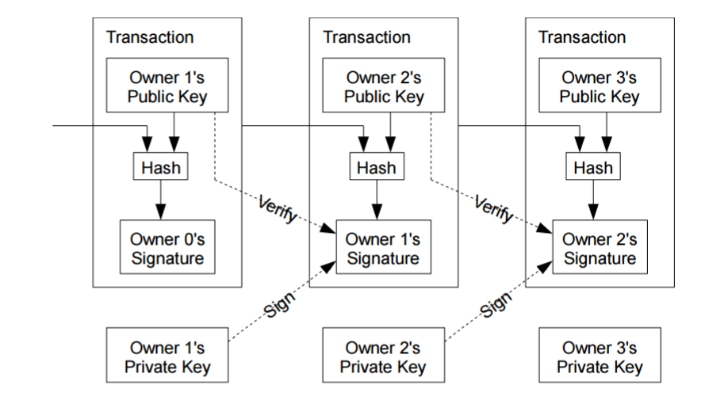
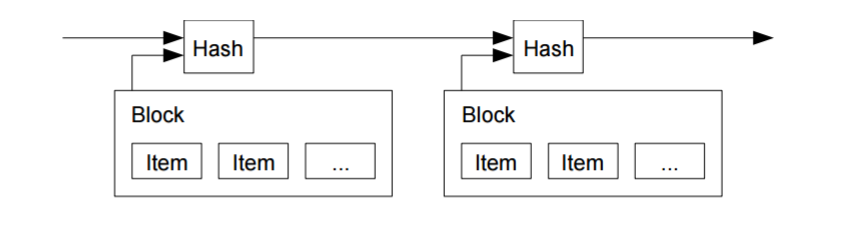
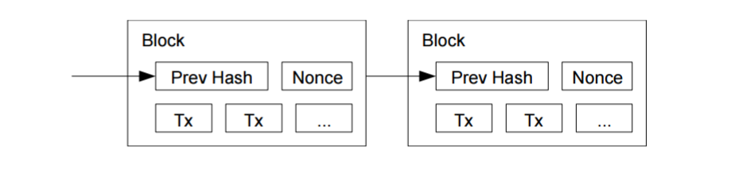
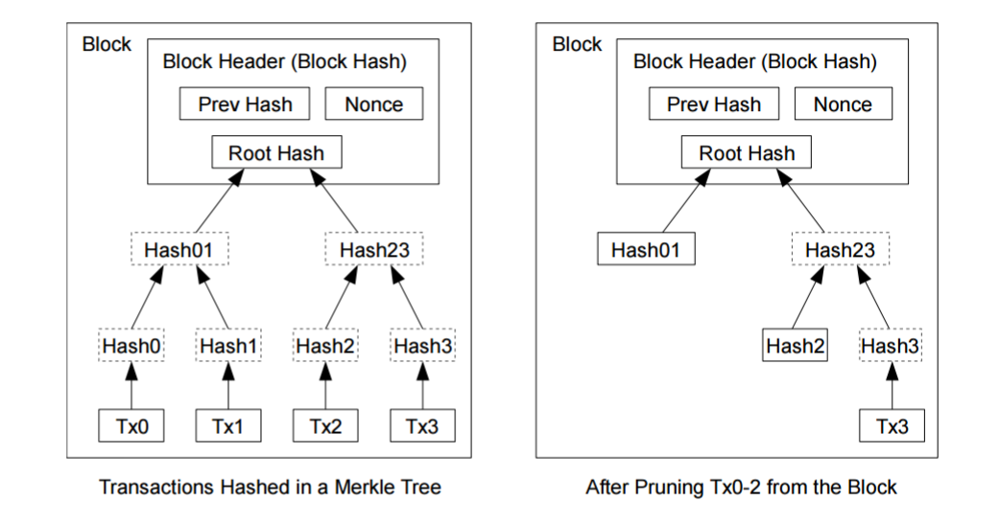
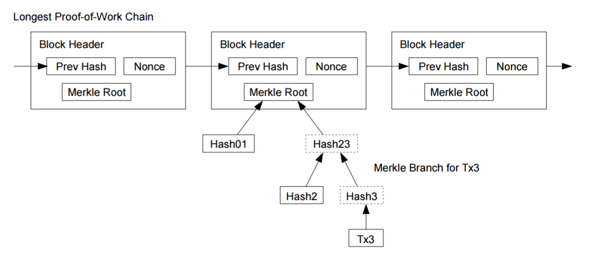
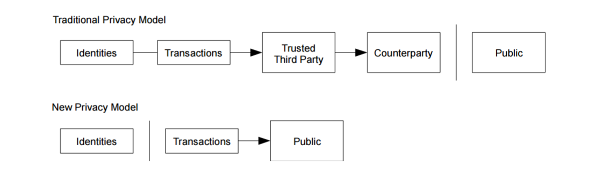
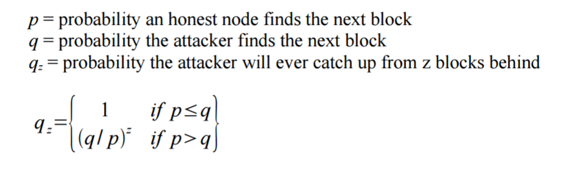
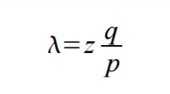
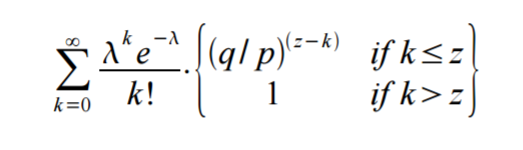
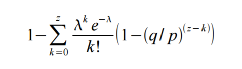

overview of DnBitcoin
description::
Bitcoin
Refers to a protocol, network or a unit of currency.
As a protocol, Bitcoin is a set of rules that every client must follow to accept transactions and have its own transactions accepted by other clients. Also includes a message protocol that allows nodes to connect to each other and exchange transactions and blocks.
As a network, Bitcoin is all the computers that follow the same rules and exchange transactions and blocks between each other.
As a unit, one Bitcoin (BTC, XBT) is defined as 100 million satoshis, the smallest units available in the current transaction format. Bitcoin is not capitalized when speaking about the amount: "I received 0.4 bitcoins."
[https://github.com/oleganza/bitcoin-papers/blob/master/BitcoinGlossary.md#bitcoin]
name::
* Mcs.filMcsDtcbnetBtc.last.html,
* Mcs.dirTchInf/filMcsDtcbnetBtc.last.html,
* Mcs.Bitcoin!⇒DnBitcoin,
* Mcs.Bitcoin-ecosystem!⇒DnBitcoin,
* Mcs.Bitcoin-Electronic-Cash-System!⇒DnBitcoin, [Nakamoto 2008]
* Mcs.Bitcoin-financial-network!⇒DnBitcoin,
* Mcs.Bitcoin-network!⇒DnBitcoin,
* Mcs.Bitcoin-net!⇒DnBitcoin, {2019-02-25},
* Mcs.Bitcoin-payment-system!⇒DnBitcoin,
* Mcs.Bitcoin-Peer-to-Peer-Electronic-Cash-System!⇒DnBitcoin, [Nakamoto]
* Mcs.Bitcoin-peer-to-peer-network!⇒DnBitcoin,
* Mcs.Bitcoin-system!⇒DnBitcoin,
* Mcs.Bitcoinland!⇒DnBitcoin,
* Mcs.D-stroke-Bitcoin-network!⇒DnBitcoin,
* Mcs.DnBitcoin, {2019-06-18},
* Mcs.netBitcoin!⇒DnBitcoin,
* Mcs.networkBitcoin!⇒DnBitcoin,
* Mcs.Đ-Bitcoin!⇒DnBitcoin,
* Mcs.Đ-btc!⇒DnBitcoin,
* Mcs.ĐBitcoin!⇒DnBitcoin,
======
* Bitcoin is the first financial network that exhibits the characteristics of neutrality,
[https://www.cryptocoinsnews.com/bitcoin-evangelist-antonopoulos-in-barcelona-thoughts-on-the-future-of-money/]
description::
Bitcoin represents the culmination of decades of research in cryptography and distributed systems and includes four key innovations brought together in a unique and powerful combination.
Bitcoin consists of:
A decentralized peer-to-peer network (the bitcoin protocol)
A public transaction ledger (the blockchain)
A decentralized mathematical and deterministic currency issuance (distributed mining)
A decentralized transaction verification system (transaction script)
[https://github.com/aantonop/bitcoinbook/blob/develop/ch01.asciidoc]
description::
Bitcoin is two things which share a name: 1) a payment system and 2) a currency. You use the Bitcoin payment system to send bitcoins as currency from one account holder to another. The transfer is instantaneous, carries no necessary fee, works anywhere in the world, and is private.
[http://keepyourassets.net/2012/09/27/bitcoin-the-first-five-questions/]
Bitcoin is also the name of the open source software which enables the use of this currency.
[http://bitcoin.org/] 2012-05-27,
description::
Connect to the world’s first borderless payment network - Bitcoin.
[https://bitpay.com/tour]
description::
Bitcoin is a decentralized P2P electronic cash system without a central server or trusted parties. Users hold the crypto keys to their own money and transact directly with each other, with the help of the network to check for double-spending.
[http://sourceforge.net/projects/bitcoin/] 2013-03-18
description::
Just like the Internet, Bitcoin is not a corporation and does not have a CEO.
[http://www.givebtc.org/GiveBTC_-_Handbook_for_Non_Profits.pdf]
description::
Bitcoin uses a simple broadcast network to propagate transactions and blocks. All communications are done over TCP. Bitcoin is fully able to use ports other than 8333 via the -port parameter. IPv6 is suported with Bitcoind/Bitcoin-Qt v0.7.
[https://en.bitcoin.it/wiki/Network]
description::
A decentralized peer-to-peer network (the bitcoin protocol)
[https://github.com/aantonop/bitcoinbook/blob/develop/ch01.asciidoc]
description::
Behind the scenes, bitcoin is also the name of the protocol, a network, and a distributed computing innovation.
[https://github.com/aantonop/bitcoinbook/blob/develop/ch01.asciidoc]
generic::
* blockchain-network,
attribute of DnBitcoin
name::
* Mcs.DnBitcoin'attribute.Indexed,
* Mcs.DnBitcoin'glossary,
* Mcs.DnBitcoin'vocabulary,
specific::
* Bitcoin Wiki: https://en.bitcoin.it/wiki/Vocabulary,
* Coindesk: http://www.coindesk.com/information/bitcoin-glossary/,
* Oleg Andreev: https://github.com/oleganza/bitcoin-papers/blob/master/BitcoinGlossary.md,
===
* btcBare_multisig
* btcChild_private_key
* btcChild_public_key
* btcCompressed_public_key
* btcConfirmation_score
* btcData_carrier_transaction
* btcData_pushing_op_code
* btcDNS_seed
* btcEscrow_contract
* btcExtended_key
* btcFree_transaction
* btcHardened_extended_key
* btcHeader
* btcHeader_chain
* btcHeaders_first_sync
* btcHigh_priority_transaction
* btcIBD
* btcInitial_block_download
* btcInternal_byte_order
* btcInventory
* btcMajority_attack
* btcMaster_chain_code
* btcMaster_private_key
* btcMerkle_block
* btcMerkle_root
* btcMessage_header
* btcMiners_fee
* btcMinimum_relay_fee
* btcMultisig
* btcNetwork_magic
* btcnLockTime
* btcNon_data_pushing_op_code
* btcNull_data_transaction
* btcOP_RETURN_transaction
* btcOrphan_block
* btcOutpoint
* btcP2P_protocol_messages
* btcP2PKH_address
* btcP2PKH_output
* btcP2SH_address
* btcP2SH_multisig
* btcP2SH_output
* btcParent_key
* btcParent_private_key
* btcParent_public_key
* btcPayment_protocol
* btcPayment_request
* btcPOWPrivate_extended_keyPrivate_key
* btcPublic_extended_key
* btcBitcoin_Core_RPCs
* btcRaw_transaction
* btcRedeem_script
* btcRedeemScript
* btcRegression_test_mode
* btcRegtest
* btcRelay_fee
* btcRPC_byte_order
* btcSatoshis
* btcScriptPubKey
* btcSig
* btcSequence_number
* btcSerialized_block
* btcSerialized_transaction
* btcSighash
* btcSIGHASH_ALL
* btcSIGHASH_ANYONECANPAY
* btcSIGHASH_NONE
* btcSIGHASH_SINGLE
* btcSignature
* btcSignature_hash
* btcStale_block
* btcStart_string
* btcTransaction_malleability
* btcTransaction_mutability
* btcTxid
* btcWallet_Import_Format
* btcWatch_only_address
* btcWIF
Bitcoin-att.Oleg-Adreev
description::
Glossary is made by Oleg Andreev (oleganza@gmail.com).
Twitter: @oleganza.
Send your thanks here: 1CBtcGivXmHQ8ZqdPgeMfcpQNJrqTrSAcG.
This glossary is released under WTFPL.
Do what you want with it, but I would appreciate if you give full credit in case you republish it.
Please report any mistakes or create pull requests on Github.
Contributors will be listed here. Thanks!
Some unusual terms are frequently used in Bitcoin documentation and discussions like *tx* or *coinbase*.
Or words like *scriptPubKey* were badly chosen and now deserve some extra explanation.
This glossary will help you understand exact meaning of all Bitcoin-related terms.
[https://github.com/oleganza/bitcoin-papers/blob/master/BitcoinGlossary.md]
name::
* Mcs.DnBitcoin'glossary.Oleg-Adreev,
* Mcs.DnBitcoin'Oleg-Adreev-glossary,
btc-ASIC:
Stands for "application-specific integrated circuit".
In other words, a chip designed to perform a narrow set of tasks (compared to CPU or GPU that perform a wide range of functions).
ASIC typically refers to specialized *mining* chips or the whole machines built on these chips.
Some ASIC manufacturers: Avalon, ASICMiner, Butterfly Labs (BFL) and Cointerra.
btc-ASICMiner:
A Chinese manufacturer that makes custom mining hardware, sells shares for bitcoins, pays dividends from on-site mining and also ships actual hardware to customers.
btc-Bitcoin_ruby:
A Bitcoin utilities library in Ruby by Julian Langschaedel.
Used in production on *Coinbase.com*.
btc-Casascious_Coins:
Physical collectible coins produced by Mike Caldwell. Each coin contains a *private key* under a tamper-evident hologram. The name "Casascius" is formed from a phrase "call a spade a spade", as a response to a name of Bitcoin itself.
btc-Coin:
An informal term that means either 1 bitcoin, or an unspent *transaction output* that can be *spent*.
btc-Coinbase.com:
US-based Bitcoin/USD exchange and web wallet service.
btc-Key:
Could mean an ECDSA public or private key, or AES symmetric encryption key.
AES is not used in the protocol itself (only to encrypt the ECDSA keys and other sensitive data), so usually the word *key* means an ECDSA key.
When talking about *keys*, people usually mean private keys as public key can always be derived from a private one.
See also Private Key and *Public Key*.
btc-Main_Chain:
A part of the blockchain which a node considers the most difficult (see difficulty).
All nodes store all valid blocks, including orphans and recompute the total difficulty when receiving another block.
If the newly arrived block or blocks do not extend existing main chain, but create another one from some previous block, it is called *reorganization*.
btc-Miner:
A person, a software or a hardware that performs mining.
btc-Secret_key:
Either the *Private Key* or an encryption key used in encrypted *wallets*.
Bitcoin protocol does not use encryption anywhere, so *secret key* typically means a *private key* used for signing transactions.
Incorrect peer-to-peer messages (like sending invalid transactions) may be considered a denial of service attack (see *DoS*).
Valid transactions sending very tiny amounts and/or having low *mining fees* are called Dust by some people.
The protocol itself does not define which transactions are not worth relaying or mining, it's a decision of every individual node.
Any valid transaction in the blockchain must be accepted by the node if it wishes to accept the remaining blocks, so transaction censorship only means increased confirmation delays.
Individual payees may also blacklist certain addresses (refuse to accept payments from some addresses), but that's too easy to work around using *mixing*.
VarInt:
This term may cause confusion as it means different formats in different Bitcoin implementations. See *CompactSize* for details.
Bitcoin-att.Coindesk
description::
CoinDesk is the world leader in news and information on digital currencies such as bitcoin, and its underlying technology – the blockchain.
We cover news and analysis on the trends, price movements, technologies, companies and people in the bitcoin and digital currency world.
[http://www.coindesk.com/about-us/]
name::
* Mcs.DnBitcoin'glossary.Coindesk,
* Mcs.DnBitcoin'Coindesk-glossary,
addressWpg::
* http://www.coindesk.com/information/bitcoin-glossary/,
btc-AML:
Anti-Money Laundering techniques are used to stop people converting illegally obtained funds, to appear as though they have been earned legally.
AML mechanisms can be legal or technical in nature.
Regulators frequently apply AML techniques to bitcoin exchanges.
btc-ASIC:
An Application Specific Integrated Circuit is a silicon chip specifically designed to do a single task.
In the case of bitcoin, they are designed to process SHA-256 hashing problems to mine new bitcoins.
btc-ASIC_miner:
A piece of equipment containing an ASIC chip, configured to mine for bitcoins.
They can come in the form of boards that plug into a backplane, devices with a USB connector, or standalone devices including all of the necessary software, that connect to a network via a wireless link or ethernet cable.
btc-Bitcoin_Investment_Trust:
This private, open-ended trust invests exclusively in bitcoins and uses a state-of-the-art protocol to store them safely on behalf of its shareholders.
It provides a way for people to invest in bitcoin without having to purchase and safely store the digital currency themselves.
btc-Bitcoin_Sentiment_Index, btcBSI:
The Bitcoin Sentiment Index is a measure of whether individuals feel the digital currency's prospects are increasing or decreasing on any given day, and is powered by data collected by Qriously.
btc-Bitcoin_Market_Potential_Index, btcBMPI:
The Bitcoin Market Potential Index (BMPI) uses a data set to rank the potential utility of bitcoin across 177 countries.
It attempts to show which markets have the greatest potential for bitcoin adoption.
btc-Bitcoin_Price_Index, btcBPI:
The CoinDesk Bitcoin Price Index represents an average of bitcoin prices across leading global exchanges that meet criteria specified by the BPI.
There is also an API for developers to use.
btc-BitPay:
A payment processor for bitcoins, which works with merchants, enabling them to take bitcoins as payment.
btc-Buttonwood:
A project founded by bitcoin enthusiast Josh Rossi, to form a public outcry bitcoin exchange in New York's Union Square.
Named after the Buttonwood agreement, which formed the basis for the New York Stock Exchange in 1792.
btc-Circle:
Circle is an exchange and wallet service, offering users worldwide the chance to store, send, receive and exchange bitcoins.
btc-Coin_age:
The age of a coin, defined as the currency amount multiplied by the holding period.
btc-DDoS:
A distributed denial of service attack uses large numbers of computers under an attacker’s control to drain the resources of a central target.
They often send small amounts of network traffic across the Internet to tie up computing and bandwidth resources at the target, which prevents it from providing services to legitimate users.
Bitcoin exchanges have sometimes been hit with DDoS attacks.
btc-Deflation:
The reduction of prices in an economy over time.
It happens when the supply of a good or service increases faster than the supply of money, or when the supply of money is finite, and decreases.
This leads to more goods or services per unit of currency, meaning that less currency is needed to purchase them.
This carries some downsides.
When people expect prices to fall, it causes them to stop spending and hoard money, in the hope that their money will go further later.
This can depress an economy.
btc-Escrow:
The act of holding funds or assets in a third-party account to protect them during an asynchronous transaction.
If Bob wants to send money to Alice in exchange for a file, but they cannot conduct the exchange in person, then how can they trust each other to send the money and file to each other at the same time?
Instead, Bob sends the money to Eve, a trusted party who holds the funds until Bob confirms that he has received the file from Alice.
She then sends Alice the money.
btc-Faucent:
A technique used when first launching an altcoin.
A set number of coins are pre-mined, and given away for free, to encourage people to take interest in the coin and begin mining it themselves.
btc-Fiat_currency:
A currency, conjured out of thin air, which only has value because people say it does.
Constantly under close scrutiny by regulators due to its known application in money laundering and terrorist activities.
Not to be confused with bitcoin.
btc-FinCEN:
The Financial Crimes Enforcement Network, an agency within the US Treasury Department.
FinCEN has thus far been the main organization to impose regulations on exchanges trading in bitcoin.
btc-FPGA:
A Field Programmable Gate Array is a processing chip that can be configured with custom functions after it has been fabricated.
Think of it as a blank silicon slate on which instructions can be written.
Because FPGAs can be produced en masse and configured after fabrication, manufacturers benefit from economies of scale, making them cheaper than ASIC chips.
However, they are usually far slower.
btc-GPU:
Graphical Processing Unit.
A silicon chip specifically designed for the complex mathematical calculations needed to render millions of polygons in modern computer game graphics.
They are also well suited to the cryptographic calculations needed in cryptocurrency mining.
btc-Inflation:
When the value of money drops over time, causing prices for goods to increase.
The result is a drop in purchasing power.
Effects include less motivation to hoard money, and more motivation to spend it quickly while the prices of goods are still low.
btc-KYC:
Know Your Client/Customer rules force financial institutions to vet the people they are doing business with, ensuring that they are legitimate.
btc-Leverage, btcMargin_requirement:
In foreign currency trading, leverage multiplies the real funds in your account by a given factor, enabling you to make trades that result in significant profit.
By giving leverage to a trader, the trading exchange is effectively lending them money, in the hope that it will earn back more than it loaned in commission.
Leverage is also known as a margin requirement.
btc-Liberty_Reserve:
A centralized digital currency payment processor based in Costa Rica.
It was shut down by the US government, after it was found guilty of money laundering.
btc-Liquidity:
The ability to buy and sell an asset easily, with pricing that stays roughly similar between trades.
A suitably large community of buyers and sellers is important for liquidity.
The result of an illiquid market is price volatility, and the inability to easily determine the value of an asset.
btc-Margin_call:
The act of calling in a margin requirement.
An exchange will issue a margin call when it feels that a trader does not have sufficient funds to cover a leveraged trading position.
btc-Market_order:
An instruction given to an exchange, asking it to buy or sell an asset at the going market rate.
In a bitcoin exchange, you would place a market order if you simply wanted to buy or sell bitcoins immediately, rather than holding them until a set market condition is triggered to try and make a profit.
btc-P2P:
Peer-to-peer.
Decentralized interactions that happen between at least two parties in a highly interconnected network.
An alternative system to a 'hub-and-spoke' arrangement, in which all participants in a transaction deal with each other through a single mediation point.
btc-Primecoin
Developed by Sunny King, Primecoin uses a proof of work system to calculate prime numbers.
btc-PSP:
Payment Service Provider.
The PSP offers payment processing services for merchants who wish to accept payments online.
btc-Pump_and_dump:
Inflating the value of a financial asset that has been produced or acquired cheaply, using aggressive publicity and often misleading statements.
The publicity causes others to acquire the asset, forcing up its value.
When the value is high enough, the perpetrator sells their assets, cashing in and flooding the market, which causes the value to crash.
btc-Silk_Road:
An underground online marketplace, generally used for illicit purchases, often with cryptocurrencies such as bitcoin.
Silk Road was shut down in early October 2013 by the FBI after owner Ross Ulbricht was arrested.
Ulbricht was later convicted on money laundering and drug distribution charges.
btc-SEPA:
The Single European Payments Area.
A payment integration agreement within the European Union, designed to make it easier to transfer funds between different banks and nations in euros.
btc-TOR:
An anonymous routing protocol, used by people wanting to hide their identity online.
btc-Volatility:
The measurement of price movements over time for a traded financial asset (including bitcoin).
btc-Wire_transfer:
Electronically transferring money from one person to another.
Commonly used to send and retrieve fiat currency from bitcoin exchanges.
btc-Zerocoin:
A protocol designed to make cryptocurrency transactions truly anonymous.
protocol of DnBitcoin
name::
* Mcs.Bitcoin-protocol!⇒Bitcoin-prcl,
* Mcs.DnBitcoin'message-protocol!⇒Bitcoin-prcl,
* Mcs.DnBitcoin'protocol!⇒Bitcoin-prcl,
* Mcs.Bitcoin-prcl, {2019-03-17},
name.Greek::
* McsEll.Μπιτκόιν-πρωτόκολλο,
* McsEll.Πρωτόκολλο-μπιτκόιν,
generic::
* blockchain-protocol,
Bitcoin-prcl'white-paper {2008}
description::
The bitcoin whitepaper was written by ‘Satoshi Nakamoto’ and posted to a Cryptography Mailing list in 2008.
The paper describes the bitcoin protocol in detail, and is well worth a read.
Satoshi Nakamoto followed this by releasing the bitcoin code in 2009.
...
In November 2008, a paper, authored (probably pseudonymously) by Satoshi Nakamoto, was posted on the newly created Bitcoin.org website with the title ‘Bitcoin: A Peer-to-Peer Electronic Cash System’.
The eight-page document described methods of using a peer-to-peer network to generate "a system for electronic transactions without relying on trust" and laid down the working principles of the cryptocurrency.
[http://www.coindesk.com/information/bitcoin-glossary/]
name::
* Mcs.white-paper--of--Bitcoin-network,
* Mcs.DnBitcoin'white-paper,
* Mcs.Bitcoin-wpr-(Bitcoin-white-paper),
name.Greek::
* McsEll.Λευκή-βίβλος-του-μπτικόιν,
addressWpg::
* https://bitcoin.org/bitcoin.pdf,
* http://www.cryptovest.co.uk/resources/Bitcoin%20paper%20Original.pdf,
Bitcoin: A Peer-to-Peer Electronic Cash System
Satoshi Nakamoto
www.bitcoin.org
{time.2008-10-31},
Abstract
A purely peer-to-peer version of electronic cash would allow online payments to be sent directly from one party to another without going through a financial institution.
Digital signatures provide part of the solution, but the main benefits are lost if a trusted third party is still required to prevent double-spending.
We propose a solution to the double-spending problem using a peer-to-peer network.
The network timestamps transactions by hashing them into an ongoing chain of hashbased proof-of-work, forming a record that cannot be changed without redoing the proof-of-work.
The longest chain not only serves as proof of the sequence of events witnessed, but proof that it came from the largest pool of CPU power.
As long as a majority of CPU power is controlled by nodes that are not cooperating to attack the network, they'll generate the longest chain and outpace attackers.
The network itself requires minimal structure.
Messages are broadcast on a best effort basis, and nodes can leave and rejoin the network at will, accepting the longest proof-of-work chain as proof of what happened while they were gone.
1. Introduction
Commerce on the Internet has come to rely almost exclusively on financial institutions serving as trusted third parties to process electronic payments.
While the system works well enough for most transactions, it still suffers from the inherent weaknesses of the trust based model.
Completely non-reversible transactions are not really possible, since financial institutions cannot avoid mediating disputes.
The cost of mediation increases transaction costs, limiting the minimum practical transaction size and cutting off the possibility for small casual transactions, and there is a broader cost in the loss of ability to make non-reversible payments for nonreversible services.
With the possibility of reversal, the need for trust spreads.
Merchants must be wary of their customers, hassling them for more information than they would otherwise need.
A certain percentage of fraud is accepted as unavoidable.
These costs and payment uncertainties can be avoided in person by using physical currency, but no mechanism exists to make payments over a communications channel without a trusted party.
What is needed is an electronic payment system based on cryptographic proof instead of trust, allowing any two willing parties to transact directly with each other without the need for a trusted third party.
Transactions that are computationally impractical to reverse would protect sellers from fraud, and routine escrow mechanisms could easily be implemented to protect buyers.
In this paper, we propose a solution to the double-spending problem using a peer-to-peer distributed timestamp server to generate computational proof of the chronological order of transactions.
The system is secure as long as honest nodes collectively control more CPU power than any cooperating group of attacker nodes.
2. Transactions
We define an electronic coin as a chain of digital signatures.
Each owner transfers the coin to the next by digitally signing a hash of the previous transaction and the public key of the next owner and adding these to the end of the coin.
A payee can verify the signatures to verify the chain of ownership.

The problem of course is the payee can't verify that one of the owners did not double-spend the coin.
A common solution is to introduce a trusted central authority, or mint, that checks every transaction for double spending.
After each transaction, the coin must be returned to the mint to issue a new coin, and only coins issued directly from the mint are trusted not to be double-spent.
The problem with this solution is that the fate of the entire money system depends on the company running the mint, with every transaction having to go through them, just like a bank.
We need a way for the payee to know that the previous owners did not sign any earlier transactions.
For our purposes, the earliest transaction is the one that counts, so we don't care about later attempts to double-spend.
The only way to confirm the absence of a transaction is to be aware of all transactions.
In the mint based model, the mint was aware of all transactions and decided which arrived first.
To accomplish this without a trusted party, transactions must be publicly announced[01], and we need a system for participants to agree on a single history of the order in which they were received.
The payee needs proof that at the time of each transaction, the majority of nodes agreed it was the first received.
3. Timestamp Server
The solution we propose begins with a timestamp server.
A timestamp server works by taking a hash of a block of items to be timestamped and widely publishing the hash, such as in a newspaper or Usenet post[2-5].
The timestamp proves that the data must have existed at the time, obviously, in order to get into the hash.
Each timestamp includes the previous timestamp in its hash, forming a chain, with each additional timestamp reinforcing the ones before it.

4. Proof-of-Work
To implement a distributed timestamp server on a peer-to-peer basis, we will need to use a proof-of-work system similar to Adam Back's Hashcash[06], rather than newspaper or Usenet posts.
The proof-of-work involves scanning for a value that when hashed, such as with SHA-256, the hash begins with a number of zero bits.
The average work required is exponential in the number of zero bits required and can be verified by executing a single hash.
For our timestamp network, we implement the proof-of-work by incrementing a nonce in the block until a value is found that gives the block's hash the required zero bits.
Once the CPU effort has been expended to make it satisfy the proof-of-work, the block cannot be changed without redoing the work.
As later blocks are chained after it, the work to change the block would include redoing all the blocks after it.

The proof-of-work also solves the problem of determining representation in majority decision making.
If the majority were based on one-IP-address-one-vote, it could be subverted by anyone able to allocate many IPs.
Proof-of-work is essentially one-CPU-one-vote.
The majority decision is represented by the longest chain, which has the greatest proof-of-work effort invested in it.
If a majority of CPU power is controlled by honest nodes, the honest chain will grow the fastest and outpace any competing chains.
To modify a past block, an attacker would have to redo the proof-of-work of the block and all blocks after it and then catch up with and surpass the work of the honest nodes.
We will show later that the probability of a slower attacker catching up diminishes exponentially as subsequent blocks are added.
To compensate for increasing hardware speed and varying interest in running nodes over time, the proof-of-work difficulty is determined by a moving average targeting an average number of blocks per hour.
If they're generated too fast, the difficulty increases.
5. Network
The steps to run the network are as follows:
1. New transactions are broadcast to all nodes.
2. Each node collects new transactions into a block.
3. Each node works on finding a difficult proof-of-work for its block.
4. When a node finds a proof-of-work, it broadcasts the block to all nodes.
5. Nodes accept the block only if all transactions in it are valid and not already spent.
6. Nodes express their acceptance of the block by working on creating the next block in the chain, using the hash of the accepted block as the previous hash.
Nodes always consider the longest chain to be the correct one and will keep working on extending it.
If two nodes broadcast different versions of the next block simultaneously, some nodes may receive one or the other first.
In that case, they work on the first one they received, but save the other branch in case it becomes longer.
The tie will be broken when the next proof-of-work is found and one branch becomes longer; the nodes that were working on the other branch will then switch to the longer one.
New transaction broadcasts do not necessarily need to reach all nodes.
As long as they reach many nodes, they will get into a block before long.
Block broadcasts are also tolerant of dropped messages.
If a node does not receive a block, it will request it when it receives the next block and realizes it missed one.
6. Incentive
By convention, the first transaction in a block is a special transaction that starts a new coin owned by the creator of the block.
This adds an incentive for nodes to support the network, and provides a way to initially distribute coins into circulation, since there is no central authority to issue them.
The steady addition of a constant of amount of new coins is analogous to gold miners expending resources to add gold to circulation.
In our case, it is CPU time and electricity that is expended.
The incentive can also be funded with transaction fees.
If the output value of a transaction is less than its input value, the difference is a transaction fee that is added to the incentive value of the block containing the transaction. Once a predetermined number of coins have entered circulation, the incentive can transition entirely to transaction fees and be completely inflation free.
The incentive may help encourage nodes to stay honest.
If a greedy attacker is able to assemble more CPU power than all the honest nodes, he would have to choose between using it to defraud people by stealing back his payments, or using it to generate new coins.
He ought to find it more profitable to play by the rules, such rules that favour him with more new coins than everyone else combined, than to undermine the system and the validity of his own wealth.
7. Reclaiming Disk Space
Once the latest transaction in a coin is buried under enough blocks, the spent transactions before it can be discarded to save disk space.
To facilitate this without breaking the block's hash, transactions are hashed in a Merkle Tree [7][2][5], with only the root included in the block's hash.
Old blocks can then be compacted by stubbing off branches of the tree.
The interior hashes do not need to be stored.

A block header with no transactions would be about 80 bytes.
If we suppose blocks are generated every 10 minutes, 80 bytes * 6 * 24 * 365 = 4.2MB per year.
With computer systems typically selling with 2GB of RAM as of 2008, and Moore's Law predicting current growth of 1.2GB per year, storage should not be a problem even if the block headers must be kept in memory.
8. Simplified Payment Verification
It is possible to verify payments without running a full network node.
A user only needs to keep a copy of the block headers of the longest proof-of-work chain, which he can get by querying network nodes until he's convinced he has the longest chain, and obtain the Merkle branch linking the transaction to the block it's timestamped in.
He can't check the transaction for himself, but by linking it to a place in the chain, he can see that a network node has accepted it, and blocks added after it further confirm the network has accepted it.

As such, the verification is reliable as long as honest nodes control the network, but is more vulnerable if the network is overpowered by an attacker.
While network nodes can verify transactions for themselves, the simplified method can be fooled by an attacker's fabricated transactions for as long as the attacker can continue to overpower the network.
One strategy to protect against this would be to accept alerts from network nodes when they detect an invalid block, prompting the user's software to download the full block and alerted transactions to confirm the inconsistency.
Businesses that receive frequent payments will probably still want to run their own nodes for more independent security and quicker verification.
9. Combining and Splitting Value
Although it would be possible to handle coins individually, it would be unwieldy to make a separate transaction for every cent in a transfer.
To allow value to be split and combined, transactions contain multiple inputs and outputs.
Normally there will be either a single input from a larger previous transaction or multiple inputs combining smaller amounts, and at most two outputs: one for the payment, and one returning the change, if any, back to the sender.

It should be noted that fan-out, where a transaction depends on several transactions, and those transactions depend on many more, is not a problem here.
There is never the need to extract a complete standalone copy of a transaction's history.
10. Privacy
The traditional banking model achieves a level of privacy by limiting access to information to the parties involved and the trusted third party.
The necessity to announce all transactions publicly precludes this method, but privacy can still be maintained by breaking the flow of information in another place: by keeping public keys anonymous.
The public can see that someone is sending an amount to someone else, but without information linking the transaction to anyone.
This is similar to the level of information released by stock exchanges, where the time and size of individual trades, the "tape", is made public, but without telling who the parties were.

As an additional firewall, a new key pair should be used for each transaction to keep them from being linked to a common owner.
Some linking is still unavoidable with multi-input transactions, which necessarily reveal that their inputs were owned by the same owner.
The risk is that if the owner of a key is revealed, linking could reveal other transactions that belonged to the same owner.
11. Calculations
We consider the scenario of an attacker trying to generate an alternate chain faster than the honest chain.
Even if this is accomplished, it does not throw the system open to arbitrary changes, such as creating value out of thin air or taking money that never belonged to the attacker.
Nodes are not going to accept an invalid transaction as payment, and honest nodes will never accept a block containing them.
An attacker can only try to change one of his own transactions to take back money he recently spent.
The race between the honest chain and an attacker chain can be characterized as a Binomial Random Walk.
The success event is the honest chain being extended by one block, increasing its lead by +1, and the failure event is the attacker's chain being extended by one block, reducing the gap by -1.
The probability of an attacker catching up from a given deficit is analogous to a Gambler's Ruin problem.
Suppose a gambler with unlimited credit starts at a deficit and plays potentially an infinite number of trials to try to reach breakeven.
We can calculate the probability he ever reaches breakeven, or that an attacker ever catches up with the honest chain, as follows[8]:

Given our assumption that p>q, the probability drops exponentially as the number of blocks the attacker has to catch up with increases.
With the odds against him, if he doesn't make a lucky lunge forward early on, his chances become vanishingly small as he falls further behind.
We now consider how long the recipient of a new transaction needs to wait before being sufficiently certain the sender can't change the transaction.
We assume the sender is an attacker who wants to make the recipient believe he paid him for a while, then switch it to pay back to himself after some time has passed.
The receiver will be alerted when that happens, but the sender hopes it will be too late.
The receiver generates a new key pair and gives the public key to the sender shortly before signing.
This prevents the sender from preparing a chain of blocks ahead of time by working on it continuously until he is lucky enough to get far enough ahead, then executing the transaction at that moment.
Once the transaction is sent, the dishonest sender starts working in secret on a parallel chain containing an alternate version of his transaction.
The recipient waits until the transaction has been added to a block and z blocks have been linked after it.
He doesn't know the exact amount of progress the attacker has made, but assuming the honest blocks took the average expected time per block, the attacker's potential progress will be a Poisson distribution with expected value:

To get the probability the attacker could still catch up now, we multiply the Poisson density for each amount of progress he could have made by the probability he could catch up from that point:

Rearranging to avoid summing the infinite tail of the distribution...

#include <math.h>
double AttackerSuccessProbability(double q, int z)
{
double p = 1.0 - q;
double lambda = z * (q / p);
double sum = 1.0;
int i, k;
for (k = 0; k <= z; k++)
{
double poisson = exp(-lambda);
for (i = 1; i <= k; i++)
poisson *= lambda / i;
sum -= poisson * (1 - pow(q / p, z - k));
}
return sum;
}
Running some results, we can see the probability drop off exponentially with z.
q=0.1
z=0 P=1.0000000
z=1 P=0.2045873
z=2 P=0.0509779
z=3 P=0.0131722
z=4 P=0.0034552
z=5 P=0.0009137z=6 P=0.0002428
z=7 P=0.0000647
z=8 P=0.0000173
z=9 P=0.0000046
z=10 P=0.0000012
q=0.3
z=0 P=1.0000000
z=5 P=0.1773523
z=10 P=0.0416605
z=15 P=0.0101008
z=20 P=0.0024804
z=25 P=0.0006132
z=30 P=0.0001522
z=35 P=0.0000379
z=40 P=0.0000095
z=45 P=0.0000024
z=50 P=0.0000006
Solving for P less than 0.1%...
P < 0.001
q=0.10 z=5
q=0.15 z=8
q=0.20 z=11
q=0.25 z=15
q=0.30 z=24
q=0.35 z=41
q=0.40 z=89
q=0.45 z=340
12. Conclusion
We have proposed a system for electronic transactions without relying on trust.
We started with the usual framework of coins made from digital signatures, which provides strong control of ownership, but is incomplete without a way to prevent double-spending.
To solve this, we proposed a peer-to-peer network using proof-of-work to record a public history of transactions that quickly becomes computationally impractical for an attacker to change if honest nodes control a majority of CPU power.
The network is robust in its unstructured simplicity.
Nodes work all at once with little coordination.
They do not need to be identified, since messages are not routed to any particular place and only need to be delivered on a best effort basis.
Nodes can leave and rejoin the network at will, accepting the proof-of-work chain as proof of what happened while they were gone.
They vote with their CPU power, expressing their acceptance of valid blocks by working on extending them and rejecting invalid blocks by refusing to work on them.
Any needed rules and incentives can be enforced with this consensus mechanism.
References
[1]. W. Dai, "b-money," http://www.weidai.com/bmoney.txt, 1998.
[2]. H. Massias, X.S. Avila, and J.-J. Quisquater, "Design of a secure timestamping service with minimal trust requirements," In 20th Symposium on Information Theory in the Benelux, May 1999.
[3]. S. Haber, W.S. Stornetta, "How to time-stamp a digital document," In Journal of Cryptology, vol 3, no 2, pages 99-111, 1991.
[4]. D. Bayer, S. Haber, W.S. Stornetta, "Improving the efficiency and reliability of digital timestamping," In Sequences II: Methods in Communication, Security and Computer Science, pages 329-334, 1993.
[5]. S. Haber, W.S. Stornetta, "Secure names for bit-strings," In Proceedings of the 4th ACM Conference on Computer and Communications Security, pages 28-35, April 1997.
[6]. A. Back, "Hashcash - a denial of service countermeasure," http://www.hashcash.org/papers/hashcash.pdf, 2002.
[7]. R.C. Merkle, "Protocols for public key cryptosystems," In Proc. 1980 Symposium on Security and Privacy, IEEE Computer Society, pages 122-133, April 1980.
[8]. W. Feller, "An introduction to probability theory and its applications," 1957.
Bitcoin-prcl'implementation
name::
* Mcs.Bitcoin-prcl'implementation,
Bitcoin-prcl'reference-implementation (link)
Bitcoin-prcl'BIP (Bitcoin-Improvement-Proposals | btcbip)
description::
People wishing to submit BIPs, first should propose their idea or document to the mailing list. After discussion they should email Greg Maxwell <gmaxwell@gmail.com>. After copy-editing and acceptance, it will be published here.
We are fairly liberal with approving BIPs, and try not to be too involved in decision making on behalf of the community. The exception is in very rare cases of dispute resolution when a decision is contentious and cannot be agreed upon. In those cases, the conservative option will always be preferred.
Having a BIP here does not make it a formally accepted standard until its status becomes Active. For a BIP to become Active requires the mutual consent of the community.
Those proposing changes should consider that ultimately consent may rest with the consensus of the Bitcoin users (see also: economic majority).
[https://github.com/bitcoin/bips#readme]
===
Bitcoin Improvement Proposals.
RFC-like documents modeled after PEPs (Python Enhancement Proposals) discussing different aspects of the protocol and software.
Most interesting BIPs describe *hard fork* changes in the core protocol that require supermajority of Bitcoin users (or, in some cases, only miners) to agree on the change and accept it in an organized manner.
[https://github.com/oleganza/bitcoin-papers/blob/master/BitcoinGlossary.md]
name::
* Mcs.BIP-(Bitcoin-Improvement-Proposals),
* Mcs.Bitcoin-Improvement-Proposals-(BIP),
* Mcs.DnBitcoin'BIP-(Bitcoin-Improvement-Proposals),
* Mcs.DnBitcoin'Bitcoin-Improvement-Proposals-(BIP),
* Mcs.Bitcoin-prcl'BIP-(Bitcoin-Improvement-Proposals),
name.Greek::
* McsEll.Προτάσεις-Βελτίωσης-Bitcoin,
addressWpg::
* https://github.com/bitcoin/bips#readme,
Bitcoin-bip'Attribute
specific::
* Number
* Layer
* Title
* Owner
* Type
* Status
Bitcoin-prcl'lightning-network
description::
A quick overview of what the Lightning network is
- A payment layer that makes use of the script language in Bitcoin
- A way to send and spend Bitcoin across nodes instantly and irreversibly
- A layer that builds on the security of the underlying protocol, Bitcoin
[https://medium.com/@btc_coach/lightning-network-in-action-b18a035c955d]
===
The lightning network is a highly anticipated second-layer protocol to be rolled out on top of Bitcoin’s blockchain. Cleverly utilizing Bitcoin’s programmable elements (like multisignature and time-locks), lightning users should be able to make a virtually unlimited number of off-chain transactions with instant confirmations and at low cost. This should boost Bitcoin’s micropayment-ability, overall scalability and even privacy.
[https://bitcoinmagazine.com/articles/lightning-network-one-step-closer-to-reality-as-lightning-labs-announces-alpha-release-1484333955]
===
Announcing the Thunder Network Alpha Release
Peter · May 16, 2016 · Leave a Reply
At Blockchain, we’re on a mission to create an open, accessible, and equitable financial future. Since our inception, we have focused on building products that make it easy for everyday people to use bitcoin to store and transfer value all over the world. We make Bitcoin usable and useful. We’ve been able to do that because we develop with a user-focused mandate.
A faster, cheaper, and more functional network would deliver real value to our users, so we were excited by the growth of research into payment channel technology on the bitcoin network and innovative uses of this technology. We were particularly interested in the idea of using smart contracts to build what are basically super-charged payments networks, as outlined in a white paper by the lightning.network team. Last year, we hired a talented engineer, Mats Jerratsch, who had been pioneering innovation in this vertical to work with our engineering team and lead research and development on a network based around these ideas.
Lightning networks have been purely conceptual, research based, and only in test nets and labs – until now. Today, we release the alpha version of our Thunder Network, the first usable implementation of the Lightning network for off chain bitcoin payments that settles back to the main bitcoin blockchain.
We used it internally a few days ago. Click here to learn all about Transaction 0 between Mats and me.
Thunder has the potential to facilitate secure, trustless, and instant payments. It has the ability to unleash the power of microtransactions, to allow the bitcoin network to handle heavy loads, and to increase user privacy. In this Alpha version, we prove that it can be done. From a feature perspective, there is both a node and a wallet (with GUI) present. Even more importantly:
Settlement to the bitcoin blockchain
Scale: According to our tests so far, we can achieve better-than-Visa scale (100,000 TPS) with only a few thousand nodes on the network
Extremely cheap payments: fees will develop naturally, due to the free market in an open and permissionless network and will fundamentally be lower than on-chain payments
Encryption and Authentication: All communications between all nodes and wallets are encrypted using AES-CTR and take place only after completing authentication.
Seed Peers and automatically provide them with network topology using a basic gossip protocol similar to the one used in the bitcoin network, which allows complex routes over multiple hops
Payment Channels can be opened and closed at will, with transactions settling onto the bitcoin blockchain
Payment Debate: Across the route each hop will renegotiate a new status with the next hop, as a payment makes its way through the network with cryptography in place to prevent fraud
Relaying Payments: TN will relay payments over multiple nodes in the network automatically, using encrypted routing. No one knows who made a payment, allowing for more privacy
Settle payments automatically, no manual intervention needed. The settlement will ripple back through the network to provide proof-of-payment
Instant Payments that are irrevocable the moment you see them
Until both CSV and SegWit are implemented on the bitcoin blockchain, transactions are not enforceable at the bitcoin protocol level. So, the current Thunder prototype is best suited for transactions among a trusted network of users. Try this amongst your dev team or amongst your trusted internet friends, but don’t use it for real payments. Remember: this is alpha testing software.
So why release this now? We believe it is critical to get something in the hands of users as soon as possible to gain feedback that will enable us to be ready when the network is. So review it, test it out, open an issue on GitHub, or send us an email. If you want to work on tech like this full time, head here and apply to join our team.
We encourage you to find out more at:
www.blockchain.com/thunder
https://github.com/blockchain/thunder
[https://blog.blockchain.com/2016/05/16/announcing-the-thunder-network-alpha-release/]
name::
* Mcs.DnBitcoin'thunder-network,
* Mcs.DnBitcoin'lightning-network,
* Mcs.Bitcoin-prcl'lightning-network,
* Mcs.lightning-network-of-bitcoin,
addressWpg::
* https://lightning.network/,
===
* {2019-03-10} Michael-K.-Spencer, https://medium.com/blockchain-positive/what-is-the-lightning-network-e5ff861a7604,
* {2018-10-08} Saubyk, Introducing RTL — A Web UI for Lightning Network Daemon, https://medium.com/coinmonks/introducing-rtl-a-web-ui-for-lnd-d0bb0d937e91,
* {2018-04-04} Aaron-van-Wirdum, The History of Lightning: From Brainstorm to Beta: https://bitcoinmagazine.com/,
* {2018-03-15} Lightning’s First Implementation Is Now in Beta; Developers Raise $2.5M: https://bitcoinmagazine.com/,
* {2018-01-20} THE LIGHTNING NETWORK COULD MAKE BITCOIN FASTER—AND CHEAPER: SANDRA UPSON https://www.wired.com/,
* {2017-12-12} https://www.youtube.com/watch?v=rrr_zPmEiME,
* {2017-03-26} https://medium.com/@btc_coach/lightning-network-in-action-b18a035c955d#.t0xv3e8mk,
* {2016-01-14 Version-0.5.9.2} White-paper: https://lightning.network/lightning-network-paper.pdf,
* https://medium.com/@AudunGulbrands1/lightning-faq-67bd2b957d70#.gtx36kylc,
node of DnBitcoin
description::
Node:
A computer connected to the bitcoin network using a client that relays transactions to others (see client).
If you'd like to run a bitcoin node, then bitcoin.org offers a comprehensive guide.
[http://www.coindesk.com/information/bitcoin-glossary/]
===
Node, or client, is a computer on the network that speaks Bitcoin message protocol (exchanging transactions and blocks).
There are *full nodes* that are capable of validating the entire blockchain and *lightweight nodes*, with reduced functionality.
Wallet applications that speak to a server are not considered nodes.
[https://github.com/oleganza/bitcoin-papers/blob/master/BitcoinGlossary.md]
===
A computer connected to the bitcoin network using a client that relays transactions to others (see client). If you'd like to run a bitcoin node, then bitcoin.org offers a comprehensive guide.
[http://www.coindesk.com/information/bitcoin-glossary/#node]
===
A system running a Bitcoin client is called a Bitcoin node.
The Bitcoin network's function is to relay two types of messages: Transactions and blocks.
A transaction is a digitally signed instruction to transfer money between addresses, as described earlier.
A block is: A set of transactions.Apr 7, 2013
Bitcoin part 10: The network « self-evident
[https://self-evident.org/?p=999]
name::
* Mcs.DnBitcoin'node,
* Mcs.Bitcoin-node,
name.Greek::
* McsEll.Κόμβος-μπιτκόιν,
Bitcoin-node'Consensus
description::
When several nodes (usually most nodes on the network) all have the same blocks in their locally-validated best block chain.
[https://bitcoin.org/en/glossary/consensus]
name::
* Mcs.DnBitcoin'consensus,
name.Greek::
* McsEll.Μπιτκόιν-συναίνεση,
Bitcoin-node.FULL
description::
A node which implements all of Bitcoin protocol and does not require trusting any external service to validate transactions.
It is able to download and validate the entire *blockchain*.
All full nodes implement the same peer-to-peer messaging protocol to exchange transactions and blocks, but that is not a requirement.
A full node may receive and validate data using any protocol and from any source.
However, the highest security is achieved by being able to communicate as fast as possible with as many nodes as possible.
[https://github.com/oleganza/bitcoin-papers/blob/master/BitcoinGlossary.md]
===
A full node is defined as a network-attached bitcoin client application, such as the original bitcoin Core (QT) client or an implementation of the bitcoind framework. A full node has the entire, up-to-date set of blockchain files, and also has port 8333 open, so it is set to listen for incoming requests. This list is very specific, and all of these conditions must be met for it to be a useful full node.
[http://bravenewcoin.com/news/the-decline-in-bitcoins-full-nodes/]
===
A full node is a program that fully validates transactions and blocks. Almost all full nodes also help the network by accepting transactions and blocks from other full nodes, validating those transactions and blocks, and then relaying them to further full nodes.
Most full nodes also serve lightweight clients by allowing them to transmit their transactions to the network and by notifying them when a transaction affects their wallet. If not enough nodes perform this function, clients won’t be able to connect through the peer-to-peer network—they’ll have to use centralized services instead.
Many people and organizations volunteer to run full nodes using spare computing and bandwidth resources—but more volunteers are needed to allow Bitcoin to continue to grow. This document describes how you can help and what helping will cost you.
[https://bitcoin.org/en/full-node#what-is-a-full-node]
===
Each full node in the Bitcoin network independently stores a block chain containing only blocks validated by that node.
[https://bitcoin.org/en/developer-guide#block-chain]
===
The Bitcoin network protocol allows full nodes (peers) to collaboratively maintain a peer-to-peer network for block and transaction exchange.
[https://bitcoin.org/en/developer-guide#term-peer]
name::
* Mcs.DnBitcoin'full-node,
* Mcs.DnBitcoin'peer,
addressWpg::
* https://bitcoin.org/en/full-node,
Bitcoin-nodFul'Bitcoin-Core (link)
Bitcoin-nodFul'requirements
description::
Minimum Requirements
Bitcoin Core full nodes have certain requirements. If you try running a node on weak hardware, it may work—but you’ll likely spend more time dealing with issues. If you can meet the following requirements, you’ll have an easy-to-use node.
Desktop or laptop hardware running recent versions of Windows, Mac OS X, or Linux.
50 gigabytes of free disk space
2 gigabytes of memory (RAM)
A broadband Internet connection with upload speeds of at least 400 kilobits (50 kilobytes) per second
An unmetered connection, a connection with high upload limits, or a connection you regularly monitor to ensure it doesn’t exceed its upload limits. It’s common for full nodes on high-speed connections to use 200 gigabytes upload or more a month. Download usage is around 20 gigabytes a month, plus around an additional 40 gigabytes the first time you start your node.
6 hours a day that your full node can be left running. (You can do other things with your computer while running a full node.) More hours would be better, and best of all would be if you can run your node continuously.
Note: many operating systems today (Windows, Mac, and Linux) enter a low-power mode after the screensaver activates, slowing or halting network traffic. This is often the default setting on laptops and on all Mac OS X laptops and desktops. Check your screensaver settings and disable automatic “sleep” or “suspend” options to ensure you support the network whenever your computer is running.
[https://bitcoin.org/en/full-node#minimum-requirements]
Bitcoin-node.FULL.NO (lightweight)
description::
Lightweight client
Comparing to a full node, lightweight node does not store the whole blockchain and thus cannot fully verify any transaction.
There are two kinds of lightweight nodes: those fully trusting an external service to determine wallet balance and validity of transactions (e.g. blockchain.info) and the apps implementing Simplified Payment Verification (SPV).
SPV clients do not need to trust any particular service, but are more vulnerable to a 51% attack than full nodes. See Simplified Payment Verification for more info.
[https://github.com/oleganza/bitcoin-papers/blob/master/BitcoinGlossary.md#lightweight-client]
===
A protocol known as “simplified payment verification” (SPV) allows for another class of nodes to exist, called “light nodes”, which download the block headers, verify the proof of work on the block headers, and then download only the “branches” associated with transactions that are relevant to them.
This allows light nodes to determine with a strong guarantee of security what the status of any Bitcoin transaction, and their current balance, is while downloading only a very small portion of the entire blockchain.
[https://leanpub.com/decentralizedapplicationswithethereum/read_sample]
name::
* Mcs.DnBitcoin'light-node,
* Mcs.Bitcoin-node.light,
* Mcs.DnBitcoin'lightweight-client-node,
* Mcs.DnBitcoin'lightweight-node,
Bitcoin-node.HONEST
name::
* Mcs.DnBitcoin'honest-peer,
Bitcoin-node.HONEST.NO
description::
Take note that for both types of broadcasting, mechanisms are in place to punish misbehaving peers who take up bandwidth and computing resources by sending false information. If a peer gets a banscore above the -banscore=<n> threshold, he will be banned for the number of seconds defined by -bantime=<n>, which is 86,400 by default (24 hours).
[https://bitcoin.org/en/developer-guide#misbehaving-nodes]
name::
* Mcs.DnBitcoin'honestNo-peer,
* Mcs.DnBitcoin'malicious-node,
* Mcs.DnBitcoin'misbehaving-node,
* Mcs.DnBitcoin'untrustworthy-peer,
Bitcoin-node.MINER
description::
The bitcoin network is driven by what are called miners, specialized computers that run the bitcoin software. In exchange, the people who run these miners are automatically paid in bitcoin. That’s their immediate incentive. But they also have an interest in expanding the network and keeping it running smoothly. Otherwise, those payments will dry up.
...
As Hearn pointed out, two Chinese operations control about 50 percent of the network’s mining power, and they’re reluctant to adopt the larger block size. “[They] refuse to switch to any competing product, as they perceive doing so as ‘disloyalty’—and they’re terrified of doing anything that might make the news of a ‘split’ and cause investor panic,” he wrote. “They have chosen instead to ignore the problem and hope it goes away.”
[http://www.wired.com/2016/02/the-schism-over-bitcoin-is-how-bitcoin-is-supposed-to-work/]
===
The process of finding a valid block is called mining whereas nodes that participate in that process are called miners.
[https://github.com/minium/Bitcoin-Spec/blob/master/Bitcoin.pdf]
name::
* Mcs.DnBitcoin'miner-node,
* Mcs.DnBitcoin'miner,
Bitcoin-nodMnr'mining
description::
Mining infrastructure is the backbone of bitcoin. Anyone who contributes computing power to help process transactions on the network is rewarded with the chance to "mine" bitcoin.
In plain English, in return for helping keep the network up and running, they have the chance of being given a newly created piece of the digital currency.
[https://www.weforum.org/agenda/2016/06/these-photos-show-you-inside-an-icelandic-bitcoin-mine?]
===
Τα bitcoin δημιουργούνται μέσω μιας διαδικασίας που ονομάζεται «εξόρυξη» (mining), η οποία αφορά τον ανταγωνισμό για εύρεση λύσεων σε ένα μαθηματικό πρόβλημα κατά την επεξεργασία των συναλλαγών bitcoin.
Κάθε συμμετέχων στο δίκτυο bitcoin (ο καθένας δηλαδή με τη χρήση μιας συσκευής που τρέχει τη πλήρη στοίβα πρωτοκόλλου bitcoin) μπορεί να λειτουργήσει ως εξορύκτης (miner), χρησιμοποιώντας την επεξεργαστική ισχύ του υπολογιστή του για να επαληθεύει και να καταγράφει τις συναλλαγές.
Κάθε 10 λεπτά, κατά μέσο όρο, είναι σε θέση κάποιος να επικυρώσει τις συναλλαγές των τελευταίων 10 λεπτών και να ανταμειφθεί με ολοκαίνουργια bitcoin.
[Mastering Bitcoin, Adonopoulos, https://www.bitcoinbook.info/translations/el/book.pdf]
===
A decentralized mathematical and deterministic currency issuance (distributed mining)
[https://github.com/aantonop/bitcoinbook/blob/develop/ch01.asciidoc]
name::
* Mcs.DvBTC'creating,
* Mcs.DvBTC'issuance,
* Mcs.DvBTC'mining,
* Mcs.netBtc'currency-issuance,
* Mcs.DvBTC'mining,
* Mcs.DnBitcoin'mining,
* Mcs.netBtc'mining,
name.Greek::
* McsEll.Εξόρυξη-μπιτκόιν,
Bitcoin-nodMnr'CLOUD-MINING
name::
* Mcs.DnBitcoin'clound-mining,
addressWpg::
* {time.2016-07-02} https://cointelegraph.com/news/ hashocean-scam-victims-sign-petitions-to-fbi-hackers-to-reveal-more-scams,
“The website HashOcean.com is off-line and took with them millions of dollars from approximately 700,000 users worldwide. Since there are neither regulating institutions nor reliable sources of information, we have decided to open this channel to all users and supporters of cloud mining - people who believe in a transparent mining process. We created this petition to be able to ask the FBI and other similar institutions to trace those in charge of www.HashOcean.com - Cloud Mining. 700,000 users want their money back and the supporters of Cloud Mining deserve a reliable mining process.
If you lost money with www.HashOcean.com - Cloud Mining or you are simply a cryptocurrency supporter, please help us to raise awareness and get specialist help to trace the people responsible for HashOcean.com. Please sign the petition and forward to as many people as possible in all social medias. Let΄s unite and raise awareness as soon as possible.”
Bitcoin-node.SEED
description::
Seed Nodes
Nodes whose IP addresses are included in the Bitcoin client for use during a new installation when the normal bootstrapping process through IRC wasn't possible.
[https://en.bitcoin.it/wiki/Vocabulary#Seed_Nodes]
name::
* Mcs.DnBitcoin'seed-node,
* Mcs.Bitcoin-node.seed-node,
blockchain of DnBitcoin
description::
The blockchain is a record of all transactions that have occured in the Bitcoin system and is shared by every node in it.
Its main purpose is to infer a list of all unspent transaction outputs and their spending conditions.
The novelty of Bitcoin lies, among other things, in how the blockchain is structured in order to guarantee chronological ordering of transactions and prevent double-spending in a distributed network.
[https://github.com/minium/Bitcoin-Spec/blob/master/Bitcoin.pdf]
name::
* Mcs.Bitcoin-chn-(Bitcoin-blockchain), {2015-09-13},
* Mcs.DnBitcoin'global-database,
* Mcs.blockchain.Bitcoin,
* Mcs.Bitcoin-chain,
* Mcs.Bitcoin-Bkcn, {2019-03-17},
* Mcs.Bitcoin-blockchain,
* Mcs.DnBitcoin'blockchain,
* Mcs.DnBitcoin'chain,
name.Greek::
* McsEll.Μπιτκόιν-μπλοκτσέιν,
* McsEll.Μπλοκτσέιν-του-μπικόιν,
* McsEll.Παγκόσμιο-μπιτκόιν-μπλοκτσέιν,
* McsEll.Παγκόσμιο-μπλοκτσέιν-του-μπικόιν,
generic::
* Blockchain,
description::
Blockchain:
The full list of blocks that have been mined since the beginning of the bitcoin cryptocurrency.
The blockchain is designed so that each block contains a hash drawing on the blocks that came before it.
This is designed to make it more tamperproof.
To add further confusion, there is a company called Blockchain, which has a very popular blockchain explorer and bitcoin wallet.
[http://www.coindesk.com/information/bitcoin-glossary/]
description::
A block chain is a transaction database shared by all nodes participating in a system based on the Bitcoin protocol. A full copy of a currency's block chain contains every transaction ever executed in the currency. With this information, one can find out how much value belonged to each address at any point in history.
Every block contains a hash of the previous block. This has the effect of creating a chain of blocks from the genesis block to the current block. Each block is guaranteed to come after the previous block chronologically because the previous block's hash would otherwise not be known. Each block is also computationally impractical to modify once it has been in the chain for a while because every block after it would also have to be regenerated. These properties are what make double-spending of bitcoins very difficult. The block chain is the main innovation of Bitcoin.
Honest generators only build onto a block (by referencing it in blocks they create) if it is the latest block in the longest valid chain. "Length" is calculated as total combined difficulty of that chain, not number of blocks, though this distinction is only important in the context of a few potential attacks. A chain is valid if all of the blocks and transactions within it are valid, and only if it starts with the genesis block.
For any block on the chain, there is only one path to the genesis block. Coming from the genesis block, however, there can be forks. One-block forks are created from time to time when two blocks are created just a few seconds apart. When that happens, generating nodes build onto whichever one of the blocks they received first. Whichever block ends up being included in the next block becomes part of the main chain because that chain is longer. More serious forks have occurred after fixing bugs that required backward-incompatible changes.
Blocks in shorter chains (or invalid chains) are not used for anything. When the bitcoin client switches to another, longer chain, all valid transactions of the blocks inside the shorter chain are re-added to the pool of queued transactions and will be included in another block. The reward for the blocks on the shorter chain will not be present in the longest chain, so they will be practically lost, which is why a network-enforced 100-block maturation time for generations exists.
These blocks on the shorter chains are often called "orphan" blocks. This is because the generation transactions do not have a parent block in the longest chain, so these generation transactions show up as orphan in the listtransactions RPC call. Several pools have misinterpreted these messages and started calling their blocks "orphans". In reality, these blocks have a parent block, and might even have children.
Because a block can only reference one previous block, it is impossible for two forked chains to merge.
It's possible to use the block chain algorithm for non-financial purposes: see Alternative chain.
The block chain is broadcast to all nodes on the networking using a flood protocol: see Block chain download.
[https://en.bitcoin.it/wiki/Block_chain]
description::
6) The mined block is added to the "blockchain", a big, unbreakable ledger that lives on the bitcoin network and serves as a record of all transactions.
[http://www.economist.com/blogs/graphicdetail/2015/01/daily-chart-3]
description::
A public transaction ledger (the blockchain)
[https://github.com/aantonop/bitcoinbook/blob/develop/ch01.asciidoc]
description::
Blockchain is the system that bitcoin inventors devised. To understand how blockchain works requires dedicated study, but non-specialists might think of it as a publicly viewable spreadsheet that records every bitcoin transaction — who sent how much to whom (it's possible to remain fairly anonymous). Every few minutes, a "block" of new rows is added. But old blocks on the chain can't be edited. They're locked tight by theoretically unbreakable computer code.
See the most-read stories this hour >>
At least thousands of specially set up computers store a copy of the blockchain, so messing with records would require the herculean feat of infecting them all. Anyone can set up one of these computers, which work together to find inconsistencies and prevent fraud like double-spending. The people and businesses around the world who have set up these computers collect fees in exchange for authorizing transactions.
Finding applications for blockchain is wide-open territory right now. Factom, an organization in Austin, Texas, proposes using it to verify and lock down the records on mortgage contracts, with the aim of preventing some of the abuses of the mortgage meltdown, where signatures were faked and mortgage contracts went missing.
[http://www.latimes.com/business/la-fi-cutting-edge-blockchain-20150809-story.html]
description::
Blockchain:
A public ledger of all confirmed transactions in a form of a tree of all valid *blocks* (including *orphans*).
Most of the time, "blockchain" means the *main chain*, a single most *difficult* chain of blocks.
Blockchain is updated by *mining* blocks with new transactions.
*Unconfirmed transactions* are not part of the blockchain.
If some clients disagree on which chain is main or which blocks are valid, a *fork* happens.
[https://github.com/oleganza/bitcoin-papers/blob/master/BitcoinGlossary.md]
blockchain'Block
name::
* Mcs.Bitcoin-block-(Bitcoin-block),
* Mcs.DnBitcoin'block,
* Mcs.DnBitcoin'block-of-transactions,
* Mcs.DnBitcoin'blockchain'block-of-transactions,
whole::
* btc--blockchain,
generic::
* file,
description::
A data structure that consists of a *block header* and a *merkle tree* of transactions.
Each block (except for *genesis block*) references one previous block thus forming a tree called the *blockchain*.
Block can be though of as a group of transactions with a timestamp and a *proof-of-work* attached.
[https://github.com/oleganza/bitcoin-papers/blob/master/BitcoinGlossary.md]
===
One or more transactions prefaced by a block header and protected by proof of work.
Blocks are the data stored on the block chain.
[https://bitcoin.org/en/glossary/block]
===
Data is permanently recorded in the Bitcoin network through files called blocks.
A block is a record of some or all of the most recent Bitcoin transactions that have not yet been recorded in any prior blocks. They could be thought of like the individual pages of a city recorder's recordbook (where changes to title to real estate are recorded) or a stock transaction ledger. New blocks are added to the end of the record (known as the block chain), and can never be changed or removed once written (although some software will remove them if they are orphaned). Each block memorializes what took place in the minutes before it was created.
[https://en.bitcoin.it/wiki/Block]
block'PART
description::
Each block is composed of a header and a payload.
The header stores the current block header version (nVersion), a reference to the previous block (HashPrevBlock), the root node of the Merkle tree (HashMerkleRoot), a timestamp (nTime), a target value (nBits) and a nonce (nNonce).
Finally, the payload stores the number of transactions (#vtx ) and the vector of transactions (vtx ) included in the block.
Field name Type(Size) Description
* nVersion int(4 bytes) Block format version (currently 2),
* HashPrevBlock uint256(32 bytes) Hash of previous block header SHA2562 (nV ersion|| . . . ||nNonce),
* HashMerkleRoot uint256 (32 bytes) Top hash of the Merkle tree built from all transactions,
* nTime unsigned int (4 bytes) Timestamp in UNIX-format of approximate block creation time,
* nBits unsigned int (4 bytes) Target T for the proof of work problem in compact format. Full target value is derived as: T = 0xh2h3h4h5h6h7 * 2 8*(0xh0h1-3)
* nNonce unsigned int (4 bytes) Nonce allowing variations for solving the proof of work problem,
* #vtx VarInt (1-9 bytes) Number of transaction entries in vtx,
* vtx[ ] Transaction (Variable) Vector of transactions,
Table 3.1. Block Structure
[https://github.com/minium/Bitcoin-Spec/blob/master/Bitcoin.pdf]
block'part.HEADER (80B)
description::
Each block is composed of a header and a payload.
The header stores the current block header version (nVersion), a reference to the previous block (HashPrevBlock), the root node of the Merkle tree (HashMerkleRoot), a timestamp (nTime), a target value (nBits) and a nonce (nNonce).
Finally, the payload stores the number of transactions (#vtx ) and the vector of transactions (vtx ) included in the block.
Field name Type(Size) Description
1) nVersion int(4 bytes) Block format version (currently 2).
2) HashPrevBlock uint256(32 bytes) Hash of previous block header SHA256^2 (nV ersion|| . . . ||nNonce).
3) HashMerkleRoot uint256 (32 bytes) Top hash of the Merkle tree built from all transactions.
4) nTime unsigned int (4 bytes) Timestamp in UNIX-format of approximate block creation time.
5) nBits unsigned int (4 bytes) Target T for the proof of work problem in compact format. Full target value is derived as: T = 0xh2h3h4h5h6h7 * 2 8*(0xh0h1-3)
6) nNonce unsigned int (4 bytes) Nonce allowing variations for solving the proof of work problem.
* #vtx VarInt (1-9 bytes) Number of transaction entries in vtx,
* vtx[ ] Transaction (Variable) Vector of transactions,
Table 3.1. Block Structure
[https://github.com/minium/Bitcoin-Spec/blob/master/Bitcoin.pdf]
===
A data structure containing a previous block hash, a hash of a merkle tree of transactions, a timestamp, a *difficulty* and a *nonce*.
[https://github.com/oleganza/bitcoin-papers/blob/master/BitcoinGlossary.md]
===
An 80-byte header belonging to a single block which is hashed repeatedly to create proof of work.
[https://bitcoin.org/en/glossary/block-header]
name::
* Mcs.Bitcoin-block'header,
* Mcs.DnBitcoin'block-header,
nVersion (4B)
description::
The version field stores the version number of the block format.
Ever since BIP0034 [5] is in place, the block format version is 2 and blocks of any other version are neither relayed nor mined.
[https://github.com/minium/Bitcoin-Spec/blob/master/Bitcoin.pdf]
name::
* Mcs.DnBitcoin'nVersion-of-block,
HashPrevBlock (32B)
description::
This field stores the reference to the previous block, computed as a hash over the block header as depicted in Fig. 3.1.
Figure 3.1. Block Reference Computation
A double-SHA256 hash is calculated over the concatenation of all elements in the previous block header:
SHA2562 (nVersion||HashPrevBlock||HashMerkleRoot||nTime||nBits||nNonce) (4)
The reference functions as a chaining link in the blockchain. By including a reference to the previous block, a chronological order on blocks, and thus transactions as well, is imposed.
[https://github.com/minium/Bitcoin-Spec/blob/master/Bitcoin.pdf]
name::
* Mcs.Bitcoin-block'HashPrevBlock,
* Mcs.DnBitcoin'HashPrevBlock,
HashMerkleRoot (32B)
description::
Merkle root:
Every transaction has a hash associated with it.
In a block, all of the transaction hashes in the block are themselves hashed (sometimes several times -- the exact process is complex), and the result is the Merkle root.
In other words, the Merkle root is the hash of all the hashes of all the transactions in the block.
The Merkle root is included in the block header.
With this scheme, it is possible to securely verify that a transaction has been accepted by the network (and get the number of confirmations) by downloading just the tiny block headers and Merkle tree -- downloading the entire block chain is unnecessary.
This feature is currently not used in Bitcoin, but it will be in the future.
[https://en.bitcoin.it/wiki/Vocabulary#Merkle_root]
===
Merkle Root
The root node of a merkle tree, a descendant of all the hashed pairs in the tree.
Block headers must include a valid merkle root descended from all transactions in that block.
[https://bitcoin.org/en/glossary/merkle-root]
===
This field stores the root of the Merkle hash tree.
It is used to provide integrity of all transactions included in the block and is computed according to the scheme described in Sect. 2.2.
The parameters used for computing the tree are double-SHA256 as the hashing algorithm and raw transactions as the data blocks (see Table 3.2 and 3.4).
[https://github.com/minium/Bitcoin-Spec/blob/master/Bitcoin.pdf]
name::
* Mcs.Bitcoin-block'merkle-root,
* Mcs.DnBitcoin'HashMerkleRoot,
* Mcs.DnBitcoin'merkle-root,
Merkle-Tree
description::
Merkle Tree
A tree constructed by hashing paired data (the leaves), then pairing and hashing the results until a single hash remains, the merkle root.
In Bitcoin, the leaves are almost always transactions from a single block.
[https://bitcoin.org/en/glossary/merkle-tree]
===
Merkle_Tree:
Merkle tree is an abstract data structure that organizes a list of data items in a tree of their hashes (like in Git, Mercurial or ZFS).
In Bitcoin the merkle tree is used only to organize transactions within a block (the block header contains only one hash of a tree) so that full nodes may prune fully spent transactions to save disk space.
*SPV* clients store only block headers and validate transactions if they are provided with a list of all intermediate hashes.
[https://github.com/oleganza/bitcoin-papers/blob/master/BitcoinGlossary.md]
name::
* Mcs.DnBitcoin'merkle-tree,
* Mcs.merkle-hash-tree-btcnet,
* Mcs.merkle-tree-btcnet,
nBits (4B)
description::
The target is the threshold below which a block header hash must be in order for the block to valid, and nBits is the encoded form of the target threshold as it appears in the block header.
[https://bitcoin.org/en/glossary/nbits]
name::
* Mcs.DnBitcoin'nBits,
* Mcs.DnBitcoin'target,
* Mcs.DnBitcoin'target-threshold,
==
name.Greek::
* McsEll.Στόχος-δυσκολίας-μπικόιν,
description::
A 256-bit number that puts an upper limit for a block header hash to be valid.
The lower the target is, the higher the *difficulty* to find a valid hash.
The maximum (easiest) target is 0x00000000FFFF0000000000000000000000000000000000000000000000000000.
The difficulty and the target are adjusted every 2016 blocks (approx. 2 weeks) to keep interval between the blocks close to 10 minutes.
[https://github.com/oleganza/bitcoin-papers/blob/master/BitcoinGlossary.md]
===
The target is the threshold below which a block header hash must be in order for the block to valid, and nBits is the encoded form of the target threshold as it appears in the block header.
[https://bitcoin.org/en/glossary/nbits]
Difficulty
description::
Difficulty is a measure of how difficult it is to find a new block compared to the easiest it can ever be.
By definition, it is a maximum *target* divided by the current target.
Difficulty is used in two Bitcoin rules:
1) every block must be meet difficulty target to ensure 10 minute interval between blocks and
2) transactions are considered confirmed only when belonging to a *main chain* which is the one with the biggest cumulative difficulty of all blocks.
As of July 27, 2014 the difficulty is 18 736 441 558 and grows by 3-5% every two weeks.
See also *Target*.
[https://github.com/oleganza/bitcoin-papers/blob/master/BitcoinGlossary.md]
===
The contents of the block are then hashed with an incrementing random number (called a “nonce”) until the resulting output contains a certain number of leading zeroes.
The network dynamically adjusts the requisite number of leading zeroes (or the “difficulty”) so that a block is mined every 10 minutes on average.
Because the results of hashing algorithms are unpredictable, finding a valid hash which the rest of the network will accept requires both luck and CPU power.
[https://media.consensys.net/time-sure-does-fly-ed4518792679#.rjkzhxgwo]
===
What is the formula for difficulty?
difficulty = difficulty_1_target / current_target
(target is a 256 bit number)
difficulty_1_target can be different for various ways to measure difficulty. Traditionally, it represents a hash where the leading 32 bits are zero and the rest are one (this is known as "pool difficulty" or "pdiff"). The Bitcoin protocol represents targets as a custom floating point type with limited precision; as a result, Bitcoin clients often approximate difficulty based on this (this is known as "bdiff").
[https://en.bitcoin.it/wiki/Difficulty#What_is_the_formula_for_difficulty.3F]
===
This number determines how difficult it is to hash a new block.
It is related to the maximum allowed number in a given numerical portion of a transaction block’s hash.
The lower the number, the more difficult it is to produce a hash value that fits it.
Difficulty varies based on the amount of computing power used by miners on the bitcoin network.
If large numbers of miners leave a network, the difficulty would decrease.
Thus far, however, bitcoin’s growing popularity has attracted more computing power to the network, meaning that the difficulty has increased.
[http://www.coindesk.com/information/bitcoin-glossary/]
name::
* Mcs.DnBitcoin'difficulty,
* Mcs.DnBitcoin'network-difficulty,
* Mcs.Difficulty-of-bitcoin-network,
name.Greek::
* McsEll.Δυσκολία-μπικόιν,
nNonce (4B)
description::
Nonce:
Stands for "number used once".
A 32-bit number in a *block header* which is iterated during a search for proof-of-work.
Each time the nonce is changed, the *hash* of the block header is recalculated.
If nonce overflows before valid proof-of-work is found, an *extra nonce* is incremented and placed in the *coinbase* script.
Alternatively, one may change a merkle tree of transactions or a timestamp.
[https://github.com/oleganza/bitcoin-papers/blob/master/BitcoinGlossary.md]
===
To create different hash values from the same data, Bitcoin uses "nonces".
A nonce is just a random number that's added to data prior to hashing.
Changing the nonce results in a wildly different hash value.
[https://twitter.com/Cointelegraph/status/903676614889922562]
===
Nonce:
A random string of data used as an input when hashing a transaction block.
A nonce is used to try and produce a digest that fits the numerical parameters set by the bitcoin difficulty.
A different nonce will be used with each hashing attempt, meaning that billions of nonces are generated when attempting to hash each transaction block.
[http://www.coindesk.com/information/bitcoin-glossary/]
===
The nonce field contains arbitrary data and is used as a source of randomness for solving the proof of work problem.
However, since it is fairly small in size with 4 bytes, it does not necessarily provide sufficient variation for finding a solution.
Therefore, other sources exist and will be addressed in more detail in Sect. 5.2.
[https://github.com/minium/Bitcoin-Spec/blob/master/Bitcoin.pdf]
name::
* Mcs.DnBitcoin'nonce,
* Mcs.DnBitcoin'nNonce,
header-chain
description::
A chain of block headers with each header linking to the header that preceded it; the most-difficult-to-recreate chain is the best header chain
[https://bitcoin.org/en/glossary/header-chain]
name::
* Mcs.DnBitcoin'header-chain,
best header chain
description::
A chain of block headers with each header linking to the header that preceded it; the most-difficult-to-recreate chain is the best header chain
[https://bitcoin.org/en/glossary/header-chain]
name::
* Mcs.DnBitcoin'best-header-chain,
block'part.PAYLOAD
description::
Each block is composed of a header and a payload.
Finally, the payload stores
- the number of transactions (#vtx ) and
- the vector of transactions (vtx ) included in the block.
Field name Type(Size) Description
* #vtx VarInt (1-9 bytes) Number of transaction entries in vtx,
* vtx[ ] Transaction (Variable) Vector of transactions,
Table 3.1. Block Structure
[https://github.com/minium/Bitcoin-Spec/blob/master/Bitcoin.pdf]
name::
* Mcs.Bitcoin-block'payload,
* Mcs.DnBitcoin'block'payload,
block'number-of-transaction-entries
block'vector-of-transactions
block'Proof-of-work (link)
block'Reward
description::
Together, the transaction fees and block subsidy are called the block reward.
A coinbase transaction is invalid if it tries to spend more value than is available from the block reward.
[https://bitcoin.org/en/developer-reference#serialized-blocks]
name::
* Mcs.DnBitcoin'block-Reward,
* Mcs.DnBitcoin'block-Miner-Reward,
* Mcs.DnBitcoin'reward,
addressWpg::
* http://www.bitcoinblockhalf.com/
description::
Together, the transaction fees and block subsidy are called the block reward.
A coinbase transaction is invalid if it tries to spend more value than is available from the block reward.
[https://bitcoin.org/en/developer-reference#serialized-blocks]
===
The amount that miners may claim as a reward for creating a block. Equal to the sum of the block subsidy (newly available satoshis) plus the transactions fees paid by transactions included in the block.
[https://bitcoin.org/en/glossary/block-reward]
===
Bitcoin Block Reward Halving Countdown
Reward-Drop ETA date: 11 Jul 2016 22:03:04
The Bitcoin block mining reward halves every 210,000 blocks, the coin reward will decrease from 25 to 12.5 coins.
Total Bitcoins in circulation: 15,443,050
Total Bitcoins to ever be produced: 21,000,000
Percentage of total Bitcoins mined: 73.54%
Total Bitcoins left to mine: 5,556,950
Total Bitcoins left to mine until next blockhalf: 306,950
Bitcoin price (USD): $431.25
Market capitilzation (USD): $6,659,815,312.50
Bitcoins generated per day: 3,600
Bitcoin inflation rate per annum: 8.88%
Bitcoin inflation rate per annum at next block halving event: 4.09%
Bitcoin inflation per day (USD): $1,552,500
Bitcoin inflation until next blockhalf event based on current price (USD): $132,372,188
Total blocks: 407,722
Blocks until mining reward is halved: 12,278
Approximate block generation time: 10.00 minutes
Approximate blocks generated per day: 144
Difficulty: 178,678,307,672
Hash rate: 1.39 Exahashes/s
[http://www.bitcoinblockhalf.com/] {time.2016-04-17},
===
The reward given to a miner which has successfully hashed a transaction block.
This can be a mixture of coins and transaction fees, depending on the policy used by the cryptocurrency in question, and whether all of the coins have already been successfully mined.
Bitcoin currently awards 25 bitcoins for each block.
The block reward halves when a certain number of blocks have been mined.
In bitcoin’s case, the threshold is every 210,000 blocks.
[http://www.coindesk.com/information/bitcoin-glossary/]
===
Reward:
Amount of newly generated bitcoins that a *miner* may claim in a new block.
The first transaction in the block allows miner to claim currently allowed reward as well as all *transaction fees* from all transactions in the block.
Reward is *halved* every 210 000 blocks, approximately every 4 years.
As of July 27, 2014 the reward is 25 BTC (the first halving occurred in December 2012).
For security reasons, rewards cannot be *spent* before 100 blocks built on top of the current block.
[https://github.com/oleganza/bitcoin-papers/blob/master/BitcoinGlossary.md]
blockrwd'Transaction-fee (link)
blockrwd'Subsidy
description::
All blocks with a block height less than 6,930,000 are entitled to receive a block subsidy of newly created bitcoin value, which also should be spent in the coinbase transaction. (The block subsidy started at 50 bitcoins and is being halved every 210,000 blocks—approximately once every four years. As of November 2014, it’s 25 bitcoins.)
Together, the transaction fees and block subsidy are called the block reward.
A coinbase transaction is invalid if it tries to spend more value than is available from the block reward.
[https://bitcoin.org/en/developer-reference#serialized-blocks]
name::
* Mcs.Bitcoin-block'subsidy,
* Mcs.DnBitcoin'block-subsidy,
addressWpg::
* http://www.bitcoinblockhalf.com/
blockrwd'Halving
description::
Halving:
Refers to reducing *reward* every 210 000 blocks (approximately every 4 years).
Since the *genesis block* to a block 209999 in December 2012 the reward was 50 BTC.
Till 2016 it will be 25 BTC, then 12.5 BTC and so on till 1 *satoshi* around 2140 after which point no more bitcoins will ever be created.
Due to reward halving, the total supply of bitcoins is limited: only about 2100 trillion *satoshis* will ever be created.
[https://github.com/oleganza/bitcoin-papers/blob/master/BitcoinGlossary.md]
name::
* Mcs.DnBitcoin'reward-halving,
* Mcs.DnBitcoin'halving,
blockrwd.VIRGIN-BITCOIN
description::
Virgin bitcoin
The reward for generating a block that has not yet been spent, a state which might increase the ability to transact anonymously.
[https://en.bitcoin.it/wiki/Vocabulary#Virgin_bitcoin]
name::
* Mcs.DnBitcoin'virgin-bitcoin,
block'Hash
name::
* Mcs.DnBitcoin'block-hash,
* Mcs.DnBitcoin'hash-of-block,
Hash-of-previous-block (link)
Checkpoint
description::
Checkpoint:
A hash of a block before which the *BitcoinQT* client downloads blocks without verifying digital signatures for performance reasons.
A checkpoint usually refers to a very deep block (at least several days old) when it's clear to everyone that that block is accepted by the overwhelming majority of users and *reorganization* will not happen past that point.
It also helps protecting most of the history from a *51% attack*.
Since checkpoints affect how the *main chain* is determined, they are part of the protocol and must be recognized by alternative clients (although, the risk of reorganization past the checkpoint would be incredibly low).
[https://github.com/oleganza/bitcoin-papers/blob/master/BitcoinGlossary.md]
name::
* Mcs.DnBitcoin'checkpoin,
block'Size
description::
This isn’t the first time bitcoin community members attempted to change the block size limit. Originally, there was no block size limit. The current limit was introduced early on to protect the system against “spam transactions.” At the time, it wasn’t a big deal since few people were using bitcoin. The one megabyte limit was like a 500 MPH speed limit. It was completely non-binding. But the system has grown a lot since then. Although it’s not yet bumping up against the hard constraint—it averaged around 117,500 transactions per day over the last month—many believe the block size limit will become binding in the very near future.
...
There’s a related concern that bigger block sizes will require more bandwidth, which would preclude some smaller players from competing in the mining race. Opponents claim this, too, would result in a more centralized system.
[http://www.forbes.com/sites/realspin/2015/09/08/new-bitcoin-development-spurs-unnecessary-fear-of-centralization/]
description::
BitPay Supports Increase in Bitcoin Block Size Limit
Posted on August 23, 2015Author Gautham
BitPay Supports Increase in Bitcoin Block Size Limit.
BitPay, the largest bitcoin payment processor has sided with Gavin Andresen’s court by showing its support towards incorporation of BIP 101. In other words, BitPay in one of their blog posts mentioned that the company supports the move to increase bitcoin block size from 1 MB to 8 MB (which is known as BIP 101).
Bitcoin XT has been a topic of serious debate among the bitcoin community for a while now. The debate has ranged ever since Gavin Andresen, the Chief Scientist at Bitcoin Foundation and Mike Hearn proposed Bitcoin XT a few months ago.
The Bitcoin XT proposal was later changed to incorporate a few changes after receiving inputs from members of the bitcoin community. While there are few who are in favor of a 7MB increase in the bitcoin block size, there are others who are opposed to this idea. The bitcoin block size limit is currently 1 MB, which Bitcoin XT proposed to change to 8 MB. Gavin Andresen and Mike Hearn finally launched a Bitcoin XT fork few days ago. The launch didn’t go will with many bitcoin based entities who are also part of the club.
The bitcoin network has experienced rapid growth since its inception in 2009. At the current rate of growth, the bitcoin network with 1 MB block size limit will be left obsolete by 2017.
BitPay has put forward a sensible argument as to why BIP 101 has to be incorporated while expressing its support towards its integration into bitcoin core client. Contrary to the opinions of a few people, BitPay believes that the integration of BIP 101 will not compromise the integrity of the Bitcoin network. BIP 101 will instead protect the decentralized nature of the bitcoin network. BitPay sees the current argument against integration of BIP 101 to be favoring a centralized group of developers, which if continued will compromise the decentralized nature of the bitcoin network. Increased block size limit will prevent big mining companies from running a full bitcoin node, thereby preserving the decentralized nature of bitcoin.
To summarize in the words of Stephen Pair, the CEO and co-founder of BitPay — BIP 101 will safeguard bitcoin’s decentralized nature while providing reliable, immediate path towards greater network throughput and BitPay supports merging BIP 101 into Bitcoin Core.
[http://www.newsbtc.com/2015/08/23/bitpay-supports-increase-in-bitcoin-block-size-limit/]
description::
A spat between developers may split the digital currency
The project approaches a "fork" in the road
Aug 18th 2015 | Business and finance
"FEDERAL Reserve deeply split. Renegade group of board members to create separate American dollar.” Such a headline seems highly unlikely, but this in essence is happening in the land of bitcoin, the digital currency. On August 15th two of bitcoin’s five main developers released a competing version, or “fork”, of the software that powers the currency—a move, some fear, that may split bitcoin.
The dispute is predictably arcane. The bone of contention is the size of a “block”, a batch of bitcoin transactions into which these are assembled before they are processed. Satoshi Nakamoto, the elusive creator of bitcoin who went offline in 2011, limited their size to 1Mb. That is enough to handle about 300,000 transactions per day—suitable for a currency used mainly by crypto-geeks, as bitcoin once was, but nowhere near enough to rival conventional payment systems. The likes of Visa and MasterCard can process tens of thousands of payments per second if needed.
Related topics
Bitcoins
By how much and when to increase this limit has long been a matter of a heated debate within the bitcoin community. One camp wants to set the number much higher and do it soon. Otherwise, they argue, the system could crash as it runs out of capacity as early as next year. Transactions could take hours to confirm and fees could rocket, warns Mike Hearn, a leading bitcoin developer. “Bitcoin would survive,” he wrote in a blog post in May, “but it would have lost critical momentum.”
The other side, led by the other three main bitcoin developers, frets that increasing the block size hastily would lead to centralisation and turn bitcoin into more of a conventional payment system. This matters to bitcoin purists, who laud the currency’s decentralised approach of running a currency. The system currently relies on thousands of independent “nodes”, computers spread across the world that check whether blocks of transactions are valid and keep tabs on who owns which bitcoins. Increasing the size of these blocks would make the system so unwieldy as to dissuade nodes from participating, so hastening a worrying recent decline in participants.
How Bitcoin works
The dispute is as ideological as it is technical. The bitcoin community has a process to settle such controversies, but it is by design slow and produces decisions only when everybody is happy. Frustrated that the discussion has kept dragging on, Mr Hearn and Gavin Andresen, one of the dissenting developers, decided to press the issue by organising a referendum of sorts: they have called on “miners”, specialised nodes that assemble the blocks and mint new bitcoin, to install their new version, called “Bitcoin XT”.
Once at least 75% of the blocks are processed by Bitcoin XT, but no earlier than January, it will upgrade to a block size of a maximum of 8Mb (and double that limit every two years). The nodes that then still run the old “Bitcoin Core” software would find themselves excluded from the system.
Predictably, the move has increased the temperature of the debate. On discussion sites such as Reddit, moderators have censored mentions of Bitcoin XT because they see it as an effort to undermine the bitcoin community. Comments purportedly made by Mr Nakamoto warning that a fork would lead him to “declare bitcoin a failed project” have been widely dismissed as a hoax.
Despite all the sound and fury, such an outcome is still unlikely. Like spatting doves and hawks at an old-fashioned central bank, the two sides will probably agree on some compromise; two fun-sounding “Bitcoin Scalability Workshops” have been scheduled for later this year.
Even if miners get to make the decision, this would probably not lead to a bitcoin split. Once it becomes clear which version is likely to prevail, all miners will have an incentive to jump on the winning bandwagon. Already, 8% of them have joined the dissident XT faction, a rapid take-up. Whether such a majority rule is the best way to run the highly complex bitcoin system, however, is an entirely different question.
[http://www.economist.com/news/business-and-finance/21661404-spat-between-developers-may-split-digital-currency-forking-hell]
block'Blocktime
description::
For reasons of stability and low latency in transactions, the network tries to produce one block every 10 minutes.
[https://en.bitcoin.it/wiki/Target]
name::
* Mcs.DnBitcoin'block-interval,
block'Validation-rule (link)
block'DOING
Bitcoin-dng.CREATING
description::
Mining:
The act of generating new bitcoins by solving cryptographic problems using computing hardware.
[http://www.coindesk.com/information/bitcoin-glossary/]
===
Mining adds new blocks to the block chain, making transaction history hard to modify.
[https://bitcoin.org/en/developer-guide#mining]
===
Central to Bitcoin’s architecture is a public ledger called the blockchain, which stores all processed transactions in chronological order.
Transactions are processed by a loosely organized network of miners in a process called mining (see Sect. 5.2).
In it the miner creates a block with a set of unprocessed transactions and attempts to solve a proof of work puzzle (see Sect. 2.1).
Once a valid solution has been found, the block including the solution is published throughout the network and accepted into the blockchain.
[https://github.com/minium/Bitcoin-Spec/blob/master/Bitcoin.pdf]
===
Mining:
A process of finding valid *hashes* of a block header by iterating millions of variants of block headers (using *nonce* and *extra nonce*) in order to find a hash lower than the *target* (see also *difficulty*).
The process needs to determine a single global history of all transactions (grouped in blocks).
Mining consumes time and electricity and nowadays the difficulty is so big, that energy-wise it's not even profitable to mine using video graphics cards.
Mining is paid for by *transaction fees* and by block *rewards* (newly generated coins, hence the term "mining").
[https://github.com/oleganza/bitcoin-papers/blob/master/BitcoinGlossary.md]
name::
* Mcs.Bitcoin-block'adding,
* Mcs.Bitcoin-block'appending,
* Mcs.Bitcoin-block'creating,
* Mcs.Bitcoin-block'processing,
* Mcs.DnBitcoin'block-creation,
Doing::
As described in [9], mining nodes perform the following
steps in an endless loop:
1) Collect all broadcasted transactions and validate whether they satisfy the miner’s
self-defined policy. Typically, a transaction includes a transaction fee that functions
as an incentive for the miner to include it in the block. However, if it does
not, then it is up to the miner to decide whether or not to include it.
2) Verify all transactions that are to be included in the block. Transactions are
verified as described in Sect. 4.2 and it is checked whether their inputs have been
previously spent.
3) Select the most recent block on the longest path in the blockchain, i.e. the path
that involves most accumulated computational effort, and insert the hash of the
block header into the new block.
4) Solve the proof of work problem as described below and broadcast the solution.
Should another node solve the proof of work problem before, then the block is
first validated, meaning the proof of work solution is checked and all transactions
included in the block are verified. If it passes these controls then the cycle is
repeated. Note that if there are transactions that have not been included in the
new block then they are saved and included in the next cycle.
[https://github.com/minium/Bitcoin-Spec/blob/master/Bitcoin.pdf]
btc-mining'Mining-pool
description::
Mining_Pool:
A service that allows separate owners of mining hardware to split the reward proportionally to submitted work.
Since probability of finding a valid block hash is proportional to miner's *hashrate*, small individual miners may work for months before finding a big per-block reward.
Mining pools allow more steady stream of smaller income.
Pool owner determines the block contents and distributes ranges of *nonce* values between its workers.
Normally, mining pools are centralized.
P2Pool is a fully decentralized pool.
[https://github.com/oleganza/bitcoin-papers/blob/master/BitcoinGlossary.md]
===
Pool:
A collection of mining clients which collectively mine a block, and then split the reward between them.
Mining pools are a useful way to increase your probability of successfully mining a block as the difficulty rises.
[http://www.coindesk.com/information/bitcoin-glossary/]
What is a Mining Pool?
Mining, once done on the average home computer, is now mostly done in large, specialized warehouses. These warehouses usually direct their hashing power towards mining pools. What is a mining pool? Here’s the definition from Buy Bitcoin Worldwide:
Mining pools are groups of cooperating miners who agree to share block rewards in proportion to their contributed mining hashing power. While mining pools are desirable to the average miner as they smooth out rewards and make them more predictable, they unfortunately concentrate power to the mining pool’s owner. Miners can, however, choose to redirect their hashing power to a different mining pool at anytime.
While we can see which mining pools are the largest, it’s important to understand that the hash power pointed towards a mining pool isn’t necessarily owned by the mining pool itself. There are a few cases, like with BitFury and KnCMiner, where the company itself runs the mining operation but doesn’t run a mining pool.
Bitcoin miners can switch mining pools easily by routing their hash power to a different pool. The market share of pools is constantly changing. To make the list of top 10 miners, we looked at blocks found over the past 6 months using data from BlockTrail. The size of mining pools is constantly changing. We will do our best to keep this posted up-to-date. Note that if you cloud mine then you don’t need to select a pool; the cloud mining company does this automatically.
[https://www.hobbymining.com/bitcoin-mining-pools/]
name::
* Mcs.DnBitcoin'mining-pool,
name.Greek::
* McsEll.Ομάδα-εξόρυξης-μπιτκόιν,
btc-mining.POOLED
description::
Pooled mining, where the miner pools resources with other miners to find blocks more often, with the proceeds being shared among the pool miners in rough correlation to the amount of hashing power they each contributed, allowing the miner to receive small payments with a lower variance (shorter time between payments).
[https://bitcoin.org/en/developer-guide#mining]
name::
* Mcs.DnBitcoin'pooled-mining,
btc-mining.SOLO
description::
Solo mining, where the miner attempts to generate new blocks on his own, with the proceeds from the block reward and transaction fees going entirely to himself, allowing him to receive large payments with a higher variance (longer time between payments)
[https://bitcoin.org/en/developer-guide#mining]
name::
* Mcs.DnBitcoin'solo-mining,
Bitcoin-dng.REORGANIZATION
description::
Reorg, Reorganization:
An event in the *node* when one or more blocks in the *main chain* become *orphaned*.
Usually, newly received blocks are extending existing main chain.
Sometimes (4-6 times a week) a couple of blocks of the same *height* are produced almost simultaneously and for a short period of time some nodes may see one block as a tip of the main chain which will be eventually replaced by a more difficult block(s).
Each transaction in the orphaned blocks either becomes invalid (if already included in the main chain block) or becomes *unconfirmed* and moved to the *mempool*.
In case of a major bug or a *51% attack*, reorganization may involve reorganizing more than one block.
[https://github.com/oleganza/bitcoin-papers/blob/master/BitcoinGlossary.md]
===
Reorganize
A block chain reorganize (or reorg) happens when one chain becomes longer than the one you are currently working on.
All of the blocks in the old chain that are not in the new one become orphan blocks, and their generations are invalidated.
Transactions that use the newly-invalid generated coins also become invalid, though this is only possible in large chain splits because generations can't be spent for 100 blocks.
The number of confirmations for transactions may change after a reorg, and transactions that are not in the new chain will become "0/unconfirmed" again.
If a transaction in the old chain conflicts with one in the new chain (as a result of double-spending), the old one becomes invalid.
[https://en.bitcoin.it/wiki/Vocabulary#Reorganize]
name::
* Mcs.DnBitcoin'reorganization,
SPECIFIC
name::
* btcblk.specific,
block.EXAMPLE
Example::
An example header in hex (2-hex-digits = 1 byte, (ff)16=(11111111)2=(255)10):
02000000 ............................................ Block version: 2
b6ff0b1b1680a2862a30ca44d346d9e8
910d334beb48ca0c0000000000000000 ... Hash of previous block's header
9d10aa52ee949386ca9385695f04ede2
70dda20810decd12bc9b048aaab31471 ... Merkle root
24d95a54 ............................................. Unix time: 1415239972
30c31b18 ............................................. Target: 0x1bc330 * 256**(0x18-3)
fe9f0864 ............................................... Nonce
block.GENESIS (btcblk0)
description::
Genesis block
A genesis block is the first block of a block chain.
Modern versions of Bitcoin assign it block number 0, though older versions gave it number 1.
The genesis block is almost always hardcoded into the software.
It is a special case in that it does not reference a previous block, and for Bitcoin and almost all of its derivatives, it produces an unspendable subsidy.
[https://en.bitcoin.it/wiki/Genesis_block]
===
Genesis_Block:
A very first block in the blockchain with hard-coded contents and a all-zero reference to a previous block.
Genesis block was released on 3rd of January 2009 with a newspaper quote in its coinbase:
"The Times 03/Jan/2009 Chancellor on brink of second bailout for banks" as a proof that there are no secretly pre-mined blocks to overtake the blockchain in the future.
The message ironically refers to a reason for Bitcoin existence: a constant inflation of money supply by governments and banks.
[https://github.com/oleganza/bitcoin-papers/blob/master/BitcoinGlossary.md]
===
Block Height 0 Blocks at depth 0 in the bitcoin blockchain
Summary
Height 0 (Main chain)
Hash 000000000019d6689c085ae165831e934ff763ae46a2a6c172b3f1b60a8ce26f
Previous Block 0000000000000000000000000000000000000000000000000000000000000000
Next Blocks 00000000839a8e6886ab5951d76f411475428afc90947ee320161bbf18eb6048
Time 2009-01-03 18:15:05
Difficulty 1
Bits 486604799
Number Of Transactions 1
Output Total 50 BTC
Estimated Transaction Volume 0 BTC
Size 0.285 KB
Version 1
Merkle Root 4a5e1e4baab89f3a32518a88c31bc87f618f76673e2cc77ab2127b7afdeda33b
Nonce 2083236893
Block Reward 50 BTC
Transaction Fees 0 BTC
[https://blockchain.info/block-height/0]
name::
* Mcs.Bitcoin-block.genesis,
* Mcs.DnBitcoin'genesis-block,
* Mcs.DnBitcoin'block-0,
block.BLOCK1 (btcblk1)
description::
Block Height 1 Blocks at depth 1 in the bitcoin blockchain
Summary
Height 1 (Main chain)
Hash 00000000839a8e6886ab5951d76f411475428afc90947ee320161bbf18eb6048
Previous Block 000000000019d6689c085ae165831e934ff763ae46a2a6c172b3f1b60a8ce26f
Next Blocks 000000006a625f06636b8bb6ac7b960a8d03705d1ace08b1a19da3fdcc99ddbd
Time 2009-01-09 02:54:25
Difficulty 1
Bits 486604799
Number Of Transactions 1
Output Total 50 BTC
Estimated Transaction Volume 0 BTC
Size 0.215 KB
Version 1
Merkle Root 0e3e2357e806b6cdb1f70b54c3a3a17b6714ee1f0e68bebb44a74b1efd512098
Nonce 2573394689
Block Reward 50 BTC
Transaction Fees 0 BTC
[https://blockchain.info/block-height/1]
name::
* Mcs.DnBitcoin'block-1,
block.ORPHAN
description::
Orphan Block
An orphan block is a block which has no known parent in the currently-longest block chain.
Not to be confused with a Stale Block (which has a known parent, but is no longer part of the longest chain).
[https://en.bitcoin.it/wiki/Vocabulary#Orphan_Block]
===
Orphan_block:
A block which is not a part of the valid blockchain, but which was instead part of a fork that was discarded.
[http://www.coindesk.com/information/bitcoin-glossary/]
===
Orphan block (a block whose previous (parent) hash field points to an unknown block, meaning the orphan can’t be validated)
[https://bitcoin.org/en/glossary/stale-block]
===
A valid block that is no longer a part of a *main chain*.
Usually happens when two or more blocks of the same *height* are produced at the same time.
When one of them becomes a part of the main chain, others are considered "orphaned".
Orphans also may happen when the blockchain is *forked* due to an attack (see *51% attack*) or a bug.
Then a chain of several blocks may become abandoned.
Usually a transaction is included in all blocks of the same height, so its *confirmation* is not delayed and there is no *double spend*. See also *Fork*.
[https://github.com/oleganza/bitcoin-papers/blob/master/BitcoinGlossary.md]
name::
* Mcs.DnBitcoin'orphan-Block,
* Mcs.DnBitcoin'orphan,
* Mcs.DnBitcoin'orphaned-block,
block.RAW
description::
A complete block in its binary format—the same format used to calculate total block byte size; often represented using hexadecimal.
[https://bitcoin.org/en/glossary/serialized-block]
name::
* Mcs.DnBitcoin'binary-block,
* Mcs.DnBitcoin'raw-block,
* Mcs.DnBitcoin'serialized-block,
block.STALE
description::
Blocks which were successfully mined but which aren’t included on the current best block chain, likely because some other block at the same height had its chain extended first.
Not To Be Confused With Orphan block (a block whose previous (parent) hash field points to an unknown block, meaning the orphan can’t be validated)
[https://bitcoin.org/en/glossary/stale-block]
===
Stale:
When a bitcoin block is successfully hashed, any others attempting to hash it may as well stop, because it is now ‘stale'.
They would simply be repeating work that someone else has already done, for no reward.
The term is also used in mining pools to describe a share of a hashing job that has already been completed.
[http://www.coindesk.com/information/bitcoin-glossary/]
name::
* Mcs.DnBitcoin'stale-block,
block.VALID
name::
* Mcs.DnBitcoin'valid-block,
blockchain'Consensus-algorithm
description::
The algorithm for checking if a block is valid, expressed in this paradigm, is as follows:
Check if the previous block referenced by the block exists and is valid.
Check that the timestamp of the block is greater than that of the previous block[2] and less than 2 hours into the future
Check that the proof of work on the block is valid.
Let S[0] be the state at the end of the previous block.
Suppose TX is the block's transaction list with n transactions. For all i in 0...n-1, set S[i+1] = APPLY(S[i],TX[i]) If any application returns an error, exit and return false.
Return true, and register S[n] as the state at the end of this block.
Essentially, each transaction in the block must provide a valid state transition from what was the canonical state before the transaction was executed to some new state. Note that the state is not encoded in the block in any way; it is purely an abstraction to be remembered by the validating node and can only be (securely) computed for any block by starting from the genesis state and sequentially applying every transaction in every block. Additionally, note that the order in which the miner includes transactions into the block matters; if there are two transactions A and B in a block such that B spends a UTXO created by A, then the block will be valid if A comes before B but not otherwise.
The one validity condition present in the above list that is not found in other systems is the requirement for "proof of work". The precise condition is that the double-SHA256 hash of every block, treated as a 256-bit number, must be less than a dynamically adjusted target, which as of the time of this writing is approximately 2187. The purpose of this is to make block creation computationally "hard", thereby preventing sybil attackers from remaking the entire blockchain in their favor. Because SHA256 is designed to be a completely unpredictable pseudorandom function, the only way to create a valid block is simply trial and error, repeatedly incrementing the nonce and seeing if the new hash matches.
At the current target of ~2187, the network must make an average of ~269 tries before a valid block is found; in general, the target is recalibrated by the network every 2016 blocks so that on average a new block is produced by some node in the network every ten minutes. In order to compensate miners for this computational work, the miner of every block is entitled to include a transaction giving themselves 25 BTC out of nowhere. Additionally, if any transaction has a higher total denomination in its inputs than in its outputs, the difference also goes to the miner as a "transaction fee". Incidentally, this is also the only mechanism by which BTC are issued; the genesis state contained no coins at all.
In order to better understand the purpose of mining, let us examine what happens in the event of a malicious attacker. Since Bitcoin's underlying cryptography is known to be secure, the attacker will target the one part of the Bitcoin system that is not protected by cryptography directly: the order of transactions. The attacker's strategy is simple:
Send 100 BTC to a merchant in exchange for some product (preferably a rapid-delivery digital good)
Wait for the delivery of the product
Produce another transaction sending the same 100 BTC to himself
Try to convince the network that his transaction to himself was the one that came first.
Once step (1) has taken place, after a few minutes some miner will include the transaction in a block, say block number 270000. After about one hour, five more blocks will have been added to the chain after that block, with each of those blocks indirectly pointing to the transaction and thus "confirming" it. At this point, the merchant will accept the payment as finalized and deliver the product; since we are assuming this is a digital good, delivery is instant. Now, the attacker creates another transaction sending the 100 BTC to himself. If the attacker simply releases it into the wild, the transaction will not be processed; miners will attempt to run APPLY(S,TX) and notice that TX consumes a UTXO which is no longer in the state. So instead, the attacker creates a "fork" of the blockchain, starting by mining another version of block 270000 pointing to the same block 269999 as a parent but with the new transaction in place of the old one. Because the block data is different, this requires redoing the proof of work. Furthermore, the attacker's new version of block 270000 has a different hash, so the original blocks 270001 to 270005 do not "point" to it; thus, the original chain and the attacker's new chain are completely separate. The rule is that in a fork the longest blockchain is taken to be the truth, and so legitimate miners will work on the 270005 chain while the attacker alone is working on the 270000 chain. In order for the attacker to make his blockchain the longest, he would need to have more computational power than the rest of the network combined in order to catch up (hence, "51% attack").
[https://github.com/ethereum/wiki/wiki/White-Paper]
name::
* Mcs.blockchain-appending-algo.Bitcoin,
* Mcs.DnBitcoin'consensus-algorithm,
description::
A proof of work is a cryptographic puzzle used to ensure that a party has performed a certain amount of work.
In particular, the Bitcoin mining process (see Sect. 5.2) incorporates a proof of work system based on Adam Back’s Hashcash [3].
It has two basic properties - firstly, it ensures that the party providing the proof of work has invested a predefined amount of effort in order to create the proof and secondly, that the proof is efficiently verifiable.
Typically, finding a solution to a proof of work puzzle is a probabilistic process with a success probability depending on the predefined difficulty.
[https://github.com/minium/Bitcoin-Spec/blob/master/Bitcoin.pdf]
blockchain'Consensus-rule
description::
The block validation rules that full nodes follow to stay in consensus with other nodes.
[https://bitcoin.org/en/glossary/consensus-rules]
name::
* Mcs.DnBitcoin'consensus-rule,
* Mcs.DnBitcoin'validation-rule,
specific::
* current-consensus-rules,
* previous-consensus-rules,
blockchaincsa'Proof-of-work (PoW)
description::
A hash below a target value which can only be obtained, on average, by performing a certain amount of brute force work—therefore demonstrating proof of work.
[https://bitcoin.org/en/glossary/proof-of-work]
name::
* Mcs.DnBitcoin'POW,
* Mcs.DnBitcoin'proof-of-work,
description::
Proof_of_Work_(PoW):
A number that is provably hard to compute.
That is, it takes measurable amount of time and/or computational power (energy) to produce.
In Bitcoin it is a hash of a block header.
A block is considered valid only if its hash is lower than the current *target* (roughly, starts with a certain amount of zero bits). Each block refers to a previous block thus accumulating previous proof-of-work and forming a *blockchain*.
Proof-of-work is not the only requirement, but an important one to make sure that it is economically infeasible to produce an alternative history of transactions with the same accumulated work. Each client can independently consider the most difficult chain of valid blocks as the "true" history of transactions, without need to trust any source that provides the blocks.
Note that owning a very large amount of computational power does not override other rules enforced by every client. Ill-formed blocks or blocks containing invalid transactions are rejected no matter how difficult they were to produce.
[https://github.com/oleganza/bitcoin-papers/blob/master/BitcoinGlossary.md]
description::
A proof of work is a piece of data which was difficult (costly, time-consuming) to produce so as to satisfy certain requirements. It must be trivial to check whether data satisfies said requirements. Producing a proof of work can be a random process with low probability, so that a lot of trial and error is required on average before a valid proof of work is generated. Bitcoin uses the Hashcash proof of work.
One application of this idea is using hashcash as a method to preventing email spam, requiring a proof of work on the email's contents (including the To address), on every email. Legitimate emails will be able to do the work to generate the proof easily (not much work is required for a single email), but mass spam emailers will have difficulty generating the required proofs (which would require huge computational resources).
Hashcash proofs of work are used in Bitcoin for block generation. Proofs of work that are tied to the data of each block are required for the blocks to be accepted. The difficulty of this work is adjusted so as to limit the rate at which new blocks can be generated by the network to one every 10 minutes. Due to the very low probability of successful generation, this makes it unpredictable which worker computer in the network will be able to generate the next block.
For a block to be valid it must hash to a value less than the current target; this means that each block indicates that work has been done generating it. Each block contains the hash of the preceding block, thus each block has a chain of blocks that together contain a large amount of work. Changing a block (which can only be done by making a new block containing the same predecessor) requires regenerating all successors and redoing the work they contain. This protects the block chain from tampering.
The most widely used proof-of-work scheme is SHA-256, which was introduced by Bitcoin. Some other hashing algorithms that are used for proof-of-work include scrypt, Blake-256, CryptoNight,[1] HEFTY1, Quark, SHA-3, scrypt-jane, scrypt-n, and combinations.
[https://en.bitcoin.it/wiki/Proof_of_work]
blockchain'Address (Đbtc-ads)
description::
Bitcoin-address is THE-PUBLIC-NAME of some-bitcoin-tokens[1].
Looks like 3EtZT5fEQ9Atf73UMnyRUXsbWqcNeQ6rXy.
The-owner of these[1] bitcoins has a-secret-private-key with which s|he can-spent these[1] bitcoin-tokens.
Wallets manage the-addresses and its corresponding private-keys.
Anyone who owns bitcoin-tokens can-send bitcoin-tokens to any address.
[HmnSgm.2017-04-09]
name::
* Mcs.Bitcoin-adrs-(Bitcoin-address),
* Mcs.DnBitcoin'address,
* Mcs.DnBitcoin'payment-address,
name.Greek::
* McsEll.Διεύθυνση-Bitcoin,
description::
A bitcoin address looks like 1DSrfJdB2AnWaFNgSbv3MZC2m74996JafV.
It consists of a string of letters and numbers.
It’s really an encoded base58check version of a public key 160-bit hash.
Just like you ask others to send an email to your email address, you would ask others to send you bitcoins to one of your bitcoin addresses.
[https://github.com/bitcoinbook/bitcoinbook/blob/develop/glossary.asciidoc]
description::
Bob provides the pubkey hash to Alice.
Pubkey hashes are almost always sent encoded as Bitcoin addresses, which are base58-encoded strings containing an address version number, the hash, and an error-detection checksum to catch typos.
The address can be transmitted through any medium, including one-way mediums which prevent the spender from communicating with the receiver, and it can be further encoded into another format, such as a QR code containing a bitcoin: URI.
[https://bitcoin.org/en/developer-guide#transactions]
description::
Bitcoin address is a Base58Check representation of a Hash160 of a *public key* with a version byte 0x00 which maps to a prefix "1".
Typically represented as text (ex. 1CBtcGivXmHQ8ZqdPgeMfcpQNJrqTrSAcG) or as a QR code.
A more recent variant of an address is a *P2SH* address: a hash of a spending script with a version byte 0x05 which maps to a prefix "3" (ex. 3NukJ6fYZJ5Kk8bPjycAnruZkE5Q7UW7i8).
Another variant of an address is not a hash, but a raw private key representation (e.g. 5KQntKuhYWSRXNqp2yhdXzjekYAR7US3MT1715Mbv5CyUKV6hVe). It is rarely used, only for importing/exporting private keys or printing them on *paper wallets*.
[https://github.com/oleganza/bitcoin-papers/blob/master/BitcoinGlossary.md]
description::
A bitcoin address is used to receive and send transactions on the bitcoin network.
It contains a string of alphanumeric characters, but can also be represented as a scannable QR code.
A bitcoin address is also the public key in the pair of keys used by bitcoin holders to digitally sign transactions (see Public key).
[http://www.coindesk.com/information/bitcoin-glossary/]
description::
addresses (hashed public keys)
[https://bitcoin.org/en/developer-guide#transaction-fees-and-change]
description::
To each Bitcoin wallet is associated one or many matching pairs of a Bitcoin address and a private key (they consist of a string of numbers and letters).
The Bitcoin address is someone’s identification in the network, and each address is associated with a balance of funds denominated in Bitcoins.
The private key can be thought of as the password which allows users to have access to the funds associated
with the matching public address.
To put it simply: the Bitcoin address is like a person’s email address while the private key is like the password.
When we say that someone owns Bitcoins, what we mean is that he is in possession of a private key which corresponds to the public address to which those Bitcoins are associated.
[http://www.givebtc.org/GiveBTC_-_Handbook_for_Non_Profits.pdf]
description::
A Bitcoin address is a unique, 27-34 alphanumeric characters long identifier that can be used as a destination for Bitcoin payments.
There are currently two different types of Bitcoin addresses in existence, Pay-to-PubkeyHash and Pay-to-ScriptHash, which are used in conjunction with their corresponding transaction type.
In the following both will be described in detail.
[https://github.com/minium/Bitcoin-Spec/blob/master/Bitcoin.pdf]
description::
A 20-byte hash formatted using base58check to produce either a P2PKH or P2SH Bitcoin address. Currently the most common way users exchange payment information.
[https://bitcoin.org/en/glossary/address]
description::
A Bitcoin address, or simply address, is an identifier of 26-35 alphanumeric characters, beginning with the number 1 or 3, that represents a possible destination for a Bitcoin payment.
Addresses can be generated at no cost by any user of Bitcoin.
An example of a Bitcoin address is 3J98t1WpEZ73CNmQviecrnyiWrnqRhWNLy.
[https://en.bitcoin.it/wiki/Address]
description::
Address validation
A bitcoin address includes a four byte checksum, which means addresses can be validated without talking to any servers.
The bitcoin-address module (GitHub: shtylman / bitcoin-address, npm: bitcoin-address) by Roman Shtylman implements the algorithm: a double SHA-256 digest of the 21 bytes before the checksum is calculated to validate the address.
var btcAddr = require('bitcoin-address');
btc-Addr.validate('1Gtov23WTQPbj4c6dMaXnXxbvFKc87Lutb');
// true
Addresses are encoded with base 58, so Roman’s module includes his own decoding library.
He also uses Node Buffer objects to work with the decoded data.
Node’s crypto core module is used to create SHA-256 hashes.
[http://dailyjs.com/2013/08/23/bitcoins/]
description::
A bitcoin address is an identifier (account number), starting with 1 or 3 and containing 27-34 alphanumeric Latin characters (except 0, O, I, l).
An address can be also represented as a QR-code, is anonymous, and does not contain information about the owner.
It can be obtained for free, using, for example, bitcoin software.
[https://en.wikipedia.org/wiki/Bitcoin_network]
description::
Address:
A bitcoin address is used to receive and send transactions on the bitcoin network.
It contains a string of alphanumeric characters, but can also be represented as a scannable QR code.
A bitcoin address is also the public key in the pair of keys used by bitcoin holders to digitally sign transactions (see Public key).
[http://www.coindesk.com/information/bitcoin-glossary/]
===
This is wrong.
A-bitcoin-address is-not a-public-key, it derives from a-public-key.
[HmnSgm.2017-04-08]
addressWpg::
* https://github.com/shtylman/bitcoin-address,
* https://npmjs.org/package/bitcoin-address,
Bitcoin-ads'QR-code
description::
QR_code:
A two-dimensional graphical block containing a monochromatic pattern representing a sequence of data.
QR codes are designed to be scanned by cameras, including those found in mobile phones, and are frequently used to encode bitcoin addresses.
[http://www.coindesk.com/information/bitcoin-glossary/]
name::
* Mcs.DnBitcoin'QR-code,
Bitcoin-ads'Private-key
description::
The bitcoin private key is just a number.
You can pick your private keys randomly using just a coin, pencil, and paper: toss a coin 256 times and you have the binary digits of a random private key you can use in a bitcoin wallet.
The public key can then be generated from the private key.
[https://github.com/bitcoinbook/bitcoinbook/blob/first_edition/ch04.asciidoc#private-keys]
name::
* Mcs.DnBitcoin'address'private-key,
* Mcs.DnBitcoin'private-key,
description::
The private portion of a keypair which can create signatures that other people can verify using the public key.
[https://bitcoin.org/en/glossary/private-key]
===
When we say that someone owns Bitcoins, what we mean is that he is in possession of a private key which corresponds to the public address to which those Bitcoins are associated.
[http://www.givebtc.org/GiveBTC_-_Handbook_for_Non_Profits.pdf]
===
A private key in the context of bitcoin is a secret number that allows bitcoins to be spent.
Every bitcoin address has a matching private key, which is usually saved in the wallet file of the person who owns the balance but can be also stored using other means and methods.
The private key is mathematically related to the bitcoin address, and is designed so that the bitcoin address can be calculated from the private key but, importantly, the reverse cannot be done.
[https://en.wikipedia.org/wiki/Bitcoin_network]
===
private keys should not be stored on web servers,
[https://bitcoin.org/en/developer-guide#requesting-payments]
===
Private_Key_(Privkey):
A 256-bit number used in *ECDSA* algorithm to create transaction *signatures* in order to prove ownership of certain amount of bitcoins.
Can also be used in arbitrary *elliptic curve arithmetic* operations.
Private keys are stored within *wallet* applications and are usually encrypted with a pass phrase.
Private keys may be completely random (see *Key Pool*) or generated from a single secret number ("seed").
See also *Deterministic Wallet*.
[https://github.com/oleganza/bitcoin-papers/blob/master/BitcoinGlossary.md]
Bitcoin-ads'Public-key
description::
Bob must first generate a private/public key pair before Alice can create the first transaction.
Bitcoin uses the Elliptic Curve Digital Signature Algorithm (ECDSA) with the secp256k1 curve; secp256k1 private keys are 256 bits of random data.
A copy of that data is deterministically transformed into an secp256k1 public key.
Because the transformation can be reliably repeated later, the public key does not need to be stored.
[https://bitcoin.org/en/developer-guide#transactions]
===
Public_Key_(Pubkey):
A 2D point on an elliptic curve secp256k1 that is produced by multiplying a predefined "generator" point by a *private key*.
Usually it is represented by a pair of 256-bit numbers ("uncompressed public key"), but can also be compressed to just one 256-bit number (at the slight expense of CPU time to decode an uncompressed number). A special hash of a public key is called *address*.
Typical Bitcoin transactions contain public keys or addresses in the output scripts and *signatures* in the input scripts.
[https://github.com/oleganza/bitcoin-papers/blob/master/BitcoinGlossary.md]
name::
* Mcs.DnBitcoin'address'public-key,
* Mcs.DnBitcoin'public-key,
* Mcs.public-key.Bitcoin,
* Mcs.Bitcoin-wlt'public-key,
Bitcoin-ads'Version-number
description::
Pubkey hashes are almost always sent encoded as Bitcoin addresses, which are base58-encoded strings containing an address version number, the hash, and an error-detection checksum to catch typos.
[https://bitcoin.org/en/developer-guide#transactions]
Bitcoin-ads'Public-key-hash
description::
The public key (pubkey) is then cryptographically hashed.
This pubkey hash can also be reliably repeated later, so it also does not need to be stored.
The hash shortens and obfuscates the public key, making manual transcription easier and providing security against unanticipated problems which might allow reconstruction of private keys from public key data at some later point.
[https://bitcoin.org/en/developer-guide#transactions]
name::
* Mcs.DnBitcoin'pubkey-hash,
* Mcs.DnBitcoin'public-key-hash,
* Mcs.public-key-hash-of-bitcoin,
Bitcoin-ads'Hash160
description::
Hash160:
SHA-256 hashed with RIPEMD-160.
It is used to produce an *address* because it makes a smaller hash (20 bytes vs 32 bytes) than SHA-256, but still uses SHA-256 internally for security.
BTCHash160() in CoreBitcoin, Hash160() in BitcoinQT.
It is also available in scripts as OP_HASH160.
[https://github.com/oleganza/bitcoin-papers/blob/master/BitcoinGlossary.md]
name::
* Mcs.DnBitcoin'Hash160,
Bitcoin-ads'Error-detection-checksum
description::
DESCRIPTION:
Address validation
A bitcoin address includes a four byte checksum, which means addresses can be validated without talking to any servers.
The bitcoin-address module (GitHub: shtylman / bitcoin-address, npm: bitcoin-address) by Roman Shtylman implements the algorithm: a double SHA-256 digest of the 21 bytes before the checksum is calculated to validate the address.
var btcAddr = require('bitcoin-address');
btc-Addr.validate('1Gtov23WTQPbj4c6dMaXnXxbvFKc87Lutb');
// true
Addresses are encoded with base 58, so Roman’s module includes his own decoding library.
He also uses Node Buffer objects to work with the decoded data.
Node’s crypto core module is used to create SHA-256 hashes.
[http://dailyjs.com/2013/08/23/bitcoins/]
===
Pubkey hashes are almost always sent encoded as Bitcoin addresses, which are base58-encoded strings containing an address version number, the hash, and an error-detection checksum to catch typos.
[https://bitcoin.org/en/developer-guide#transactions]
Bitcoin-ads'Base58
description::
A compact human-readable encoding for binary data invented by Satoshi Nakamoto to make more user-friendly addresses.
It consists of alphanumeric characters, but does not allow "0", "O", "I", "l" characters that look the same in some fonts and could be used to create visually identical looking addresses.
Lowercase "o" and "1" are allowed.
[https://github.com/oleganza/bitcoin-papers/blob/master/BitcoinGlossary.md]
name::
* Mcs.Base58-of-Bitcoin,
* Mcs.DnBitcoin'Base58,
Bitcoin-ads'Base58check
description::
The method used in Bitcoin for converting 160-bit hashes into P2PKH and P2SH addresses.
Also used in other parts of Bitcoin, such as encoding private keys for backup in WIP format.
Not the same as other base58 implementations.
[https://bitcoin.org/en/glossary/base58check]
===
Base58Check:
A variant of Base58 encoding that appends first 4 bytes of Hash256 of the encoded data to that data before converting to Base58.
It is used in addresses to detect typing errors.
[https://github.com/oleganza/bitcoin-papers/blob/master/BitcoinGlossary.md]
name::
* Mcs.Base58check-of-Bitcoin,
* Mcs.DnBitcoin'Base58check,
* Mcs.DnBitcoin'Bitcoin-Address-Encoding,
Bitcoin-ads'Taint-analysis
description::
Taint:
An analysis of how closely related two addresses are when they have both held a particular bitcoin.
A taint analysis could be used to determine how many steps it took for bitcoins to move from an address known for stolen coins, to the current address.
name::
* Mcs.DnBitcoin'taint-analysis,
Bitcoin-ads'DOING
Bitcoin-ads'Creating
description::
Wallet-programs create bitcoin-addresses for free.
Bitcoin-ads'Changing
description::
Using a separate address for each incoming payment makes it trivial to determine which customers have paid their payment requests.
Your applications need only track the association between a particular payment request and the address used in it, and then scan the block chain for transactions matching that address.
[https://bitcoin.org/en/developer-guide#requesting-payments]
name::
* Mcs.Bitcoin-ads'changing,
* Mcs.Bitcoin-ads'reusing,
* Mcs.DnBitcoin'key-reuse,
description::
Avoiding Key Reuse
In a transaction, the spender and receiver each reveal to each other all public keys or addresses used in the transaction. This allows either person to use the public block chain to track past and future transactions involving the other person’s same public keys or addresses.
If the same public key is reused often, as happens when people use Bitcoin addresses (hashed public keys) as static payment addresses, other people can easily track the receiving and spending habits of that person, including how many satoshis they control in known addresses.
It doesn’t have to be that way.
If each public key is used exactly twice—once to receive a payment and once to spend that payment—the user can gain a significant amount of financial privacy.
Even better, using new public keys or unique addresses when accepting payments or creating change outputs can be combined with other techniques discussed later, such as CoinJoin or merge avoidance, to make it extremely difficult to use the block chain by itself to reliably track how users receive and spend their satoshis.
Avoiding key reuse can also provide security against attacks which might allow reconstruction of private keys from public keys (hypothesized) or from signature comparisons (possible today under certain circumstances described below, with more general attacks hypothesized).
Unique (non-reused) P2PKH and P2SH addresses protect against the first type of attack by keeping ECDSA public keys hidden (hashed) until the first time satoshis sent to those addresses are spent, so attacks are effectively useless unless they can reconstruct private keys in less than the hour or two it takes for a transaction to be well protected by the block chain.
Unique (non-reused) private keys protect against the second type of attack by only generating one signature per private key, so attackers never get a subsequent signature to use in comparison-based attacks. Existing comparison-based attacks are only practical today when insufficient entropy is used in signing or when the entropy used is exposed by some means, such as a side-channel attack.
So, for both privacy and security, we encourage you to build your applications to avoid public key reuse and, when possible, to discourage users from reusing addresses. If your application needs to provide a fixed URI to which payments should be sent, please see the bitcoin: URI section below.
[https://bitcoin.org/en/developer-guide#avoiding-key-reuse]
addressWpg::
* http://bitzuma.com/posts/five-ways-to-lose-money-with-bitcoin-change-addresses/
Bitcoin-ads.MULTISIG
description::
Multisig:
Multi-signature addresses allow multiple parties to partially seed an address with a public key.
When someone wants to spend some of the bitcoins, they need some of these people to sign their transaction in addition to themselves.
The needed number of signatures is agreed at the start when people create the address.
Services using multi-signature addresses have a much greater resistance to theft.
Read more about Multisig here.
[http://www.coindesk.com/information/bitcoin-glossary/]
name::
* Mcs.DnBitcoin'multisig-address,
Bitcoin-ads.P2SH
description::
A Bitcoin payment address comprising a hashed script, allowing the spender to create a standard pubkey script that Pays To Script Hash (P2SH).
The script can be almost any valid pubkey script.
[https://bitcoin.org/en/glossary/p2sh-address]
name::
* Mcs.DnBitcoin'address.P2SH,
* Mcs.DnBitcoin'P2SH,
* Mcs.DnBitcoin'Pay-To-Script-Hash,
Bitcoin-ads.VANITY
description::
Vanity_address:
A bitcoin address with a desirable pattern, such as a name.
name::
* Mcs.DnBitcoin'vanity-address,
blockchain'Transaction (btctx)
description::
A chunk of binary data that describes how bitcoins are moved from one owner to another.
Transactions are stored in the *blockchain*.
Every transaction (except for *coinbase* transactions) has a reference to one or more previous transactions (*inputs*) and one or more rules on how to spend these bitcoins further (*outputs*).
See *Transaction Input* and *Transaction Output* for more info.
[https://github.com/oleganza/bitcoin-papers/blob/master/BitcoinGlossary.md]
===
Bitcoins are the equivalent of Internet cash. You can send bitcoins over the Internet directly to anyone with no middle man. Like cash, Bitcoin transactions are irreversible. Bitcoins are traded worldwide.
[https://www.bitstamp.net/help/what-is-bitcoin/]
===
How do bitcoin transactions work?
Jan 9th 2015, 15:03 BY THE DATA TEAM
Even Satoshi Nakamoto, the elusive creator of bitcoin, admitted that his invention is hard to explain–because there is nothing you can compare it to. Here is how a bitcoin transaction is processed:
1) Payers initiate a bitcoin payment using "wallet" software.
2) This and other pending transactions are broadcast on the global bitcoin network.
3) Once every ten minutes or so, "miners", specialised computers (or groups of computers) on this network, collect a few hundred transactions and combine them in a "block".
4) In order to mine a block and validate the transaction, miners compete to solve a difficult mathematical equation (a "hash function"). The miner that solves the equation first further processes the block and broadcasts this "proof-of-work" to the bitcoin network.
5) The other miners check the proof-of-work and the validity of the transactions. If they approve, the winning miner gets a reward of 25 newly minted bitcoin (about $6,900 at current prices), which is the incentive for miners to provide computing power. Adjusting the difficulty of the puzzle ensures that the supply of new bitcoins remains steady.
6) The mined block is added to the "blockchain", a big, unbreakable ledger that lives on the bitcoin network and serves as a record of all transactions.
7) The payee can use his wallet software to see whether the bitcoin have arrived.
[http://www.economist.com/blogs/graphicdetail/2015/01/daily-chart-3]
name::
* Mcs.DnBitcoin'blockchain-transaction,
* Mcs.DnBitcoin'transaction,
* Mcs.Bitcoin-tx-(Bitcoin-transaction),
* Mcs.DnBitcoin'transaction-record,
name.Greek::
* McsEll.Μπιτκόιν-συναλλαγή,
* McsEll.Συναλλαγή-μπιτκόιν,
whole::
* btc--block,
* btc--blockchain,
Bitcoin-tx'part.VERSION (4B)
description::
Every transaction consists of
- a transaction version (nVersion),
- a vector of inputs (vin) and
- a vector of outputs (vout), both preceded by their count, and
- a transaction inclusion date (nLockTime).
nVersion / int (4 bytes) / Transaction format version (currently 1).
[https://github.com/minium/Bitcoin-Spec/blob/master/Bitcoin.pdf]
===
Each transaction is prefixed by a four-byte transaction version number which tells Bitcoin peers and miners which set of rules to use to validate it. This lets developers create new rules for future transactions without invalidating previous transactions.
===
Transaction version numbers will be a better way to specify exactly what rues should be used to validate a transaction; transactions with old version numbers will be validated under the old rules, transactions with new version numbers will always be validated under the new rules before being relayed or included in mined blocks. To avoid being in the minority fork of a block chain split, transactions with new version numbers appearing in blocks will only be validated using the new rules when a super-majority of the network (as expressed by block version numbers in the last N blocks) supports the new feature.
A transaction's version number is part of it's hash (transaction ID) and is part of the signature hash, so cannot be changed by an attacker. However, software using new transaction features will need to make sure that transactions have the correct version number before asking users to provide signatures or telling users that the transaction has been properly signed, etc.
[https://gist.github.com/gavinandresen/2355445]
name::
* Mcs.DnBitcoin'nVersion-of-transaction,
* Mcs.Bitcoin-tx'version,
* Mcs.DnBitcoin'transaction-version-number,
Bitcoin-tx'part.INPUT-ARRAY
Bitcoin-tx'part.INPUT
description::
An input
- references an output in a previous transaction — a transaction ID (the hash of the transaction data) and output index — and
- provides a script, known as the scriptSig, that satifies the output script conditions.
[http://joncave.co.uk/2014/08/bitcoin-sighash-single/]
===
Every transaction consists of
- a transaction version (nVersion),
- a vector of inputs (vin) and
- a vector of outputs (vout), both preceded by their count, and
- a transaction inclusion date (nLockTime).
[https://github.com/minium/Bitcoin-Spec/blob/master/Bitcoin.pdf]
===
Transaction_Input:
A part of a transaction that contains
- a reference to a previous transaction's *output*
- and a *script* that can prove ownership of that output.
The script usually contains a *signature* and thus called *scriptSig*.
Inputs spend previous outputs completely.
So if one needs to pay only a portion of some previous output, the transaction should include extra *change* output that sends the remaining portion back to its owner (on the same or different address).
*Coinbase* transactions contain only one input with a zeroed reference to a previous transaction and an arbitrary data in place of script.
[https://github.com/oleganza/bitcoin-papers/blob/master/BitcoinGlossary.md]
===
Each transaction has at least one input and one output. Each input spends the satoshis paid to a previous output.
[https://bitcoin.org/en/developer-guide#transactions]
===
An input in a transaction which contains four fields:
- an outpoint,
- a signature script, and
- a sequence number.
The outpoint references a previous output and the signature script allows spending it.
[https://bitcoin.org/en/glossary/input]
===
Each transaction spends the satoshis previously received in one or more earlier transactions, so the input of one transaction is the output of a previous transaction.
[https://bitcoin.org/en/developer-guide#block-chain-overview]
===
Input:
The part of a bitcoin transaction denoting where the bitcoin payment has come from.
Typically, this will be a bitcoin address, unless the transaction is a generation transaction, meaning that the bitcoin has been freshly mined (see Coinbase).
[http://www.coindesk.com/information/bitcoin-glossary/]
name::
* Mcs.DnBitcoin'input,
* Mcs.Bitcoin-tx'input,
* Mcs.DnBitcoin'transaction-input,
* Mcs.DnBitcoin'txin,
Bitcoin-txinpt'part.OUTPOINT (32B+4B)
description::
The data structure used to refer to a particular transaction output, consisting of a 32-byte TXID and a 4-byte output index number (vout).
[https://bitcoin.org/en/glossary/outpoint]
===
Outpoint (the combination of a txid with a vout used to identify a specific output)
[https://bitcoin.org/en/glossary/txid]
name::
* Mcs.Bitcoin-txinpt'outpoint,
* Mcs.DnBitcoin'outpoint,
* Mcs.Bitcoin-tx'outpoint,
name::
* Mcs.Bitcoin-tx'id,
==
* Mcs.Bitcoin-txinpt'txid,
* Mcs.DnBitcoin'transaction-Identifier,
* Mcs.Bitcoin-txid,
* Mcs.Bitcoin-tx'id,
btc-txinpt'vout (4B)
description::
An input uses a transaction identifier (txid) and an output index number (often called “vout” for output vector) to identify a particular output to be spent.
[https://bitcoin.org/en/developer-guide#transactions]
name::
* Mcs.DnBitcoin'output-index-number,
* Mcs.DnBitcoin'output-vector,
Bitcoin-txinpt'part.SEQUENCE-NUMBER
description::
Part of all transactions.
A number intended to allow unconfirmed time-locked transactions to be updated before being finalized; not currently used except to disable locktime in a transaction
[https://bitcoin.org/en/glossary/sequence-number]
===
Sequence:
A 32-bit unsigned integer in a transaction input used to replace older version of a transaction by a newer one.
Only used when *locktime* is not zero.
Transaction is not considered valid until the sequence number is 0xFFFFFFFF.
By default, the sequence is 0xFFFFFFFF.
[https://github.com/oleganza/bitcoin-papers/blob/master/BitcoinGlossary.md]
name::
* Mcs.Bitcoin-txinpt'sequence-number,
* Mcs.DnBitcoin'sequence-number,
* Mcs.Bitcoin-tx'sequence-number,
Bitcoin-txinpt'part.SIGNATURE-SCRIPT (link)
Bitcoin-txinpt'Coinbase
description::
A special field used as the sole input for coinbase transactions.
The coinbase allows claiming the block reward and provides up to 100 bytes for arbitrary data.
[https://bitcoin.org/en/glossary/coinbase]
===
Coinbase:
An input script of a transaction that generates new bitcoins. Or a name of that transaction itself ("coinbase transaction"). Coinbase transaction does not spend any existing transactions, but contains exactly one input which may contain any data in its script. *Genesis block* transaction contains a reference to The Times article from January 3rd 2009 to prove that more blocks were not created before that date. Some *mining pools* put their names in the coinbase transactions (so everyone can estimate how much *hashrate* each pool produces).
Coinbase is also used to vote on a protocol change (e.g. *P2SH*). Miners vote by putting some agreed-upon marker in the coinbase to see how many support the change. If a majority of miners support it and expect non-mining users to accept it, then they simply start enforcing new rule. Minority then should either continue with a forked blockchain (thus producing an *altcoin*) or accept new rule.
[https://github.com/oleganza/bitcoin-papers/blob/master/BitcoinGlossary.md]
name::
* Mcs.DnBitcoin'coinbase,
Bitcoin-txinpt'Hash-type
description::
Hash_Type_(hashtype):
A single byte appended to a transaction *signature* in the *transaction input* which describes how the transaction should be hashed in order to verify that signature.
There are three types affecting outputs:
ALL (default), SINGLE, NONE and one optional modifier ANYONECANPAY affecting the inputs (can be combined with either of the first three).
ALL requires all outputs to be hashed (thus, all outputs are signed).
SINGLE clears all output scripts but the one with the same index as the input in question.
NONE clears all outputs thus allowing changing them at will.
ANYONECANPAY removes all inputs except the current one (allows anyone to contribute independently).
The actual behavior is more subtle than this overview, you should check the actual source code for more comments.
[https://github.com/oleganza/bitcoin-papers/blob/master/BitcoinGlossary.md]
name::
* Mcs.DnBitcoin'hash-type,
* Mcs.DnBitcoin'hashtype,
Bitcoin-tx'part.OUTPUT-ARRAY
Bitcoin-tx'part.OUTPUT (btctxout)
description::
An output in a transaction which contains two fields:
- a value field for transferring zero or more satoshis and
- a pubkey script for indicating what conditions must be fulfilled for those satoshis to be further spent.
[https://bitcoin.org/en/glossary/output]
name::
* Mcs.DnBitcoin'output,
* Mcs.DnBitcoin'transaction-Output,
* Mcs.Bitcoin-tx'output,
* Mcs.Bitcoin-txout,
description::
Each transaction has at least one input and one output.
Each input spends the satoshis paid to a previous output.
Each output then waits as an Unspent Transaction Output (UTXO) until a later input spends it.
When your Bitcoin wallet tells you that you have a 10,000 satoshi balance, it really means that you have 10,000 satoshis waiting in one or more UTXOs.
[https://bitcoin.org/en/developer-guide#transactions]
description::
A single transaction can create multiple outputs, as would be the case when sending to multiple addresses, but each output of a particular transaction can only be used as an input once in the block chain.
[https://bitcoin.org/en/developer-guide#block-chain-overview]
description::
The destination address for a bitcoin transaction.
There can be multiple outputs for a single transaction.
[http://www.coindesk.com/information/bitcoin-glossary/]
description::
Transaction_Output:
An output contains an amount to be sent and a *script* that allows further spending.
The script typically contains a *public key* (or an *address*, a hash of a public key) and a signature verification *opcode*.
Only an owner of a corresponding *private key* is able to create another transaction that sends that amount further to someone else.
In every transaction, the sum of output-amounts must be equal or less than a sum of all input amounts.
See also *Change*.
[https://github.com/oleganza/bitcoin-papers/blob/master/BitcoinGlossary.md]
Bitcoin-txout'part.PUBKEY|OUTPUT-SCRIPT (link)
Bitcoin-txout.CHANGE
description::
An output in a transaction which returns satoshis to the spender, thus preventing too much of the input value from going to transaction fees.
[https://bitcoin.org/en/glossary/change-address]
name::
* Mcs.DnBitcoin'change,
* Mcs.DnBitcoin'change-Output,
name.Greek::
* McsEll.Επιστροφή-μπιτκόιν,
* McsEll.Ρέστα-μπιτκόιν,
description::
Change outputs are regular outputs which spend the surplus satoshis from the UTXOs back to the spender. They can reuse the same P2PKH pubkey hash or P2SH script hash as was used in the UTXO, but for the reasons described in the next subsection, it is highly recommended that change outputs be sent to a new P2PKH or P2SH address.
[https://bitcoin.org/en/developer-guide#transaction-fees-and-change]
===
Change:
Informal name for a portion of a *transaction output* that is returned to a sender as a "change" after spending that output.
Since *transaction outputs* cannot be partially spent, one can spend 1 BTC out of 3 BTC output only be creating two new outputs: a "payment" output with 1 BTC sent to a payee address, and a "change" output with remaining 2 BTC (minus *transaction fees*) sent to the payer's addresses.
*BitcoinQT* always uses new address from a *key pool* for a better privacy.
*Blockchain.info* sends to a default address in the wallet.
A common mistake when working with a *paper wallet* or a *brain wallet* is to make a change transaction to a different address and then accidentally delete it.
E.g. when importing a private key in a temporary BitcoinQT wallet, making a transaction and then deleting the temporary wallet.
[https://github.com/oleganza/bitcoin-papers/blob/master/BitcoinGlossary.md]
Bitcoin-txout.DUST
description::
Dust:
A transaction output that is smaller than a typically fee required to spend it. This is not a strict part of the protocol, as any amount more than zero is valid. BitcoinQT refuses to mine or relay "dust" transactions to avoid uselessly increasing the size of unspent transaction outputs (UTXO) index. See also discussion about *UTXO*.
[https://github.com/oleganza/bitcoin-papers/blob/master/BitcoinGlossary.md]
name::
* Mcs.DnBitcoin'dust-transaction-output,
Bitcoin-txout.MULTISIG
description::
M-of-N-Multisig, Multisig-Output:
A pubkey script that provides n number of pubkeys and requires the corresponding signature script provide m minimum number signatures corresponding to the provided pubkeys.
[https://bitcoin.org/en/glossary/multisig]
name::
* Mcs.DnBitcoin'm-of-n-multisig,
* Mcs.DnBitcoin'multisig-output,
Bitcoin-txout.SPENT
description::
Used as input in another transaction.
[HmnSgm.2017-02-18]
===
Because each output of a particular transaction can only be spent once, the outputs of all transactions included in the block chain can be categorized as either Unspent Transaction Outputs (UTXOs) or spent transaction outputs.
[https://bitcoin.org/en/developer-guide#block-chain-overview]
===
#idBtc1Spent_Output#
A transaction *output* can be spent only once: when another valid transaction makes a reference to this output from its own input.
When another transaction attempts to spend the same output, it will be rejected by the nodes already seeing the first transaction.
Blockchain as a *proof-of-work* scheme allows every node to agree on which transaction was indeed the first one.
The whole transaction is considered spent when all its outputs are spent.
[https://github.com/oleganza/bitcoin-papers/blob/master/BitcoinGlossary.md]
name::
* Mcs.DnBitcoin'spent-transaction-output,
Bitcoin-txout.SPENT.NO (unspent UTXO)
description::
An Unspent Transaction Output (UTXO) that can be spent as an input in a new transaction.
[https://bitcoin.org/en/glossary/unspent-transaction-output]
name::
* Mcs.Bitcoin-tx'UTXO,
* Mcs.Bitcoin-txout.UTXO,
* Mcs.DnBitcoin'unspent-transaction-output,
* Mcs.DnBitcoin'UTXO,
UTXO-SET
description::
UTXO_Set:
A collection of *Unspent Transaction Outputs*.
Typically used in discussions on optimizing an ever-growing index of *transaction outputs* that are not yet *spent*.
The index is important to efficiently validate newly created transactions.
Even if the rate of the new transactions remains constant, the time required to locate and verify unspent outputs grows.
Possible technical solutions include more efficient indexing algorithms and a more performant hardware.
*BitcoinQT*, for example, keeps only an index of outputs matching user's keys and scans the entire blockchain when validating other transactions.
A developer of one web wallet service mentioned that they maintain the entire index of UTXO and its size was around 100 Gb when the blockchain itself was only 8 Gb.
Some people seek social methods to solve the problem.
For instance, by refusing to *relay* or *mine* transactions that are considered *dust* (containing outputs smaller than a *transaction fee* required to mine/relay them).
[https://github.com/oleganza/bitcoin-papers/blob/master/BitcoinGlossary.md]
name::
* Mcs.Bitcoin-tx'UTXO-set,
* Mcs.Bitcoin-txout.UTXO-set,
* Mcs.DnBitcoin'unspent-transaction-output-set,
* Mcs.DnBitcoin'UTXO-set,
Bitcoin-tx'part.LOCKTIME (4Bytes)
description::
Part of a transaction which indicates the earliest time or earliest block when that transaction may be added to the block chain.
[https://bitcoin.org/en/glossary/locktime]
===
One thing all signature hash types sign is the transaction’s locktime. (Called nLockTime in the Bitcoin Core source code.) The locktime indicates the earliest time a transaction can be added to the block chain.
Locktime allows signers to create time-locked transactions which will only become valid in the future, giving the signers a chance to change their minds.
If any of the signers change their mind, they can create a new non-locktime transaction. The new transaction will use, as one of its inputs, one of the same outputs which was used as an input to the locktime transaction. This makes the locktime transaction invalid if the new transaction is added to the block chain before the time lock expires.
[https://bitcoin.org/en/developer-guide#locktime-and-sequence-number]
===
Every transaction consists of
- a transaction version (nVersion),
- a vector of inputs (vin) and
- a vector of outputs (vout), both preceded by their count, and
- a transaction inclusion date (nLockTime).
[https://github.com/minium/Bitcoin-Spec/blob/master/Bitcoin.pdf]
===
Lock_Time_(locktime):
A 32-bit field in a *transaction* that means either a block *height* at which the transaction becomes valid, or a UNIX timestamp.
Zero means transaction is valid in any block.
A number less than 500000000 is interpreted as a block number (the limit will be hit after year 11000), otherwise a timestamp.
[https://github.com/oleganza/bitcoin-papers/blob/master/BitcoinGlossary.md]
name::
* Mcs.Bitcoin-tx'locktime,
* Mcs.DnBitcoin'locktime,
* Mcs.DnBitcoin'nLockTime,
Bitcoin-tx'Fee
description::
Fees are relatively unimportant at the moment since “miners” who successfully process a block of transactions are rewarded with newly created bitcoin. However, fees will become more important in the future because the amount of new bitcoin issued to a successful miner is cut in half roughly every four years. If increasing the block size lowers the transaction fees miners can expect to receive, one would expect fewer miners competing to process transactions as the block reward decreases over time. The bitcoin system would become more centralized as a result.
[http://www.forbes.com/sites/realspin/2015/09/08/new-bitcoin-development-spurs-unnecessary-fear-of-centralization/]
===
Transaction_Fee:
Also known as "miners' fee", an amount that an author of transaction pays to a miner who will include the transaction in a block.
The fee is expressed as difference between the sum of all *input* amounts and a sum of all *output* amounts.
Unlike traditional payment systems, miners do not explicitly require fees and most miners allow free transactions.
All miners are competing between each other for the fees and all transactions are competing for a place in a block.
There are soft rules encoded in most clients that define minimum fees per kilobyte to relay or mine a transaction (mostly to prevent *DoS* and *spam*).
Typically, the fee affects the priority of a transaction.
As of July 27, 2014 average fee per block is below 0.1 BTC.
See also *Reward*.
[https://github.com/oleganza/bitcoin-papers/blob/master/BitcoinGlossary.md]
===
The amount remaining when the value of all outputs in a transaction are subtracted from all inputs in a transaction; the fee is paid to the miner who includes that transaction in a block.
[https://bitcoin.org/en/glossary/transaction-fee]
===
A small fee imposed on some transactions sent across the bitcoin network.
The transaction fee is awarded to the miner that successfully hashes the block containing the relevant transaction.
[http://www.coindesk.com/information/bitcoin-glossary/]
===
Transaction fees may be included with any transfer of bitcoins from one address to another. At the moment, many transactions are typically processed in a way where no fee is expected at all, but for transactions which draw coins from many bitcoin addresses and therefore have a large data size, a small transaction fee is usually expected.
The transaction fee is processed by and received by the bitcoin miner. When a new bitcoin block is generated with a successful hash, the information for all of the transactions is included with the block and all transaction fees are collected by that user creating the block, who is free to assign those fees to himself.
Transaction fees are voluntary on the part of the person making the bitcoin transaction, as the person attempting to make a transaction can include any fee or none at all in the transaction. On the other hand, nobody mining new bitcoins necessarily needs to accept the transactions and include them in the new block being created. The transaction fee is therefore an incentive on the part of the bitcoin user to make sure that a particular transaction will get included into the next block which is generated.
It is envisioned that over time the cumulative effect of collecting transaction fees will allow somebody creating new blocks to "earn" more bitcoins than will be mined from new bitcoins created by the new block itself. This is also an incentive to keep trying to create new blocks even if the value of the newly created block from the mining activity is zero in the far future.
[https://en.bitcoin.it/wiki/Transaction_fees]
name::
* Mcs.Bitcoin-tx'fee,
* Mcs.DnBitcoin'fee,
* Mcs.DnBitcoin'transaction-Fee,
* Mcs.DnBitcoin'miner-Fee,
name.Greek::
* McsEll.Τέλη-μπικόιν-συναλλαγής,
* McsEll.Χρέωση-μπικόιν-συναλλαγής,
addressWpg::
* {time.2017-10-04} Bitcoin Fees Chasing Businesses Away, Dash, Litecoin Benefit: https://cointelegraph.com/,
* {time.2016-05-15} Having almost tripled since last summer, Bitcoin transaction fees continue to grow: http://cointelegraph.com/,
* New Service Finds Optimum Bitcoin Transaction Fee,
{time.2017-02-18},
Now, the average fee to have a transaction included in the next six blocks or roughly one hour is $0.37, higher than many card processors’ fees.
[https://cointelegraph.com/news/bitcoin-fork-soon-bitcoin-unlimited-surges-past-segwit-core-blocks-drop-below-75]
Bitcoin-tx'Format.Binary
description::
All transactions, including the coinbase transaction, are encoded into blocks in binary rawtransaction format.
[https://bitcoin.org/en/developer-guide#transaction-data]
name::
* Mcs.DnBitcoin'rawtransaction-format,
* Mcs.DnBitcoin'transaction-format,
* Mcs.Bitcoin-tx'binary-format,
* Mcs.Bitcoin-tx'raw-format,
Bitcoin-tx'Script-language
description::
Bitcoin uses a scripting system for transactions.
Forth-like, Script is simple, stack-based, and processed from left to right.
It is purposefully not Turing-complete, with no loops.
[https://en.bitcoin.it/wiki/Script]
===
The script language is a Forth-like stack-based language deliberately designed to be stateless and not Turing complete.
Statelessness ensures that once a transaction is added to the block chain, there is no condition which renders it permanently unspendable.
Turing-incompleteness (specifically, a lack of loops or gotos) makes the script language less flexible and more predictable, greatly simplifying the security model.
[https://bitcoin.org/en/developer-guide#p2pkh-script-validation]
===
A decentralized transaction verification system (transaction script)
[https://github.com/aantonop/bitcoinbook/blob/develop/ch01.asciidoc]
===
The scripting language is stack-based, this means that each data, input or output is put on a stack of other data.
[https://docs.google.com/document/d/1D_gi_7Sf9sOyAHG25cMpOO4xtLq3iJUtjRwcZXFLv1E/edit]
===
Pubkey scripts and signature scripts combine secp256k1 pubkeys and signatures with conditional logic, creating a programmable authorization mechanism.
[https://bitcoin.org/en/developer-guide#transactions]
name::
* Mcs.Bitcoin-Scrit, {2019-06-15},
* Mcs.Bitcoin-Script-language!⇒Bitcoin-Scrit,
* Mcs.Bitcoin-stl!⇒Bitcoin-Scrit,
* Mcs.Bitcoin-tx'Script-language!⇒Bitcoin-Scrit,
* Mcs.DnBitcoin'scripting-language!⇒Bitcoin-Scrit,
* Mcs.DnBitcoin'scripting-system!⇒Bitcoin-Scrit,
* Mcs.DnBitcoin'transaction-script!⇒Bitcoin-Scrit,
Script'script
description::
Script is code written with the-bitcoin-script-language.
[HmnSgm.2017-04-06]
name::
* Mcs.DnBitcoin'script,
* Mcs.Bitcoin-Script'script,
name.Greek::
* McsEll.Σενάριο-μπιτκόιν,
description::
Script:
A compact turing-incomplete programming language used in transaction *inputs* and *outputs*.
Scripts are interpreted by a Forth-like stack machine: each operation manipulates data on the stack.
Most scripts follow the standard pattern and verify the digital *signature* provided in the transaction *input* against a *public key* provided in the previous transaction's *output*.
Both signatures and public keys are provided using scripts.
Scripts may contain complex conditions, but can never change amounts being transferred.
Amount is stored in a separate field in a *transaction output*.
[https://github.com/oleganza/bitcoin-papers/blob/master/BitcoinGlossary.md]
Script'script'Opcode
description::
Operation codes from the Bitcoin Script language which push data or perform functions within a pubkey script or signature script.
[https://bitcoin.org/en/glossary/op-code]
===
Opcode:
8-bit code of a *script* operation.
Codes from 0x01 to 0x4B (decimal 75) are interpreted as a length of data to be pushed on the stack of the interpreter (data bytes follow the opcode).
Other codes are either do something interesting, or disabled and cause transaction verification to fail, or do nothing (reserved for future use).
See also *Script*.
[https://github.com/oleganza/bitcoin-papers/blob/master/BitcoinGlossary.md]
name::
* Mcs.Bitcoin-Script'op-code,
* Mcs.Bitcoin-tx'op-code,
* Mcs.DnBitcoin'opcode,
* Mcs.DnBitcoin'op-code,
addressWpg::
* https://en.bitcoin.it/wiki/Script,
btc-OP_CHECKSIG:
btc-OP_DUP:
btc-OP_EQUALVERIFY:
btc-OP_HASH160:
Script'script.Signature-Script (input)
description::
It [an input] also has a signature script which allows it to provide data parameters that satisfy the conditionals in the pubkey script.
[https://bitcoin.org/en/developer-guide#transactions]
===
Signature-script:
Data generated by a spender which is almost always used as variables to satisfy a pubkey script.
Called a scriptSig in code.
[https://bitcoin.org/en/glossary/signature-script]
===
Anyone who can satisfy the conditions of that pubkey script can spend up to the amount of satoshis paid to it.
[https://bitcoin.org/en/developer-guide#transactions]
===
scriptSig:
Original name in *bitcoind* for a transaction *input* script.
Typically, input scripts contain *signatures* to prove ownership of bitcoins sent by a previous transaction.
[https://github.com/oleganza/bitcoin-papers/blob/master/BitcoinGlossary.md]
name::
* Mcs.Biticoin-Script'input-script,
* Mcs.Biticoin-input-script,
* Mcs.DnBitcoin'input-script,
* Mcs.DnBitcoin'scriptInput,
* Mcs.DnBitcoin'scriptSig,
* Mcs.DnBitcoin'sequence-script,
* Mcs.DnBitcoin'signature-script,
* Mcs.Bitcoin-tx'signature-script,
* Mcs.Bitcoin-txinpt'signature-script,
Script'script.Pubkey-script (output)
name::
* Mcs.Bitcoin-Script'output-script,
* Mcs.DnBitcoin'output-script,
* Mcs.DnBitcoin'pubkey-script,
* Mcs.DnBitcoin'scriptOutput,
* Mcs.DnBitcoin'scriptPubKey,
* Mcs.Bitcoin-txotp'pubkey-script,
whole::
* bitcoin-transaction's-output,
description::
The output also has an amount in satoshis which it pays to a conditional pubkey script.
Anyone who can satisfy the conditions of that pubkey script can spend up to the amount of satoshis paid to it.
[https://bitcoin.org/en/developer-guide#transactions]
===
A script included in outputs which sets the conditions that must be fulfilled for those satoshis to be spent.
Data for fulfilling the conditions can be provided in a signature script.
Called a scriptPubKey in code.
[https://bitcoin.org/en/glossary/pubkey-script]
===
scriptPubKey:
Original name in *bitcoind* for a transaction *output* script.
Typically, output scripts contain *public keys* (or their hashes; see *Address*) that allow only owner of a corresponding *private key* to redeem the bitcoins in the output.
[https://github.com/oleganza/bitcoin-papers/blob/master/BitcoinGlossary.md]
===
description::
Pubkey
Pubkey outputs are a simplified form of the P2PKH pubkey script, but they aren’t as secure as P2PKH, so they generally aren’t used in new transactions anymore.
Pubkey script: <pubkey> OP_CHECKSIG
Signature script: <sig>
[https://bitcoin.org/en/developer-guide#pubkey]
btc-scriptPubKey.multisig
description::
A pubkey script that provides n number of pubkeys and requires the corresponding signature script provide m minimum number signatures corresponding to the provided pubkeys.
[https://bitcoin.org/en/glossary/multisig]
name::
* Mcs.DnBitcoin'm-of-N-Multisig,
* Mcs.DnBitcoin'multisig,
* Mcs.DnBitcoin'multisig-Output,
btc-scriptSig'secp256k1-signature
description::
Signature, ECDSA Signature
A value related to a public key which could only have reasonably been created by someone who has the private key that created that public key. Used in Bitcoin to authorize spending satoshis previously sent to a public key.
[https://bitcoin.org/en/glossary/signature]
name::
* Mcs.Bitcoin-scriptSig'sig,
* Mcs.Bitcoin-scriptSig'signature,
* Mcs.DnBitcoin'secp256k1-signature,
* Mcs.DnBitcoin'ECDSA-signature,
btc-scriptSig.P2PKH-address
description::
In a P2PKH transaction, the signature script contains an secp256k1 signature (sig) and full public key (pubkey), creating the following concatenation:
<Sig> <PubKey> OP_DUP OP_HASH160 <PubkeyHash> OP_EQUALVERIFY OP_CHECKSIG
[https://bitcoin.org/en/developer-guide#p2pkh-script-validation]
name::
* Mcs.Bitcoin-scriptSig.P2PKH,
Script'script.P2PKH
description::
Pay To Public Key Hash (P2PKH)
P2PKH is the most common form of pubkey script used to send a transaction to one or multiple Bitcoin addresses.
Pubkey script: OP_DUP OP_HASH160 <PubKeyHash> OP_EQUALVERIFY OP_CHECKSIG
Signature script: <sig> <pubkey>
[https://bitcoin.org/en/developer-guide#standard-transactions]
Script'script.P2SH
description::
Pay To Script Hash (P2SH)
P2SH is used to send a transaction to a script hash.
Each of the standard pubkey scripts can be used as a P2SH redeem script, but in practice only the multisig pubkey script makes sense until more transaction types are made standard.
Pubkey script: OP_HASH160 <Hash160(redeemScript)> OP_EQUAL
Signature script: <sig> [sig] [sig...] <redeemScript>
[https://bitcoin.org/en/developer-guide#pay-to-script-hash-p2sh]
===
Pay_to_Script_Hash:
A type of the *script* and *address* that allows sending bitcoins to arbitrary complex scripts using a compact hash of that script.
This allows payer to pay much smaller *transaction fees* and not wait very long for a *non-standard* transaction to get included in the blockchain.
Then the actual script matching the hash must be provided by the payee when redeeming the funds.
P2SH addresses are encoded in *Base58Check* just like regular public keys and start with number "3".
[https://github.com/oleganza/bitcoin-papers/blob/master/BitcoinGlossary.md]
Script'script.Multisig
description::
Multisig
Although P2SH multisig is now generally used for multisig transactions, this base script can be used to require multiple signatures before a UTXO can be spent.
In multisig pubkey scripts, called m-of-n, m is the minimum number of signatures which must match a public key; n is the number of public keys being provided. Both m and n should be opcodes OP_1 through OP_16, corresponding to the number desired.
Because of an off-by-one error in the original Bitcoin implementation which must be preserved for compatibility, OP_CHECKMULTISIG consumes one more value from the stack than indicated by m, so the list of secp256k1 signatures in the signature script must be prefaced with an extra value (OP_0) which will be consumed but not used.
The signature script must provide signatures in the same order as the corresponding public keys appear in the pubkey script or redeem script. See the description in OP_CHECKMULTISIG for details.
Pubkey script: <m> <A pubkey> [B pubkey] [C pubkey...] <n> OP_CHECKMULTISIG
Signature script: OP_0 <A sig> [B sig] [C sig...]
Although it’s not a separate transaction type, this is a P2SH multisig with 2-of-3:
Pubkey script: OP_HASH160 <Hash160(redeemScript)> OP_EQUAL
Redeem script: <OP_2> <A pubkey> <B pubkey> <C pubkey> <OP_3> OP_CHECKMULTISIG
Signature script: OP_0 <A sig> <C sig> <redeemScript>
[https://bitcoin.org/en/developer-guide#multisig]
Script'script.Null-data
description::
Null Data
Null data transaction type relayed and mined by default in Bitcoin Core 0.9.0 and later that adds arbitrary data to a provably unspendable pubkey script that full nodes don’t have to store in their UTXO database. It is preferable to use null data transactions over transactions that bloat the UTXO database because they cannot be automatically pruned; however, it is usually even more preferable to store data outside transactions if possible.
Consensus rules allow null data outputs up to the maximum allowed pubkey script size of 10,000 bytes provided they follow all other consensus rules, such as not having any data pushes larger than 520 bytes.
Bitcoin Core 0.9.x to 0.10.x will, by default, relay and mine null data transactions with up to 40 bytes in a single data push and only one null data output that pays exactly 0 satoshis:
Pubkey Script: OP_RETURN <0 to 40 bytes of data>
(Null data scripts cannot be spent, so there's no signature script.)
Bitcoin Core 0.11.x increases this default to 80 bytes, with the other rules remaining the same.
Bitcoin Core 0.12.0 defaults to relaying and mining null data outputs with up to 83 bytes with any number of data pushes, provided the total byte limit is not exceeded. There must still only be a single null data output and it must still pay exactly 0 satoshis.
The -datacarriersize Bitcoin Core configuration option allows you to set the maximum number of bytes in null data outputs that you will relay or mine.
[https://bitcoin.org/en/developer-guide#null-data]
Script'evaluation
description::
However, the scripting language as implemented in Bitcoin has several important limitations:
Lack of Turing-completeness - that is to say, while there is a large subset of computation that the Bitcoin scripting language supports, it does not nearly support everything. The main category that is missing is loops. This is done to avoid infinite loops during transaction verification; theoretically it is a surmountable obstacle for script programmers, since any loop can be simulated by simply repeating the underlying code many times with an if statement, but it does lead to scripts that are very space-inefficient. For example, implementing an alternative elliptic curve signature algorithm would likely require 256 repeated multiplication rounds all individually included in the code.
Value-blindness -
there is no way for a UTXO script to provide fine-grained control over the amount that can be withdrawn.
For example, one powerful use case of an oracle contract would be a hedging contract, where A and B put in $1000 worth of BTC and after 30 days the script sends $1000 worth of BTC to A and the rest to B.
This would require an oracle to determine the value of 1 BTC in USD, but even then it is a massive improvement in terms of trust and infrastructure requirement over the fully centralized solutions that are available now.
However, because UTXO are all-or-nothing, the only way to achieve this is through the very inefficient hack of having many UTXO of varying denominations (eg. one UTXO of 2k for every k up to 30) and having O pick which UTXO to send to A and which to B.
Lack of state -
UTXO can either be spent or unspent; there is no opportunity for multi-stage contracts or scripts which keep any other internal state beyond that.
This makes it hard to make multi-stage options contracts, decentralized exchange offers or two-stage cryptographic commitment protocols (necessary for secure computational bounties).
It also means that UTXO can only be used to build simple, one-off contracts and not more complex "stateful" contracts such as decentralized organizations, and makes meta-protocols difficult to implement.
Binary state combined with value-blindness also mean that another important application, withdrawal limits, is impossible.
Blockchain-blindness -
UTXO are blind to certain blockchain data such as the nonce and previous block hash.
This severely limits applications in gambling, and several other categories, by depriving the scripting language of a potentially valuable source of randomness.
[https://github.com/ethereum/wiki/wiki/White-Paper#scripting]
name::
* Mcs.Bitcoin-Script'evaluation,
Script'execution
description::
To test whether the transaction is valid, signature script and pubkey script operations are executed one item at a time, starting with Bob’s signature script and continuing to the end of Alice’s pubkey script.
[https://bitcoin.org/en/developer-guide#p2pkh-script-validation]
===
scriptIpt: <Sig> <PubKey>
scriptOpt: OP_DUP OP_HASH160 <PubkeyHash> OP_EQUALVERIFY OP_CHECKSIG
<Sig> <PubKey> OP_DUP OP_HASH160 <PubkeyHash> OP_EQUALVERIFY OP_CHECKSIG
name::
* Mcs.DnBitcoin'script-execution,
* Mcs.Bitcoin-Script'execution,
* Mcs.Bitcoin-Script'validation,
* Mcs.Bitcoin-Script'verification,
DOING:
1. CODE: <Sig> STACK: <Sig>
The signature (from Bob’s signature script) is added (pushed) to an empty stack. Because it’s just data, nothing is done except adding it to the stack.
2. CODE: <PubKey> STACK: <PubKey><Sig>
The public key (also from the signature script) is pushed on top of the signature.
3. CODE: OP_DUP STACK: <PubKey><PubKey><Sig>
From Alice’s pubkey script, the OP_DUP operation is executed. OP_DUP pushes onto the stack a copy of the data currently at the top of it—in this case creating a copy of the public key Bob provided.
4. CODE: OP_HASH160 STACK: <PubKeyHash><PubKey><Sig>
The operation executed next, OP_HASH160, pushes onto the stack a hash of the data currently on top of it—in this case, Bob’s public key. This creates a hash of Bob’s public key.
5. CODE: <PubKeyHash> STACK: <PubKeyHash><PubKeyHash><PubKey><Sig>
Alice’s pubkey script then pushes the pubkey hash that Bob gave her for the first transaction. At this point, there should be two copies of Bob’s pubkey hash at the top of the stack.
6. CODE: OP_EQUALVERIFY STACK: <PubKey><Sig>
Now it gets interesting: Alice’s pubkey script executes OP_EQUALVERIFY.
OP_EQUALVERIFY is equivalent to executing OP_EQUAL followed by OP_VERIFY (not shown).
OP_EQUAL (not shown) checks the two values at the top of the stack; in this case, it checks whether the pubkey hash generated from the full public key Bob provided equals the pubkey hash Alice provided when she created transaction #1.
OP_EQUAL pops (removes from the top of the stack) the two values it compared, and replaces them with the result of that comparison: zero (false) or one (true).
OP_VERIFY (not shown) checks the value at the top of the stack.
If the value is false it immediately terminates evaluation and the transaction validation fails.
Otherwise it pops the true value off the stack.
7. CODE: OP_CHECKSIG STACK: true
Finally, Alice’s pubkey script executes OP_CHECKSIG, which checks the signature Bob provided against the now-authenticated public key he also provided.
If the signature matches the public key and was generated using all of the data required to be signed, OP_CHECKSIG pushes the value true onto the top of the stack.
If false is not at the top of the stack after the pubkey script has been evaluated, the transaction is valid (provided there are no other problems with it).
[https://bitcoin.org/en/developer-guide#p2pkh-script-validation]
Bitcoin-tx'Priority
description::
Priority
A scoring mechanism to help ensure that expensive data storage isn't consumed by lower quality and spam. Low priority transactions will not get included by a miner if the limited space is already filled by higher priority transactions. A transaction fee will affect priority.
[https://en.bitcoin.it/wiki/Vocabulary#Priority]
name::
* Mcs.DnBitcoin'priority,
Bitcoin-tx'Visibility
description::
Transactions are not encrypted, so it is possible to browse and view every transaction ever collected into a block.
All transactions are visible in the block chain, and can be viewed with a hex editor.
A block chain browser is a site where every transaction included within the block chain can be viewed in human-readable terms.
This is useful for seeing the technical details of transactions in action and for verifying payments.
[https://en.bitcoin.it/wiki/Transaction]
Bitcoin-tx'DOING
Bitcoin-tx'Confirmation
description::
Confirmation means that a transaction has been processed by the network and is highly unlikely to be reversed.
Transactions receive a confirmation when they are included in a block and for each subsequent block.
Even a single confirmation can be considered secure for low value transactions, although for larger amounts like 1000 US$, it makes sense to wait for 6 confirmations or more.
Each confirmation exponentially decreases the risk of a reversed transaction.
[https://bitcoin.org/en/vocabulary#confirmation]
===
Unconfirmed transactions aren't secure
Transactions don't start out as irreversible. Instead, they get a confirmation score that indicates how hard it is to reverse them (see table). Each confirmation takes between a few seconds and 90 minutes, with 10 minutes being the average. If the transaction pays too low a fee or is otherwise atypical, getting the first confirmation can take much longer.
Confirmations Lightweight wallets Bitcoin Core
0 Only safe if you trust the person paying you
1 Somewhat reliable Mostly reliable
3 Mostly reliable Highly reliable
6 Minimum recommendation for high-value bitcoin transfers
30 Recommendation during emergencies to allow human intervention
[https://bitcoin.org/en/you-need-to-know#instant]
===
Confirmation:
The act of hashing a bitcoin transaction successfully into a transaction block, and cementing its validity.
A single confirmation will take around 10 minutes, which is the average length of time for a transaction block to be hashed.
However, some more sensitive or larger transactions may require multiple confirmations, meaning that more blocks must be hashed and added to the blockchain after the transaction’s block has been hashed.
Each time another block is added to the blockchain after the transaction’s block, the transaction is confirmed again.
[http://www.coindesk.com/information/bitcoin-glossary/]
name::
* Mcs.DnBitcoin'confirmation,
* Mcs.DnBitcoin'transaction-confirmation,
name.Greek::
* McsEll.Επιβεβαίωση-συναλλαγής-μπιτκόιν,
SPECIFIC
name::
* Đbtc-tx.specific,
* Mcs.Bitcoin-tx.specific,
Bitcoin-tx.AGGREGATE
Bitcoin-tx.aggregate.SECOND
With Thunder, a transaction is so fast that the network can process 100,000 transactions per second. On average, Visa handles 2,000 transactions per second and the Visa network is capable of processing 56,000 transactions per second.
To put this into perspective, Blockchain wallet users are on track to make 40 million transactions this year, or around 1.3 transaction per second. Quite impressive, but let’s be honest. While there are many other wallets out there, given that Blockchain is the most popular wallet maker, bitcoin transaction volume is very far behind Visa. Reason of this lies in the fact that bitcoin transactions have been too cumbersome. So I’m convinced projects like Thunder are part of the solution.
[http://techcrunch.com/2016/05/16/blockchain-open-sources-thunder-network-paving-the-way-for-instant-bitcoin-transactions/?ncid=rss]
Bitcoin-tx.BINARY (raw)
description::
Serialized Transaction, Raw Transaction
Complete transactions in their binary format; often represented using hexadecimal.
Sometimes called raw format because of the various Bitcoin Core commands with “raw” in their names.
[https://bitcoin.org/en/glossary/serialized-transaction]
===
All transactions, including the coinbase transaction, are encoded into blocks in binary rawtransaction format.
The rawtransaction format is hashed to create the transaction identifier (txid).
[https://bitcoin.org/en/developer-guide#transaction-data]
name::
* Mcs.Bitcoin-transaction.binary,
* Mcs.Bitcoin-transaction.raw,
* Mcs.Bitcoin-tx.binary,
* Mcs.Bitcoin-tx.hexadecimal,
* Mcs.Bitcoin-tx.raw,
* Mcs.DnBitcoin'binary-transaction-format,
* Mcs.DnBitcoin'serialized-Transaction,
* Mcs.DnBitcoin'raw-Transaction,
* Mcs.DnBitcoin'raw-Transaction-format,
Bitcoin-tx.COINBASE (new bitcoin)
description::
In principle, there are two types of transactions, coinbase transactions and regular transactions.
Coinbase transactions are special transactions in which new Bitcoins are introduced into the system.
They are included in every block as the very first transaction and are meant as a reward for solving a proof of work puzzle.
Regular transactions, on the other hand, are used to transfer existing Bitcoins amongst different users.
From an architectural point of view, a coinbase transaction can be seen as a special case of a regular transaction.
For this reason, the structure of a regular transaction will be discussed first, followed by the differences between coinbase and regular transactions.
[https://github.com/minium/Bitcoin-Spec/blob/master/Bitcoin.pdf]
===
The first transaction in a block.
Always created by a miner, it includes a single coinbase.
[https://bitcoin.org/en/glossary/coinbase-transaction]
===
Coinbase transactions can only be created by Bitcoin miners and they’re an exception to many of the rules listed below.
[https://bitcoin.org/en/developer-guide#transactions]
===
Coinbase:
Another name for the input used in a bitcoin’s generation transaction.
When a bitcoin is mined, it doesn't come from another bitcoin user, but is generated as a reward for the miner.
That reward is recorded as a transaction, but instead of another user's bitcoin address, some arbitrary data is used as the input.
Coinbase is also the name of a bitcoin wallet service that also offers payment processing services for merchants and acts as an intermediary for purchasing bitcoins from exchanges.
[http://www.coindesk.com/information/bitcoin-glossary/]
name::
* Mcs.Bitcoin-transaction.coinbase,
* Mcs.Bitcoin-tx.coinbase,
* Mcs.DnBitcoin'coinbase-transaction,
* Mcs.DnBitcoin'generation-transaction,
* Mcs.Bitcoin-tx.generation,
Bitcoin-txCnbs'Extra-nonce
description::
Extra_nonce:
A number placed in *coinbase* script and incremented by a miner each time the *nonce* 32-bit integer overflows.
This is not the required way to continue mining when nonce overflows, one can also change the *merkle tree* of transactions or change a public key used for collecting a block *reward*.
See also *nonce*.
[https://github.com/oleganza/bitcoin-papers/blob/master/BitcoinGlossary.md]
name::
* Mcs.DnBitcoin'extra-nonce,
Bitcoin-txCnbs'UTXO
description::
UTXO:
The UTXO of a coinbase transaction has the special condition that it cannot be spent (used as an input) for at least 100 blocks.
This temporarily prevents a miner from spending the transaction fees and block reward from a block that may later be determined to be stale (and therefore the coinbase transaction destroyed) after a block chain fork.
[https://bitcoin.org/en/developer-guide#transaction-data]
generic::
* bitcoin-UTXO,
Bitcoin-tx.COINBASE.NO (regular)
description::
In principle, there are two types of transactions, coinbase transactions and regular transactions.
Coinbase transactions are special transactions in which new Bitcoins are introduced into the system.
They are included in every block as the very first transaction and are meant as a reward for solving a proof of work puzzle.
Regular transactions, on the other hand, are used to transfer existing Bitcoins amongst different users.
From an architectural point of view, a coinbase transaction can be seen as a special case of a regular transaction.
For this reason, the structure of a regular transaction will be discussed first, followed by the differences between coinbase and regular transactions.
[https://github.com/minium/Bitcoin-Spec/blob/master/Bitcoin.pdf]
name::
* Mcs.Bitcoin-transaction.coinbaseNo,
* Mcs.DnBitcoin'regular-transaction,
* Mcs.Bitcoin-tx.regular,
Part::
Every transaction consists of
- a transaction version (nVersion),
- a vector of inputs (vin) and
- a vector of outputs (vout), both preceded by their count, and
- a transaction inclusion date (nLockTime).
[https://github.com/minium/Bitcoin-Spec/blob/master/Bitcoin.pdf]
Bitcoin-tx.CONFIRMED
description::
Confirmed_Transaction:
Transaction that has been included in the blockchain.
Probability of transaction being rejected is measured in a number of confirmations.
See *Confirmation Number*.
[https://github.com/oleganza/bitcoin-papers/blob/master/BitcoinGlossary.md]
===
Confirmation Score: A score indicating the number of blocks on the best block chain that would need to be modified to remove or modify a particular transaction.
A confirmed transaction has a confirmation score of one or higher.
[https://bitcoin.org/en/glossary/confirmation-score]
name::
* Mcs.Bitcoin-transaction.confirmed,
* Mcs.DnBitcoin'confirmed-transaction,
Confirmation-Number
description::
Confirmation_Number:
Confirmation number is a measure of probability that transaction could be rejected from the *main chain*.
"Zero confirmations" means that transaction is *unconfirmed* (not in any block yet).
One confirmation means that the transaction is included in the latest block in the main chain.
Two confirmations means the transaction is included in the block right before the latest one.
And so on.
Probability of transaction being reversed (*"double spent"*) is diminishing exponentially with more blocks added "on top" of it.
[https://github.com/oleganza/bitcoin-papers/blob/master/BitcoinGlossary.md]
name::
* Mcs.DnBitcoin'confirmation-number,
* Mcs.Bitcoin-tx'confirmation-number,
Zero-confirmation-transaction
description::
Zero_confirmation_transaction:
A transaction in which the merchant is happy to provide a product or service before the bitcoin’s transmission has been confirmed by a miner and added to the blockchain.
It can carry a risk of double spending.
name::
* Mcs.DnBitcoin'zero-confirmation-transaction,
Bitcoin-tx.CONFIRMED.NO
description::
Unconfirmed_Transaction:
Transaction that is not included in any block.
Also known as "0-confirmation" transaction.
Unconfirmed transactions are *relayed* by the nodes and stay in their *mempools*.
Unconfirmed transaction stays in the pool until the node decides to throw it away, finds it in the blockchain, or includes it in the blockchain itself (if it's a miner).
See also *Confirmation Number*.
[https://github.com/oleganza/bitcoin-papers/blob/master/BitcoinGlossary.md]
name::
* Mcs.Bitcoin-transaction.confirmedNo,
* Mcs.Bitcoin-transaction.zero-confirmation,
* Mcs.Btc0-confirmation-transaction,
* Mcs.DnBitcoin'unconfirmed-transaction,
* Mcs.DnBitcoin'zeroNo-confirmation-transaction,
Bitcoin-tx.CONTRACT
description::
Contracts are transactions which use the decentralized Bitcoin system to enforce financial agreements.
Bitcoin contracts can often be crafted to minimize dependency on outside agents, such as the court system, which significantly decreases the risk of dealing with unknown entities in financial transactions.
[https://bitcoin.org/en/developer-guide#contracts]
name::
* Mcs.Bitcoin-transaction.contract,
* Mcs.DnBitcoin'contract,
Bitcoin-tx.DUST
description::
Dust transaction
A transaction for an extremely small amount of bitcoins, which offers little financial value, but takes up space in the blockchain.
The bitcoin developer team has taken efforts to eliminate dust transactions by increasing the minimum transaction amount that will be relayed by the network.
[http://www.coindesk.com/information/bitcoin-glossary/#dusttransaction]
name::
* Mcs.Bitcoin-transaction.dust,
* Mcs.DnBitcoin'dust-Transaction,
Bitcoin-tx.HIGH-PRIORITY
description::
Transactions that don’t have to pay a transaction fee because their inputs have been idle long enough to accumulated large amounts of priority.
Note: miners choose whether to accept free transactions.
[https://bitcoin.org/en/glossary/high-priority-transaction]
name::
* Mcs.Bitcoin-transaction.high-priority,
* Mcs.DnBitcoin'high-Priority-Transaction,
* Mcs.DnBitcoin'free-Tx,
Bitcoin-tx.MULTISIG
description::
M-of-N Multisig, Multisig Output
A pubkey script that provides n number of pubkeys and requires the corresponding signature script provide m minimum number signatures corresponding to the provided pubkeys.
[https://bitcoin.org/en/glossary/multisig]
===
M_of_N_Multi_signature_Transaction:
A transaction that can be spent using M signatures when N public keys are required (M is less or equal to N).
Multi-signature transactions that only contain one *OP_CHECKMULTISIG* opcode and N is 3, 2 or 1 are considered standard.
[https://github.com/oleganza/bitcoin-papers/blob/master/BitcoinGlossary.md]
name::
* Mcs.Bitcoin-transaction.multisig,
* Mcs.Bitcoin-tx.multisig,
* Mcs.DnBitcoin'm-of-N-Multi-signature-Transaction,
* Mcs.DnBitcoin'multisig-transaction,
Bitcoin-tx.P2PKH
name::
* Mcs.Bitcoin-transaction.P2PKH,
* Mcs.DnBitcoin'pay-To-Public-Key-Hash-transaction,
* Mcs.DnBitcoin'P2PKH-transaction,
Bitcoin-tx.P2SH
description::
Pubkey scripts are created by spenders who have little interest what that script does. Receivers do care about the script conditions and, if they want, they can ask spenders to use a particular pubkey script. Unfortunately, custom pubkey scripts are less convenient than short Bitcoin addresses and there was no standard way to communicate them between programs prior to widespread implementation of the BIP70 Payment Protocol discussed later.
To solve these problems, pay-to-script-hash (P2SH) transactions were created in 2012 to let a spender create a pubkey script containing a hash of a second script, the redeem script.
[https://bitcoin.org/en/developer-guide#p2sh-scripts]
name::
* Mcs.Bitcoin-transaction.P2SH,
* Mcs.Bitcoin-tx.P2SH,
* Mcs.DnBitcoin'pay-To-Script-Hash-transaction,
Bitcoin-tx.RELAYING
description::
Relaying_Transactions:
Connected Bitcoin *nodes* relay new transactions between each other on best effort basis in order to send them to the *mining* nodes.
Some transactions may not be relayed by all nodes.
E.g. *non-standard* transactions, or transactions without a minimum *fee*.
Bitcoin message protocol is not the only way to send the transaction.
One may also send it directly to a miner, or mine it yourself, or send it directly to the payee and make them to relay or mine it.
[https://github.com/oleganza/bitcoin-papers/blob/master/BitcoinGlossary.md]
name::
* Mcs.Bitcoin-transaction.relaying,
* Mcs.DnBitcoin'relaying-transaction,
Bitcoin-tx.SIGNED
name::
* Mcs.Bitcoin-transacion.signed,
* Mcs.DnBitcoin'signed-transaction,
Bitcoin-tx.SIGNED.NO
name::
* Mcs.Bitcoin-transacion.signedNo,
* Mcs.DnBitcoin'signedNo-transaction,
* Mcs.DnBitcoin'unsigned-transaction,
Bitcoin-tx.STANDARD
description::
After the discovery of several dangerous bugs in early versions of Bitcoin, a test was added which only accepted transactions from the network if their pubkey scripts and signature scripts matched a small set of believed-to-be-safe templates, and if the rest of the transaction didn’t violate another small set of rules enforcing good network behavior.
This is the IsStandard() test, and transactions which pass it are called standard transactions.
[https://bitcoin.org/en/developer-guide#standard-transactions]
===
As of Bitcoin Core 0.9.3, standard transactions must also meet the following conditions:
The transaction must be finalized: either its locktime must be in the past (or less than or equal to the current block height), or all of its sequence numbers must be 0xffffffff.
The transaction must be smaller than 100,000 bytes. That’s around 200 times larger than a typical single-input, single-output P2PKH transaction.
Each of the transaction’s signature scripts must be smaller than 1,650 bytes. That’s large enough to allow 15-of-15 multisig transactions in P2SH using compressed public keys.
Bare (non-P2SH) multisig transactions which require more than 3 public keys are currently non-standard.
The transaction’s signature script must only push data to the script evaluation stack. It cannot push new opcodes, with the exception of opcodes which solely push data to the stack.
The transaction must not include any outputs which receive fewer than 1/3 as many satoshis as it would take to spend it in a typical input. That’s currently 546 satoshis for a P2PKH or P2SH output on a Bitcoin Core node with the default relay fee. Exception: standard null data outputs must receive zero satoshis.
[https://bitcoin.org/en/developer-guide#non-standard-transactions]
===
Some transactions are considered *standard*, meaning they are relayed and mined by most *nodes*.
More complex transactions could be buggy or cause DoS attacks on the network, so they are considered *non-standard* and not relayed or mined by most nodes.
Both standard and non-standard transactions are valid and once included in the blockchain, will be recognized by all nodes.
Standard transactions are:
1) sending to a *public key*,
2) sending to an *address*,
3) sending to a P2SH address,
4) sending to *M-of-N multi-signature transaction* where N is 3 or less.
[https://github.com/oleganza/bitcoin-papers/blob/master/BitcoinGlossary.md]
name::
* Mcs.Bitcoin-transaction.standard,
* Mcs.DnBitcoin'standard-transaction,
Bitcoin-tx.STANDARD.NO
description::
Non_standard_Transaction:
Any valid transaction that is not *standard*.
Non-standard transactions are not relayed or mined by default *BitcoinQT* nodes (but are relayed and mined on *testnet*).
However, if anyone puts such transaction in a block, it will be accepted by all nodes.
In practice it means that unusual transactions will take more time to get included in the blockchain.
If some kind of non-standard transaction becomes useful and popular, it may get named standard and adopted by users (like it ).
See also Standard Transaction.
[https://github.com/oleganza/bitcoin-papers/blob/master/BitcoinGlossary.md]
name::
* Mcs.Bitcoin-transaction.standardNo,
* Mcs.DnBitcoin'non-standard-transaction,
* Mcs.DnBitcoin'standardNo-transaction,
Bitcoin-tx.VALID
name::
* Mcs.Bitcoin-transaction.valic,
* Mcs.DnBitcoin'valid-transaction,
Bitcoin-tx.VALID.NO
description::
Ignoring coinbase transactions (described later), if the value of a transaction’s outputs exceed its inputs, the transaction will be rejected.
[https://bitcoin.org/en/developer-guide#block-chain-overview]
name::
* Mcs.Bitcoin-transaction.validNo,
* Mcs.DnBitcoin'validNo-transaction,
blockchain'Hashrate (btchhrt )
description::
The hash rate is the measuring unit of the processing power of the Bitcoin network.
The Bitcoin network must make intensive mathematical operations for security purposes.
When the network reached a hash rate of 10 Th/s, it meant it could make 10 trillion calculations per second.
[https://bitcoin.org/en/vocabulary#hash-rate]
name::
* Mcs.DnBitcoin'hashing-power,
* Mcs.DnBitcoin'hashrate,
* Mcs.DvBTC'hashing-power,
* Mcs.DnBitcoin'hashing-power,
* Mcs.hash-rate.Bitcoin-net,
Time::
3.39-Exahash {time.2017-01-24},
description::
Hashrate:
A measure of mining hardware performance expressed in hashes per second (GH/s).
As of July 27, 2014 the hash rate of all Bitcoin mining nodes combined is around 135 799 000 GH/s.
For comparison, AMD Radeon graphics cards produce from 0.2 to 0.8 GH/s depending on model.
[https://github.com/oleganza/bitcoin-papers/blob/master/BitcoinGlossary.md]
===
Hash (Rate) ~ A hash is the output of a hash function and, as it relates to Bitcoin, the Hash Rate is the speed at which a compute is completing an operation in the Bitcoin code.
A higher hash rate is better when mining as it increases your opportunity of finding the next block and receiving the reward.
[http://bitcoinsimplified.org/definitions/]
Bitcoin-hhrt'Resource
Bitcoin’s Network Hash Rate Has Doubled Since October
Jan 23, 20174:20 PM EST by Kyle Torpey
Bitcoin’s mining difficulty increased by 16.6 percent over the weekend, signaling that the network’s overall hash rate has also increased by a similar amount over the past two weeks. The network’s total estimated hash rate has essentially doubled since the middle of October. A large chunk of this increase has taken place over the past month, where the hash rate has increased by more than 50 percent.
The network hash rate is the total amount of computing power pointed at the Bitcoin network.
Pools That Saw Their Share of Total Hashing Power Increase
It’s difficult to know where exactly this new hashing power is being deployed, but it is possible to see the differences in mining pools’ shares of the overall hash rate.
When comparing the most recently completed difficulty period with a run of 2016 blocks from the middle of October, GBMiners is the pool that saw the largest amount of growth. GBMiners enjoyed an increase of 62 blocks compared to the total set of 2016 blocks from October. Recently, it was found that GBMiners is connected to a Ponzi scheme disguised as a bitcoin cloud mining operation in India.
Since October, BTC.TOP has grown from nothing to roughly 3 percent of the network hash rate. Batpool also emerged during this period of time to grab a little over 1 percent of the network. Not much is known about either of these China-based pools, other than the fact that ltc1btc.com Founder and CEO Jiang Zhuo’er is behind BTC.TOP and does not much care for Bitcoin Core’s Segregated Witness improvement.
Both GBMiners and BTC.TOP signal support for Bitcoin Unlimited as opposed to Bitcoin Core. Bitcoin Unlimited is software that intends to replace Bitcoin’s 1 MB block size limit with the concept of emergent consensus. At this time, it is unclear if this new digital currency network would be a new version of Bitcoin or an altcoin.
In terms of pools signaling for Bitcoin Core’s Segregated Witness improvement, Bitfury saw the largest amount of growth. The mining pool saw an increase of just under 3 percent between the middle of October and the most recently completed difficulty period.
Pools That Saw Their Share of Total Hashing Power Decrease
If the above mining pools are mining more blocks, then that means someone else must be mining fewer blocks.
No miner saw a bigger drop in their share of the network since October than BTCC. BTCC now mines about 35 percent less blocks than they did in October.
No other pool came close to BTCC in terms of a loss in their share of the network hash rate, but ViaBTC and Slush Pool also saw notable declines. These two pools are mining about 25 percent less than the number of blocks they were mining in October.
The two largest mining pools on the network, Antpool and F2Pool, mined roughly 5 percent fewer blocks when their numbers were combined.
Although never the largest pools on the network, Bitcoin.com, GoGreenLight and Kano CKPool all saw sizable declines.
Hash Rate Continuing to Increase
Although the last difficulty period saw a rather massive increase of 16.6 percent, it appears that hash rate is continuing to be added to the network. At 118 blocks into the current difficulty period, there has already been another estimated 15.25 percent increase in the network hash rate.
Judging from the rapidly increasing hash rate, it appears multiple mining pools are receiving shipments of new hardware. While some predicted Bitcoin could crash and burn as a result of the halving event over the summer, the mining pools were correct in predicting a more positive outcome.
As Bitcoin’s total hash rate increases, it becomes more difficult for a motivated adversary to pull off an effective attack on the network.
Kyle Torpey by Kyle Torpey
Kyle Torpey is a freelance writer and researcher who has been following Bitcoin since 2011. His work has been featured on VICE Motherboard, Business Insider, NASDAQ, RT’s Keiser Report, and many other media outlets. You can follow @kyletorpey on Twitter.
[https://bitcoinmagazine.com/articles/bitcoins-network-hash-rate-has-doubled-october/]
Bitcoin-hhrt.PETAHASH/SEC (1000^5)
name::
* Mcs.DnBitcoin'petahash,
Bitcoin-hhrt.EXAHASH/SEC (1000^6)
name::
* Mcs.DnBitcoin'exahash,
blockchain'Crypto (btccrpt)
name::
* Mcs.DnBitcoin'crypto,
Bitcoin-crpt'Hash-function
description::
Hash-Function:
Bitcoin protocol mostly uses two cryptographic hash functions: SHA-256 and RIPEMD-160.
First one is almost exclusively used in the two round hashing (*Hash256*), while the latter one is only used in computing an *address* (see also *Hash160*).
*Scripts* may use not only Hash256 and Hash160, but also SHA-1, SHA-256 and RIPEMD-160.
[https://github.com/oleganza/bitcoin-papers/blob/master/BitcoinGlossary.md]
name::
* Mcs.DnBitcoin'hash-function,
generic::
* cryptographic-hash-function,
Bitcoin-crpt'To-hash
description::
To_hash:
To compute a hash function of some data.
If hash function is not mentioned explicitly, it is the one defined by the context.
For instance, "to hash a transaction" means to compute Hash256 of binary representation of a transaction.
[https://github.com/oleganza/bitcoin-papers/blob/master/BitcoinGlossary.md]
name::
* Mcs.DnBitcoin'hashing,
* Mcs.DnBitcoin'to-hash,
Bitcoin-crpt'Hash256
description::
The-output of two executions of the-hash-function SHA-256.
[HmnSgm.2017-04-08]
===
Hash, Hash256:
When not speaking about arbitrary hash functions, Hash refers to two rounds of SHA-256.
That is, you should compute a SHA-256 hash of your data and then another SHA-256 hash of that hash.
It is used in *block header* hashing, *transaction* hashing, making a *merkle tree* of transactions, or computing a checksum of an *address*.
Known as BTCHash256() in CoreBitcoin, Hash() in BitcoinQT.
It is also available in scripts as OP_HASH256.
[https://github.com/oleganza/bitcoin-papers/blob/master/BitcoinGlossary.md]
===
SHA-256d is also known as Double SHA-256 hash algorithm.
It is a cryptographic hash, first proposed by Ferguson and Schneier in the book “Practical Cryptography”.
Bitcoin is one such cryptocurrency that utilizes the SHA-256d hashing algorithm.
The SHA-256d hash is achieved by applying the regular SHA-256 hash twice, by first applying SHA-256 hash to the data and then once again to the resulting hash.
Many of the early released cryptocurrencies uses the SHA-256d algorithm such as: Bitcoin, Freicoin, Namecoin and Peercoin.
[https://cryptojunction.com/questions/question/what-is-the-difference-between-the-sha256d-and-sha256-hashing-algorithm]
name::
* Mcs.DnBitcoin'hash,
* Mcs.DnBitcoin'Hash256,
SHA-256
description::
SHA-2 includes significant changes from its predecessor, SHA-1.
The SHA-2 family consists of six hash functions with digests (hash values) that are 224, 256, 384 or 512 bits: SHA-224, SHA-256, SHA-384, SHA-512, SHA-512/224, SHA-512/256.
[https://en.wikipedia.org/wiki/SHA-2]
===
SHA-256:
The cryptographic function used as the basis for bitcoin’s proof of work system.
[http://www.coindesk.com/information/bitcoin-glossary/]
===
The most widely used proof-of-work schemes are based on SHA-256, which was introduced by bitcoin, and scrypt, which is used by currencies such as Litecoin.
[https://en.wikipedia.org/wiki/Cryptocurrency]
name::
* Mcs.DnBitcoin'SHA-256,
Bitcoin-crpt'Signature
description::
Signature:
A sequence of bytes that proves that a piece of data is acknowledged by a person holding a certain *public key*.
Bitcoin uses ECDSA for signing transactions.
Amounts of bitcoins are sent through a chain of transactions: from one to another.
Every transaction must provide a signature matching a public key defined in the previous transaction.
This way only a proper owner a secret *private key* associated with a given public key can spend bitcoins further.
[https://github.com/oleganza/bitcoin-papers/blob/master/BitcoinGlossary.md]
===
Signature:
A digital digest produced by hashing private and public keys together to prove that a bitcoin transaction came from a particular address.
[http://www.coindesk.com/information/bitcoin-glossary/]
name::
* Mcs.DnBitcoin'signature,
Bitcoin-crpt'Elliptic-Curve-Arithmetic
description::
Elliptic_Curve_Arithmetic:
A set of mathematical operations defined on a group of points on a 2D elliptic curve.
Bitcoin protocol uses predefined curve secp256k1.
Here's the simplest possible explanation of the operations: you can add and subtract points and multiply them by an integer.
Dividing by an integer is computationally infeasible (otherwise cryptographic signatures won't work).
The private key is a 256-bit integer and the public key is a product of a predefined point G ("generator") by that integer: A = G * a.
Associativity law allows implementing interesting cryptographic schemes like Diffie-Hellman key exchange (ECDH): two parties with private keys *a* and *b* may exchange their public keys *A* and *B* to compute a shared secret point C: C = A * b = B * a because (G * a) * b == (G * b) * a.
Then this point C can be used as an AES encryption key to protect their communication channel.
[https://github.com/oleganza/bitcoin-papers/blob/master/BitcoinGlossary.md]
name::
* Mcs.DnBitcoin'elliptic-Curve-Arithmetic,
Bitcoin-crpt'CompactSize
description::
CompactSize:
Original name of a variable-length integer format used in transaction and block serialization.
Also known as "Satoshi's encoding".
It uses 1, 3, 5 or 9 bytes to represent any 64-bit unsigned integer.
Values lower than 253 are represented with 1 byte.
Bytes 253, 254 and 255 indicate 16-, 32- or 64-bit integer that follows.
Smaller numbers can be presented differently.
In *bitcoin-ruby* it is called "var_int", in *Bitcoinj* it is VarInt.
*BitcoinQT* also has even more compact representation called VarInt which is not compatible with CompactSize and used in block storage.
[https://github.com/oleganza/bitcoin-papers/blob/master/BitcoinGlossary.md]
name::
* Mcs.DnBitcoin'compactSize,
* Mcs.DnBitcoin'Satoshi's-encoding,
blockchain'Evaluation
description::
However, another, arguably more important, part of the Bitcoin experiment is the underlying blockchain technology as a tool of distributed consensus, and attention is rapidly starting to shift to this other aspect of Bitcoin.
[https://github.com/ethereum/wiki/wiki/White-Paper]
name::
* Mcs.Bitcoin-blockchain'evaluation,
blockchain'Doing
Maintainance::
The block chain is collaboratively maintained by anonymous peers on the network, so Bitcoin requires that each block prove a significant amount of work was invested in its creation to ensure that untrustworthy peers who want to modify past blocks have to work harder than honest peers who only want to add new blocks to the block chain.
[https://bitcoin.org/en/developer-guide#proof-of-work]
blockchain'Service (link)
blockchain'doing.FORK
description::
The creation of an alternative ongoing version of the blockchain, typically because one set of miners begins hashing a different set of transaction blocks from another.
It can be caused maliciously, by a group of miners gaining too much control over the network (see 51% attack), accidentally, thanks to a bug in the system, or intentionally, when a core development team decides to introduce substantial new features into a new version of a client.
A fork is successful if it becomes the longest version of the blockchain, as defined by difficulty.
[http://www.coindesk.com/information/bitcoin-glossary/]
===
Fork:
Refers either to
- a fork of a source code (see *Altcoin*) or,
- more often, to a split of the blockchain when two different parts of the network see different *main chains*.
In a sense, fork occurs every time two blocks of the same *height* are created at the same time.
Both blocks always have the different hashes (and therefore different *difficulty*), so when a node sees both of them, it will always choose the most difficult one.
However, before both blocks arrive to a majority of nodes, two parts of the network will see different blocks as tips of the main chain.
Term *fork* or *hard fork* also refers to a change of the protocol that may lead to a split of the network (by design or because of a bug).
On March 11 2013 a smaller half of the network running version 0.7 of *bitcoind* could not include a large (>900 Kb) block at height 225430 created by a miner running newer version 0.8.
The block could not be included because of the bug in v0.7 which was fixed in v0.8.
Since the majority of computing power did not have a problem, it continued to build a chain on top of a problematic block.
When the issue was noticed, majority of 0.8 miners agreed to abandon 24 blocks incompatible with 0.7 miners and mine on top of 0.7 chain.
Except for one double spend experiment against OKPay, all transactions during the fork were properly included in both sides of the blockchain.
[https://github.com/oleganza/bitcoin-papers/blob/master/BitcoinGlossary.md]
name::
* Mcs.Bitocoin.fork,
* Mcs.DnBitcoin.fork,
* Mcs.DnBitcoin'fork,
blockchain'fork.HARD
description::
A permanent divergence in the the block chain, commonly occurs when non-upgraded nodes can’t validate blocks created by upgraded nodes that follow newer consensus rules.
[https://bitcoin.org/en/glossary/hard-fork]
===
Hard fork:
Some people use the term hard fork to stress that changing Bitcoin protocol requires overwhelming majority to agree with it, or some noticeable part of the economy will continue with original blockchain following the old rules.
See *Fork* and *Soft Fork* for further discussion.
[https://github.com/oleganza/bitcoin-papers/blob/master/BitcoinGlossary.md]
name::
* Mcs.Bitcoin-hard-fork,
* Mcs.Bitcoin-hard-Forking-Change,
BTC-cryptocurrency of DnBitcoin
description::
Bitcoin-BTC is the-consensus-exval-token of the-bitcoin-network.
[hmnSgm-2017-04-04]
name::
* Mcs.Bitcoin-cryptocurrency!⇒DvBTC,
* Mcs.Bitcoin-currency!⇒DvBTC,
* Mcs.Bitcoin-evtkn-(Bitcoin-concensus-exchange-value-token)!⇒DvBTC,
* Mcs.Bitcoin-mny!⇒DvBTC,
* Mcs.DnBitcoin'BTC!⇒DvBTC,
* Mcs.DnBitcoin'consensus-Exchange-Value-Unit!⇒DvBTC,
* Mcs.DnBitcoin'consensus-cryptocurrency!⇒DvBTC,
* Mcs.Bitcoin-token!⇒DvBTC,
* Mcs.BTC!⇒DvBTC,
* Mcs.BTC-evuC-(Bitcoin-exchange-value-unit.consensus)!⇒DvBTC,
* Mcs.DevuBTC!⇒DvBTC, {2019-04-14},
* Mcs.DvBTC, {2019-06-03},
* Mcs.EvuBTC!⇒DvBTC, {2019-03-11},
* Mcs.XBT!⇒DvBTC,
* Mcs.cryptocurrency.Bitcoin,
* Mcs.currency.Bitcoin!⇒DvBTC, {2012-07-12},
* Mcs.mnyBTC!⇒DvBTC,
===
* Bitcoin-consensus-exval-token, {time.2017-03-31},
* Bitcoin-value, {time.2017-04-11},
* BtcCevt-(Bitcoin-concensus-exchange-value-token), {time.2017-03-31},
===
BTC:
The most popular informal currency code for 1 Bitcoin (defined as 100 000 000 *Satoshis*).
See also *XBT* and *Bit*.
[https://github.com/oleganza/bitcoin-papers/blob/master/BitcoinGlossary.md]
===
XBT:
Informal currency code for 1 Bitcoin (defined as 100 000 000 *Satoshis*).
Some people proposed using it for 0.01 Bitcoin to avoid confusion with *BTC*.
There were rumors that Bloomberg tests XBT as a ticker for 1 Bitcoin, but currently there is only ticker XBTFUND for SecondMarket's Bitcoin Investment Trust.
See also *BTC*.
[https://github.com/oleganza/bitcoin-papers/blob/master/BitcoinGlossary.md]
name.Greek::
* McsEll.Μπικόιν-αξία,
* McsEll.Μπικόιν-νόμισμα,
generic::
* consensus-exval-token,
* global-digital-currency,
description::
2) The currency units used on this payment system have a market price, based purely on supply and demand.
Currently one bitcoin is worth about $12 USD, and there are a couple dozen exchanges around the world which enable conversion between normal government currencies and bitcoins.
The currency unit can be divided to eight decimal places (so you can send someone 0.00000001 bitcoins).
There are about 10 million bitcoins currently in existence (as of Sept. 2012) and there will never be more than 21 million in existence.
They are released in blocks of 50 bitcoins at a time every ten minutes and this amount gets cut in half every four years (thus creating the limit of 21 million coins).
[http://keepyourassets.net/2012/09/27/bitcoin-the-first-five-questions/]
description::
Bitcoin is an experimental new digital currency that enables instant payments to anyone, anywhere in the world. Bitcoin uses peer-to-peer technology to operate with no central authority: managing transactions and issuing money are carried out collectively by the network. Bitcoin is also the name of the open source software which enables the use of this currency.
[http://bitcoin.org/] 2012-05-27,
description::
Bitcoin is one of the first implementations of a concept called crypto-currency, which was first described in 1998 by Wei Dai on the cypherpunks mailing list. Building upon the notion that money is any object, or any sort of record, accepted as payment for goods and services and repayment of debts in a given country or socio-economic context, Bitcoin is designed around the idea of using cryptography to control the creation and transfer of money, rather than relying on central authorities.
[http://bitcoin.org/about.html]
DvBTC'Adoption
description::
How extensively is Bitcoin used? Well, around the world there are somewhere between 100,000 and 1,000,000 users, some of whom use it frequently and some who use it only on occasion. Several million dollars worth are transferred per day, but it is impossible to know for what purpose. In the last 24 hours, about 30,000 transactions occurred, or over one thousand transactions per hour. Since Bitcoins are exchanged back and forth with standard government currencies, the volume of this trading is about $100,000-$500,000 worth per day. Usage is increasing rapidly around the world, a chart of transactions can be found here: http://blockchain.info/charts/n-transactions?showDataPoints=false×pan=all&show_header=true&daysAverageString=7&scale=0&address= and more basic economic stats can be found here: http://bitcoinwatch.com/
[http://keepyourassets.net/2012/09/27/bitcoin-the-first-five-questions/]
name::
* Mcs.DvBTC'Acceptance,
* Mcs.DvBTC'Adoption,
* Mcs.DvBTC'Usage,
addressWpg::
* https://cointelegraph.com/news/ around-the-world-in-18-months-using-only-bitcoins-felix-weiss-big-adventure,
* http://cointelegraph.com/news/bitcoin-gambling-is-exploding,
* https://weacceptbitcoin.gr/
* http://cointelegraph.com/news/venezuela-economy-bitcoin,
* http://techcrunch.com/2016/03/16/why-latin-american-economies-are-turning-to-bitcoin/
DvBTC'Distribution
description::
So, as of Dec. 3., using a price of $1,000 (which is basically where we are now), and assuming 12 million Bitcoins in circulation, here's the breakdown: 47 individuals own 28.9% of the approximately 12 million Bitcoins in existence so far. Another 880 own 21.5%, meaning 927 people control half of the entire market cap of the digital currency. Another 10,000 individuals control about a quarter. And the rest of us (around a million of us) get the crumbs (500,000 are out of circulation, whether through government seizure or people losing their passwords).
[http://www.businessinsider.com/927-people-own-half-of-the-bitcoins-2013-12]
DvBTC'Exchange-rate
description::
Bitcoin is attractive because, unlike the fiat system, its value as an independent currency solely depends on its market demand.
[https://cointelegraph.com/news/cloud-miner-on-trends-making-bitcoin-attractive-now-japan-litecoin-dwindling-fiat]
===
Bitcoin is a new invention created to serve the market demand for a better medium of exchange.
It derives a great portion of its value from governmental restrictions on voluntary exchange.
As long as governments interfere with individual voluntary exchange there will be demand for inventions like bitcoin.
In the event of the disappearance of governments, bitcoin (or something similar) is likely to continue as a desired medium of exchange because it makes it difficult, if not impossible, for new governments to gain control of the monetary system.
[Anthony Freeman https://economicsandliberty.wordpress.com/2011/06/22/bitcoin-a-new-commodity-created-to-serve-market-demand/]
name::
* Mcs.DnBitcoin'exchange-rate-of-EvuBTC,
* Mcs.DnBitcoin'rate-of-EvuBTC,
* Mcs.DvBTC'rate,
generic::
* exchange-rate-of-bcnevuC,
addressWpg::
* BitPay: https://bitpay.com/bitcoin-exchange-rates,
* https://bitcoinaverage.com/en/bitcoin-price/btc-to-usd,
DvBTC-rate'price
description::
· BTC-price is the-relation of-BTC to a-currency at a-time-instance.
· BTC-rate is the-relation of-BTC to a-currency at a-time-interval.
name::
* Mcs.DvBTC'price,
* Mcs.DvBTC'value,
DvBTC-price.lowest
description::
"Alistair Milne @alistairmilne
Lowest Bitcoin (USD) price for each calendar year:
* 2009 - 0
* 2010 - 0.05
* 2011 - 0.29
* 2012 - 4.19
* 2013 - 13.29
* 2014 - 314.69
* 2015 - 201.29
* 2016 - 374.06
* 2017 - 784.75
* 2018 - 3232.93
* 2019 - 3385.97"
[https://twitter.com/alistairmilne/status/1208485477466198017 {2019-12-21}]
name::
* Mcs.DvBTC-price.lowest,
DvBTC-rate.PRESENT
name::
* Mcs.Bitcoin-price.live,
* Mcs.DvBTC-rate.live,
* Mcs.DvBTC-rate.real-time,
DvBTC-rate.FUTURE
name::
* Mcs.DvBTC-rate.future,
DvBTC-rate.EVOLUTING
{time.2017-01-01}:
=== 997.75$
[https://www.bitstamp.net/]
{time.2016-01-04}:
=== 443.36$
[https://www.bitstamp.net/]
{time.2015-01-05}:
=== 277.59$
[https://www.bitstamp.net/]
{time.2014-08-19}:
=== 451$
Επεσε κατά 120 δολάρια η τιμή του Bitcoin μέσα σε μια εβδομάδα
Οι αναλυτές αναμένουν περαιτέρω μείωση για το ψηφιακό νόμισμα
ΔΗΜΟΣΙΕΥΣΗ: 08:55
Επεσε κατά 120 δολάρια η τιμή του Bitcoin μέσα σε μια εβδομάδα
Πτώση 120 δολαρίων κατέγραψε η τιμή του Bitcoin μέσα σε μια εβδομάδα με τους αναλυτές να αναμένουν πως η τιμή του ψηφιακού νομίσματος θα μειωθεί περαιτέρω, καθώς γίνεται διαρκώς όλο και λιγότερο ευαίσθητο στα «καλά νέα».
Συγκεκριμένα, σύμφωνα με την πλατφόρμα CoinDesk η αξία διαπραγμάτευσης του Bitcoin υποχώρησε σήμερα Τρίτη στα 451 δολάρια από 571 δολάρια πριν από μία εβδομάδα, ενώ χθες βρέθηκε να διαπραγματεύεται ακόμη και στα 309 δολάρια στη βουλγαρική πλατφόρμα συναλλαγών Bitcoin BTC-e.
Οι ειδικοί αποδίδουν τις απώλειες του Bitcoin στις προσπάθειες κάποιων traders να καλύψουν τις θέσεις τους, πιέζοντας περαιτέρω τις τιμές. Σε κάθε περίπτωση η πτώση της τιμής του ψηφιακού νομίσματος συνδέεται και με την μεγαλύτερη εποπτεία που έχει υπάρξει στις πλατφόρμες διαπραγμάτευσης του.
Με δεδομένο ότι τα εικονικά νομίσματα βρέθηκαν στο προσκήνιο της δημοσιότητας τον προηγούμενο Φεβρουάριο λόγω της κατάρρευσης κάποιων πλατφόρμων διαπραγμάτευσης οι κεντρικές τράπεζες διεθνώς απεύθυναν συστάσεις στους επενδυτές – καταναλωτές για τους πιθανούς κινδύνους. Το ίδιο έπραξε και η Τράπεζα της Ελλάδος υιοθετώντας σχετικές επισημάνσεις της Ευρωπαϊκής Αρχής Τραπεζών.
[http://www.tovima.gr/finance/article/?aid=623940]
{time.2014-01-06}:
=== 849.39$
[https://www.bitstamp.net/]
{time.2013-01-07}:
=== 13.69$
[https://www.bitstamp.net/]
{time.2013}:
The price of Bitcoins – based on little more than the hope the system will become a substantial means of exchange – has been yo-yoing.
It was below $7 a year ago and reached $266 in April before dropping below $80.
It has been called “a modern tulip mania but without the pretty flowers”.
[http://www.ft.com/intl/cms/s/0/51b78cb6-e40e-11e2-91a3-00144feabdc0.html, 2013-07-05]
===
Bitcoins have been in the headlines recently due to the massive volatility of their exchange rate.
When they were first introduced in 2009, they were essentially worthless, trading for just five cents per bitcoin in July 2010.
This year, however, they rocketed up in value to a high of $230 per bitcoin in April before plunging back to their current rate of exchange.
Some have attributed the rise to concerns about the ongoing euro crisis in Europe.
[http://www.spiegel.de/international/business/germany-declares-bitcoins-to-be-a-unit-of-account-a-917525.html, 2013-08-20]
{time.2012.05}:
=== 5$
In May 2012, 1 BTC traded at around $5.00 USD.
Taking into account the total number of Bitcoins in circulation, the market capitalization of the Bitcoin network stands at over 45 million USD.[51]
{time.2010.07}:
=== 0.05$
Bitcoins have been in the headlines recently due to the massive volatility of their exchange rate.
When they were first introduced in 2009, they were essentially worthless, trading for just five cents per bitcoin in July 2010.
This year, however, they rocketed up in value to a high of $230 per bitcoin in April before plunging back to their current rate of exchange.
Some have attributed the rise to concerns about the ongoing euro crisis in Europe.
[http://www.spiegel.de/international/business/germany-declares-bitcoins-to-be-a-unit-of-account-a-917525.html, 2013-08-20]
DvBTC'ATM
Cpt-created: {time.2014-01-07},
description::
Bitcoin_ATM
A bitcoin ATM is a physical machine that allows a customer to buy bitcoin with cash.
There are many manufacturers, some of which enable users to sell bitcoin for cash.
They are also sometimes called 'BTMs' or 'Bitcoin AVMS'.
CoinDesk maintains a worldwide map of operational bitcoin atm machines and a list of manufacturers.
[http://www.coindesk.com/information/bitcoin-glossary/]
name::
* Mcs.DnBitcoin'AVMS,
* Mcs.DnBitcoin'ATM,
* Mcs.BTM,
H Ελλάδα αποκτάει το πρώτο της Bitcoin ATM
Είναι πλέον και επίσημο! Η Ελλάδα έχει από σήμερα το πρώτο της Bitcoin ATM σε λειτουργία!
Το Bitcoin ATM βρίσκεται στην Αθήνα και συγκεκριμένα στην ΙΩΑΝΝΟΥ ΘΗΒΑΙΟΥ 20 , ΑΧΑΡΝΑΙ, ΤΚ: 13673 στο βιβλιοπωλείο ΟΡΙΖΟΝΤΕΣ.
Το ΑΤΜ είναι το Satoshi 1 της εταιρίας Genesis (https://bitcoinatm.com ) και λειτουργεί σε συνεργασία με το Ελληνικό Bitcoin ανταλλακτήριο bitcoinsgreece. Όπως αναφέρουν στο forum του BitcoinNews.gr έχουν δημιουργήσει ένα ημερολόγιο λειτουργίας του ΑΤΜ με φωτογραφίες ενώ και στο Bitcointalk έχει δημιουργηθεί νήμα συζήτησης Το Bitcoin ATM είναι one way Fiat>Bitcoin δηλαδή μπορείς μόνο να αγοράσεις και όχι να πουλήσεις Bitcoin.
To μηχάνημα ήδη έχει μπει στην λίστα του Bitcoin ATM radar coinatmradar
[http://www.insomnia.gr/_/articles/διάφορα/internet/h-ελλάδα-αποκτάει-το-πρώτο-της-bitcoin-atm-r9602, 2015-06-25]
Get your Bitcoin in cash: World's second Bitcoin ATM to open in Hong Kong
By Naomi Ng for CNN
January 7, 2014 -- Updated 0305 GMT (1105 HKT)
This file photo shows users waiting in line to use the world's first real Bitcoin ATM in Vancouver, Canada on October 29, 2013.
Hong Kong (CNN) -- The world's second Bitcoin ATM is due to land in Hong Kong by the end of this month, according to U.S. based software company Robocoin.
The machine, available for sale to individual operators such as banks and private entrepreneurs, allows users to buy or sell Bitcoin in just a few minutes.
The process should be much faster than setting up an account on an exchange or via mobile apps and computers which could take a few days for account verification.
The advent of Bitcoin ATMs is seen as a step towards bringing the digital currency into the real world.
"It removes all the pain and barriers of entry to buying Bitcoin on an online exchange," said Robocoin chief executive Jordan Kelley.
"Our goal as a company is to make the acquisition truly grandma friendly," he added.
READ: What is Bitcoin?
Indian government warns against Bitcion Bitcoin: Money of the future? Pay for a trip to space with Bitcoin
The virtual currency has generated lots of media attention in China where investors have helped drive the price up to dramatic highs above $1,000.
"I think we're going to unleash the power of Bitcoin. It opens a virtual money portal where people can send money to and from," said Kelley.
This is how it works:
Customers must choose to either buy or sell Bitcoin.
Let's say you want to make a withdrawal from your Bitcoin wallet. After choosing an amount of cash you'd like to withdraw, the software installed in the ATM generates a code which you have to scan with your smartphone.
Simultaneously, the machine also produces a receipt.
Following a confirmation from the Bitcoin network to your phone, you can then scan the code on the receipt at the kiosk, which then prompts the ATM to spit out the allotted amount of cash.
The machine is also equipped with a hand scanner that creates a biometric authenticated identity as an anti-money laundering measure.
Casper Cheng Tsz Chun, a Hong Kong Bitcoin enthusiast, said the ATM would work a bit like a vending machine "for buying and selling virtual goods (Bitcoin) instead of physical goods like a can of soda."
READ: 8 things you can buy with bitcoins right now
Robocoin's first Bitcoin ATM launched in Vancouver in October, and after a month of operation, transactions have totaled 1 million Canadian Dollars ($942,000) in total transactions, according to the company.
Kelley said the company has already sold 50 ATMs to other operators worldwide but they are not yet in operation.
The company said it chose Hong Kong as the next place to launch its cash machine for the virtual currency because it "responds well to technological innovation."
Kelley declined to disclose where the ATM would be located.
I think we're going to unleash the power of Bitcoin
Jordan Kelley, Robocoin CEO
Not every government in Asia is ready for a Bitcoin ATM.
Taiwan's Financial Supervisory Commission (FSC) and Central Bank released a joint statement on their website on Monday stating it does not recognize Bitcoin as an accepted form of currency.
The installation of Robocoin Bitcoin ATMs will be prohibited said Tseng Ming-chung, FSC chairman in an interview with Taiwan's Central News Agency.
"Bitcoin is not real currency and banks cannot receive or provide it. Installing ATMs require the authorization of the FSC, but it will not be approved, thus it is 'impossible' for Bitcoin ATMs to enter or appear in Taiwan," Central News Agency reported.
The statement also warned institutions against the risk of investing in Bitcoin because of the extremely volatile price.
China's central bank issued new rules in December that prohibited financial institutions from dealing in the digital currency. While it did not outlaw individuals from owning Bitcoin, it specifies that it is not to be considered a currency.
Despite the setback, Robocoin's chief executive said he still firmly believes China will come to accept Bitcoin.
"Citizens around the world love Bitcoin. The Chinese are very pragmatic in their approach, they just want to make sure they have a very good understanding of the market and the usage," he said.
Kelley revealed that Robocoin has begun talks with several operators in China that are reaching out to the government and local regulators to "educate" them about the value and potential of the Bitcoin market.
[http://edition.cnn.com/2014/01/06/business/bitcoin-atm-hong-kong/index.html]
DvBTC'DOING
DvBTC'Double-spending
description::
Double_spending:
The act of spending bitcoins twice.
It happens when someone makes a transaction using bitcoins, and then makes a second purchase from someone else, using the same bitcoins.
They then convince the rest of the network to confirm only one of the transactions by hashing it in a block.
Double spending is not easy to do, thanks to the way that the bitcoin network operates, but it is nevertheless a risk run by those accepting zero-confirmation transactions.
[http://www.coindesk.com/information/bitcoin-glossary/]
DvBTC'Mixing
description::
Mixing:
A process of exchanging coins with other persons in order to increase privacy of one's history.
Sometimes it is associated with money laundering, but strictly speaking it is orthogonal to laundering.
In traditional banking, a bank protects customer's privacy by hiding transactions from all 3rd parties.
In Bitcoin any merchant may do a statistical analysis of one's entire payment history and determine, for instance, how many bitcoins one owns.
While it's still possible to implement KYC (Know You Customer) rules on a level of every merchant, mixing allows to to separate information about one's history between the merchants.
Most important use cases for mixing are:
1) receiving a salary as a single big monthly payment and then spending it in small transactions ("cafe sees thousands of dollars when you pay just $4");
2) making a single payment and revealing connection of many small private spendings ("car dealer sees how much you are addicted to coffee").
In both cases your employer, a cafe and a car dealer may comply with KYC/AML laws and report your identity and transferred amounts, but neither of them need to know about each other.
Mixing bitcoins after receiving a salary and mixing them before making a big payment solves this privacy problem.
[https://github.com/oleganza/bitcoin-papers/blob/master/BitcoinGlossary.md]
name::
* Mcs.DnBitcoin'mixing,
description::
Mixing_service:
A service that mixes your bitcoins with someone else's, sending you back bitcoins with different inputs and outputs from the ones that you sent to it.
A mixing service (also known as a tumbler) preserves your privacy because it stops people tracing a particular bitcoin to you.
It also has the potential to be used for money laundering.
[http://www.coindesk.com/information/bitcoin-glossary/]
DvBTC.AGGREGATE
{time.2017-04-15},
Circulating Supply
16,274,987 BTC
Max Supply
21,000,000 BTC
[https://coinmarketcap.com/currencies/bitcoin/]
description::
The protocol also halves the rate at which new bitcoins are created every four years, and limits the total number of bitcoins that will be created to a fixed total of 21 million coins. The result is that the number of bitcoins in circulation closely follows an easily predictable curve that reaches 21 million by the year 2140. Due to bitcoin’s diminishing rate of issuance, over the long term, the bitcoin currency is deflationary. Furthermore, bitcoin cannot be inflated by "printing" new money above and beyond the expected issuance rate.
[https://github.com/aantonop/bitcoinbook/blob/develop/ch01.asciidoc]
===
Το πρωτόκολλο επίσης μειώνει στο μισό, κάθε τέσσερα χρόνια, το ρυθμό με τον οποίο τα νέα bitcoin δημιουργούνται, ενώ ταυτόχρονα περιορίζει τον συνολικό αριθμό των bitcoin που θα δημιουργηθούν σε συνολικά 21 εκατομμύρια νομίσματα.
Το αποτέλεσμα είναι ότι ο αριθμός των bitcoin σε κυκλοφορία ακολουθεί πιστά μια εύκολα προβλέψιμη καμπύλη που φτάνει τα 21 εκατομμύρια μέχρι το έτος 2140.
Λόγω του φθίνοντος ποσοστού έκδοσης bitcoin, μακροπρόθεσμα, το bitcoin νόμισμα είναι αποπληθωριστικό.
Επιπλέον, το bitcoin δεν μπορεί να πληθωριστεί από «εκτύπωση» νέου χρήματος πάνω από τον αναμενόμενο ρυθμό έκδοσης.
[Mastering Bitcoin, Adonopoulos, https://www.bitcoinbook.info/translations/el/book.pdf]
===
Καθώς το bitcoin είναι δομημένο με τις φαντασιώσεις περί χρυσού, το αυτό ισχύει και για την ποσότητά του. O χρυσός πέρα από γυαλιστερός είναι και σχετικά σπάνιος και αυτή η σπανιότητά του, τον κάνει πολύτιμο και άρα επιθυμητό μέσο συναλλαγής και συσσώρευσης της αξίας. Έτσι και το bitcoin λοιπόν έπρεπε να γίνει σπάνιο. Από τον τρόπο που είναι δομημένο το bitcoin, υπάρχει δυνατότητα να παραχθούν μόλις 21 εκ bitcoins. Είναι αυτή η παραγωγή μια first come first serve περίπτωση? Όχι φυσικά. Τα αστέρια που σχεδίασαν τα bitcoins έφτιαξαν μια παραβολική καμπύλη σύμφωνα με την οποία, όσο περισσότερα bitcoins παράγονται, τόσο πιο δύσκολο θα γίνεται να παραχθούν τα επόμενα. Αυτό το κόλπο στην ουσία εγγυάται τη σπανιότητα του νομίσματος.
[http://www.techiechan.com/?p=1954]
DvBTC.Market-cap
Market-Cap:
{time.2017-01-01}: 15,702,359,119.12 USD
DvBTC.SUBUNIT
description::
Denominations of Bitcoin value, usually measured in fractions of a bitcoin but sometimes measured in multiples of a satoshi.
One bitcoin equals 100,000,000 satoshis.
[https://bitcoin.org/en/glossary/denominations]
===
As the value of the unit of 1 BTC grew too large to be useful for day to day transactions, people started dealing in smaller units, such as milli-bitcoins (mBTC) or micro-bitcoins (μBTC).
[https://en.bitcoin.it/wiki/Myths]
name::
* Mcs.Bitcoin-cryptocurrency.Denomination,
* Mcs.Bitcoin-cryptocurrency.Unit,
* Mcs.DvBTC.subunit,
* Mcs.DvBTC'denomination,
DvBTC.unit.cBTC 1/100
name::
* Mcs.DvBTC.centi-(1/100-BTC),
* Mcs.DnBitcoin'cBTC-(1/100-BTC),
* Mcs.Bitcenti-(1/100-BTC),
* Mcs.centibitcoin-(1/100-BTC),
* Mcs.cBTC-(centiBTC-1/100),
DvBTC.unit.mBTC 1/1,000
name::
* Mcs.DvBTC.milli-(1/1000-BTC),
* Mcs.DnBitcoin'mBTC-(1/1000-BTC),
* Mcs.mBTC-(milliBTC-1/1000),
* Mcs.Millibitcoin-(1/1000-BTC),
DvBTC.unit.μBTC 1/1,000,000
description::
Bit:
Name of a Bitcoin denomination equal to 100 *satoshis* (1 millionth of 1 *BTC*).
In 2014 several companies including Bitpay and Coinbase, and various wallet apps adopted *bit* to display bitcoin amounts.
[https://github.com/oleganza/bitcoin-papers/blob/master/BitcoinGlossary.md]
name::
* Mcs.DvBTC.micro-(1/1-000-000-BTC),
* Mcs.Bit-(1/1-000-000-BTC),
* Mcs.Bit-unit-of-bitcoin,
* Mcs.BitBitcoin,
* Mcs.DnBitcoin'Bit-unit,
* Mcs.microbitcoin,
* Mcs.Mike-(1/1-000-000-BTC),
* Mcs.1-millionth-of-a-bitcoin,
* Mcs.one-Mike-of-bitcoin, nickname,
* Mcs.μBTC-(microBTC-1/1'000'000),
DvBTC.unit.SATOSHI 1/100,000,000
description::
There are a maximum of 2,099,999,997,690,000 Bitcoin elements (called satoshis), which are currently most commonly measured in units of 100,000,000 known as BTC.
Stated another way, no more than 21 million BTC can ever be created.
[https://en.bitcoin.it/wiki/Bitcoin]
===
A Satoshi is the smallest fraction of a Bitcoin that can currently be sent: 0.00000001 BTC, that is, a hundredth of a millionth BTC. In the future, however, the protocol may be updated to allow further subdivisions, should they be needed.Aug 30, 2011
terminology - What is a 'Satoshi'? - Bitcoin Stack Exchange
bitcoin.stackexchange.com/questions/114/what-is-a-satoshi
===
Satoshi:
The first name of the Bitcoin's creator Satoshi Nakamoto and also the name of the smallest unit used in transactions.
1 bitcoin (BTC) is equal to 100 million satoshis.
[https://github.com/oleganza/bitcoin-papers/blob/master/BitcoinGlossary.md]
name::
* Mcs.DvBTC.Satoshi-(1/100-000-000-DvBTC)!⇒DvSatoshi,
* Mcs.DvSatoshi,
* Mcs.DvSatoshi-(1/100-000-000-DvBTC)!⇒DvSatoshi,
* Mcs.DnBitcoin'Satoshi-unit!⇒DvSatoshi,
* Mcs.Satoshi-Bitcoin-unit!⇒DvSatoshi,
* Mcs.Satoshi-(1/100-000-000-DvBTC)!⇒DvSatoshi,
program of DnBitcoin
description::
Bitcoin is also the name of the open source software which enables the use of this currency.
[http://bitcoin.org/] 2012-05-27,
name::
* Mcs.Bitcoin-pgm-(Bitcoin-program),
* Mcs.DnBitcoin'program,
* Mcs.DnBitcoin'software,
Bitcoin-pgm.bitcoinj
description::
Bitcoinj:
A Java implementation of a full Bitcoin node by Mike Hearn.
Also includes *SPV* implementation among other features.
[https://github.com/oleganza/bitcoin-papers/blob/master/BitcoinGlossary.md]
===
What is bitcoinj?
bitcoinj is a library for working with the Bitcoin protocol.
It can maintain a wallet, send/receive transactions without needing a local copy of Bitcoin Core and has many other advanced features. It's implemented in Java but can be used from any JVM compatible language: examples in Python and JavaScript are included.
It comes with full documentation and many large, well known Bitcoin apps and services are built on it.
Features
Highly optimised lightweight simplified payment verification (SPV) mode. In this mode, only a small part of the block chain is downloaded, making bitcoinj suitable for usage on constrained devices like smartphones or cheap virtual private servers.
Experimental full verification mode, which does the same verification work as Bitcoin Core. In this mode, the unspent transaction output set (UTXO set) is calculated and, thanks to a PostgreSQL store, can be indexed into a database allowing for fast lookup of balance by address.
A wallet class with encryption, fee calculation, multi-signing, deterministic key derivation, pluggable coin selection/coin control, extensions support and event listeners that let you stay up to date with changes in your balance.
Support for micropayment channels that let you set up a multi-signature contract between client and server, and then negotiate on the channel, allowing fast micropayments that avoid miner fees.
Provides both async and thread-per-connection for network IO, allowing you to choose between scalability and blocking-only features like SOCKS/Tor proxying.
Easily implement apps that use Bitcoin's contracts features.
A simple GUI wallet app that you can use as the basis for your own apps. Watch or read a tutorial on how to customise it and build a native installer that does not require Java.
Command line tools for working with wallet and chain files, the payment protocol, the network and more.
Strong Bitcoin standards support.
A friendly and helpful community!
[http://bitcoinj.github.io/]
name::
* Mcs.Bitcoinj,
addressWpg::
* http://bitcoinj.github.io/
Bitcoin-pgm.CLIENT
description::
Client
A software program running on a desktop or laptop computer, or mobile device.
It connects to the bitcoin network and forwards transactions.
It may also include a bitcoin wallet (see node).
[http://www.coindesk.com/information/bitcoin-glossary/]
name::
* Mcs.DnBitcoin'client-program,
name.Greek::
* McsEll.Μπιτκόιν-λογισμικό-πελάτη,
* McsEll.Μπιτκόιν-πρόγραμα-πελάτη,
* McsEll.Μπιτκόιν-πελάτης,
specific::
* full-client,
* lightweight-client,
* web-client,
Bitcoin-pgm.Full-client
description::
A full client, or "full node," is a client that stores the entire history of bitcoin transactions (every transaction by every user, ever), manages the users' wallets, and can initiate transactions directly on the bitcoin network.
This is similar to a standalone email server, in that it handles all aspects of the protocol without relying on any other servers or third-party services.
[https://github.com/aantonop/bitcoinbook/blob/develop/ch01.asciidoc]
name::
* Mcs.DnBitcoin'full-client-program,
name.Greek::
* McsEll.Μπιτκόιν-πλήρης-πελάτης,
whole::
* full-client-node,
Bitcoin-pgm.Lightweight-client
description::
A lightweight client stores the user’s wallet but relies on third-party–owned servers for access to the bitcoin transactions and network.
The light client does not store a full copy of all transactions and therefore must trust the third-party servers for transaction validation.
This is similar to a standalone email client that connects to a mail server for access to a mailbox, in that it relies on a third party for interactions with the network.
[https://github.com/aantonop/bitcoinbook/blob/develop/ch01.asciidoc]
name::
* Mcs.DnBitcoin'SPV-client,
* Mcs.DnBitcoin'light-client,
* Mcs.DnBitcoin'lightweight-client,
* Mcs.DnBitcoin'thin-client,
name.Greek::
* McsEll.Μπιτκόιν-ελαφρύς-πελάτης,
Bloom-filter
description::
A filter used primarily by SPV clients to request only matching transactions and merkle blocks from full nodes.
[https://bitcoin.org/en/glossary/bloom-filter]
name::
* Mcs.DnBitcoin'bloom-filter,
Limitation
description::
This gets us pretty far, but Bitcoin-style light clients do have their limitations. One particular limitation is that, while they can prove the inclusion of transactions, they cannot prove anything about the current state (eg. digital asset holdings, name registrations, the status of financial contracts, etc). How many bitcoins do you have right now? A Bitcoin light client can use a protocol involving querying multiple nodes and trusting that at least one of them will notify you of any particular transaction spending from your addresses, and this will get you quite far for that use case, but for other more complex applications it isn’t nearly enough; the precise nature of the effect of a transaction can depend on the effect of several previous transactions, which themselves depend on previous transactions, and so ultimately you would have to authenticate every single transaction in the entire chain.
[https://blog.ethereum.org/2015/11/15/merkling-in-ethereum/ Buterin.Vitalik]
SPV-method
description::
A method for verifying particular transactions were included in a block without downloading the entire block.
The method is used by some lightweight Bitcoin clients.
[https://bitcoin.org/en/glossary/simplified-payment-verification]
===
SPV:
Simplified Payment Verification.
A feature of the Bitcoin protocol that enables nodes to verify payments without downloading the full blockchain.
Instead, they need only download block headers.
[http://www.coindesk.com/information/bitcoin-glossary/]
===
Simplified_Payment_Verification_(SPV):
A scheme to validate transactions without storing the whole blockchain (only block headers) and without trusting any external service.
Every transaction must be present with all its parent and sibling hashes in a *merkle tree* up to the root.
SPV client trusts the most *difficult* chain of block headers and can validate if the transaction indeed belongs to a certain block header.
Since SPV does not validate all transactions, a *51% attack* may not only cause a *double spend* (like with *full nodes*), but also make a completely invalid payment with bitcoins created from nowhere.
However, this kind of attack is very costly and probably more expensive than a product in question.
*Bitcoinj* library implements SPV functionality.
[https://github.com/oleganza/bitcoin-papers/blob/master/BitcoinGlossary.md]
name::
* Mcs.DnBitcoin'SPV-(Bitcoin-simplified-payment-verification),
* Mcs.DnBitcoin'simplified-Payment-Verification,
Bitcoin-pgm.Web-client
description::
Web clients are accessed through a web browser and store the user’s wallet on a server owned by a third party. This is similar to webmail in that it relies entirely on a third-party server.
[https://github.com/aantonop/bitcoinbook/blob/develop/ch01.asciidoc]
name::
* Mcs.DnBitcoin'web-client-program,
Bitcoin-pgm.Mobile-client
description::
Mobile clients for smartphones, such as those based on the Android system, can either operate as full clients, lightweight clients, or web clients. Some mobile clients are synchronized with a web or desktop client, providing a multiplatform wallet across multiple devices but with a common source of funds.
[https://github.com/bitcoinbook/bitcoinbook/blob/first_edition/ch01.asciidoc]
name::
* Mcs.DnBitcoin'mobile-client-program,
Bitcoin-pgm.BITCOIN-XT
description::
Bitcoin XT is a fork of Bitcoin Core, the reference client for the bitcoin network. In mid-2015, the concept achieved significant attention within the bitcoin community amid a contentious debate among core developers over increasing the blockchain size cap.[1] The current reference implementation for bitcoin contains a computational bottleneck.[2][3] This averages to a daily maximum of around 300,000 transactions.[4]
It was proposed that the block chain size increase to eight megabyte, i.e. and from then onwards to automatically increase it exponentially, doubling every two years. The proposal did not gain the necessary support to go into effect on the Bitcoin network by early 2016, the earliest possible switchover date. Its use has been in steady decline from March 2016 onwards.
[https://en.wikipedia.org/wiki/Bitcoin_XT]
===
The approach taken by Hearn and Andresen clearly indicates their commitment to a decentralized system
Fears over excessive centralization are warranted. After all, decentralization is a big part of bitcoin’s value proposition. But the amount of centralization being considered at the moment still seems vastly more decentralized than traditional payment systems.
Indeed, the approach taken by Hearn and Andresen clearly indicates their commitment to a decentralized system. BitcoinXT will continue to enforce the existing blocksize limit until the protocol is so widely adopted that it is used to process at least 75% of all blocks added to the blockchain. If (and only if) that occurs—but no earlier than January—BitcoinXT will increase the limit to eight megabytes and double that limit every two years thereafter.
The commitment to gradual change based on consensus observed with the issuance of BitcoinXT is incredible, but perhaps not surprising. It reflects the core values held by bitcoin supporters. And it is also a hallmark of well-functioning self-governing systems. It bodes well for bitcoin’s future.
[http://www.forbes.com/sites/realspin/2015/09/08/new-bitcoin-development-spurs-unnecessary-fear-of-centralization/]
name::
* Mcs.BitcoinXT,
addressWpg::
* https://bitcoinxt.software/
Bitcoin-pgm.Bitcoin-Core (btcbcr|btcbqt)
conceptIt1010.1#
description::
BitcoinQT:
Bitcoin implementation based on original code by *Satoshi Nakamoto*.
Includes a graphical interface for Windows, OS X and Linux (using QT) and a command-line executable *bitcoind* that is typically used on servers.
It is considered a *reference implementation* as it's the most used *full node* implementation, especially among *miners*.
Other implementations must be bug-for-bug compatible with it to avoid being *forked*. BitcoinQT uses OpenSSL for its ECDSA operations which has its own quirks that became a part of the standard (e.g. non-canonically encoded public keys are accepted by OpenSSL without an error, so other implementations must do the same).
[https://github.com/oleganza/bitcoin-papers/blob/master/BitcoinGlossary.md#bitcoinqt]
===
Once installed, you’ll have access to three programs: bitcoind, bitcoin-qt, and bitcoin-cli.
[https://bitcoin.org/en/developer-examples]
===
Bitcoin_Core:
New name of *BitcoinQT* since release of version 0.9 on March 19, 2014.
Not to confuse with *CoreBitcoin*, an Objective-C implementation published in August 2013.
See also *Bitcore*, a JavaScript implementation for Node.js by Bitpay.
description::
Reference_Implementation:
BitcoinQT (or *bitcoind*) is the most used *full node* implementation, so it is considered a reference for other implementations.
If an alternative implementation is not compatible with BitcoinQT it may be *forked*, that is it will not see the same *main chain* as the rest of the network running *BitcoinQT*.
[https://github.com/oleganza/bitcoin-papers/blob/master/BitcoinGlossary.md]
name::
* Mcs.BitcoinQT,
* Mcs.DnBitcoin'core-(Bitcoin-core),
* Mcs.DnBitcoin'Bitcoin-Core,
* Mcs.DnBitcoin'BitcoinQT,
* Mcs.Bitcoin-bqt-(Bitcoin-QT),
* Mcs.Bitcoin-pgm.Bitcoin-Core, {time.2014-03-19 v0.9}
* Mcs.DnBitcoin'reference-implementation,
* Mcs.DnBitcoin'Satoshi-client,
name.Greek::
* McsEll.Μπιτκόιν-πυρήνας,
* McsEll.Υλοποίηση-αναφοράς-μπιτκόιν,
addressWpg::
* https://github.com/bitcoin/bitcoin,
* https://bitcoin.org/en/download,
Bitcoin-bcr'application-directory
description::
All three programs get settings from bitcoin.conf in the Bitcoin application directory:
Windows: %APPDATA%\Bitcoin\
OSX: $HOME/Library/Application Support/Bitcoin/
Linux: $HOME/.bitcoin/
[https://bitcoin.org/en/developer-examples]
name::
* Mcs.DnBitcoin'directory,
Bitcoin-bcr'bitcoin.conf
name::
* Mcs.DnBitcoin'bitcoin.conf,
You should also make the bitcoin.conf file only readable to its owner. On Linux, Mac OSX, and other Unix-like systems, this can be accomplished by running the following command in the Bitcoin application directory:
chmod 0600 bitcoin.conf
[https://bitcoin.org/en/developer-examples]
btc-rpcpassword:
To use bitcoind and bitcoin-cli, you will need to add a RPC password to your bitcoin.conf file. Both programs will read from the same file if both run on the same system as the same user, so any long random password will work:
rpcpassword=change_this_to_a_long_random_password
[https://bitcoin.org/en/developer-examples]
Bitcoin-bcr'Bitcoin-cli
description::
bitcoin-cli allows you to send RPC commands to bitcoind from the command line. For example, bitcoin-cli help
[https://bitcoin.org/en/developer-examples]
name::
* Mcs.Bitcoin-bcr'cli,
Bitcoin-bcr'Bitcoin-qt
description::
bitcoin-qt provides a combination full Bitcoin peer and wallet frontend. From the Help menu, you can access a console where you can enter the RPC commands used throughout this document.
[https://bitcoin.org/en/developer-examples]
name::
* Mcs.DnBitcoin'bitcoin-qt,
Bitcoin-bcr'Internal-byte-order
description::
The standard order in which hash digests are displayed as strings—the same format used in serialized blocks and transactions.
Not To Be Confused With
RPC byte order (where the byte order is reversed)
[https://bitcoin.org/en/glossary/internal-byte-order]
name::
* Mcs.Internal-Byte-Order,
Bitcoin-bcr'RPC
description::
Bitcoin Core provides a remote procedure call (RPC) interface for various administrative tasks, wallet operations, and queries about network and block chain data.
[https://bitcoin.org/en/developer-reference#remote-procedure-calls-rpcs]
name::
* Mcs.DnBitcoin'RPC-(Bitcoin-remote-procedure-call),
* Mcs.DnBitcoin'remoteProcedureCall,
Bitcoin-bcrrpc'Byte-order
description::
* A hash digest displayed with the byte order reversed; used in Bitcoin Core RPCs, many block explorers, and other software,
[https://bitcoin.org/en/glossary/rpc-byte-order]
name::
* Mcs.DnBitcoin'RPC-Byte-Order,
Example::
internal-byte-order: 5472ac8b1187bfcf91d6d218bbda1eb2405d7c55f1f8cc820000000000000000
rpc-byte-order: 000000000000000082ccf8f1557c5d40b21edabb18d2d691cfbf87118bac7254
Note: hex representation uses two characters to display each byte of data, which is why the reversed string looks somewhat mangled.
The rational for the reversal is unknown, but it likely stems from Bitcoin’s use of hash digests (which are byte arrays in C++) as integers for the purpose of determining whether the hash is below the network target. Whatever the reason for reversing header hashes, the reversal also extends to other hashes used in RPCs, such as TXIDs and merkle roots.
Off-site documentation such as the Bitcoin Wiki tends to use the terms big endian and little endian as shown in the table below, but they aren’t always consistent. Worse, these two different ways of representing a hash digest can confuse anyone who looks at the Bitcoin Core source code and finds a so-called “big endian” value being stored in a little-endian data type.
[https://bitcoin.org/en/developer-reference#hash-byte-order]
Bitcoin-bcr.EVOLUTING
btc-bcr.0-14-0.2017-03-07
Today marks the official release of Bitcoin Core 0.14.0, the fourteenth generation of Bitcoin’s original software client launched by Satoshi Nakamoto eight years ago.
Overseen by Bitcoin Core lead maintainer Wladimir van der Laan, this latest major release was developed by nearly 100 contributors over a six-month period.
[https://bitcoinmagazine.com/articles/bitcoin-core-0140-released-whats-new/]
btc-bcr.0-13-2.2017-01-03 - Bitcoin Core version 0.13.2 released
btc-bcr.0-13-1.2016-10-27 - Bitcoin Core version 0.13.1 released
btc-bcr.0-13-0.2016-08-23:
Bitcoin Core version 0.13.0 released
btc-bcr.0-12-0.2016-02-23:
Bitcoin Core version 0.12.0 released
23 February 2016
Bitcoin Core version 0.12.0 is now available from:
https://bitcoin.org/bin/bitcoin-core-0.12.0/
This is a new major version release, bringing new features and other improvements.
Please report bugs using the issue tracker at github:
https://github.com/bitcoin/bitcoin/issues
[https://bitcoin.org/en/release/v0.12.0]
btc-bcr.0-11-0.2015-07-12:
Bitcoin Core version 0.11.0 released
- https://bitcoin.org/en/release/v0.11.0
- 2015.Jul.12
Bitcoin Core version 0.10.2 released
- https://bitcoin.org/en/release/v0.10.2
- 2015.May.19
Bitcoin Core version 0.10.1 released
- https://bitcoin.org/en/release/v0.10.1
- 2015.Apr.27
btc-bcr.0-10-0.2015-02-16:
Bitcoin Core version 0.10.0 released
- https://bitcoin.org/en/release/v0.10.0
- 2015.Feb.16
Bitcoin Core version 0.9.3 released
- https://bitcoin.org/en/release/v0.9.3
- 2014.Sep.27
Bitcoin Core version 0.9.2.1 released
- https://bitcoin.org/en/release/v0.9.2.1
- 2014.Jun.19
Bitcoin Core version 0.9.2 released
- https://bitcoin.org/en/release/v0.9.2
- 2014.Jun.16
Bitcoin Core version 0.9.1 released
- https://bitcoin.org/en/release/v0.9.1
- 2014.Apr.08
btc-bcr.0-9-0.2014-03-19:
Bitcoin Core version 0.9.0 released
- https://bitcoin.org/en/release/v0.9.0
- 2014.Mar.19
Bitcoin-Qt version 0.8.6 released
- https://bitcoin.org/en/release/v0.8.6
- 2013.Dec.09
Bitcoin-Qt version 0.8.5 released
- https://bitcoin.org/en/release/v0.8.5
- 2013.Sep.13
Bitcoin-Qt version 0.8.4 released
- https://bitcoin.org/en/release/v0.8.4
- 2013.Sep.03
Bitcoin-Qt version 0.8.3 released
- https://bitcoin.org/en/release/v0.8.3
- 2013.Jun.25
Bitcoin-Qt version 0.8.2 released
- https://bitcoin.org/en/release/v0.8.2
- 2013.May.29
Bitcoin-Qt version 0.8.1 released
- https://bitcoin.org/en/release/v0.8.1
- 2013.Mar.18
Bitcoin-Qt version 0.8.0 released
- https://bitcoin.org/en/release/v0.8.0
- 2013.Feb.19
Bitcoin-Qt version 0.7.2 released
- https://bitcoin.org/en/release/v0.7.2
- 2012.Dec.14
Bitcoin-Qt version 0.7.1 released
- https://bitcoin.org/en/release/v0.7.1
- 2012.Oct.19
Bitcoin-Qt version 0.7.0 released
- https://bitcoin.org/en/release/v0.7.0
- 2012.Sep.17
Bitcoin-Qt version 0.6.3 released
- https://bitcoin.org/en/release/v0.6.3
- 2012.Jun.25
Bitcoin-Qt version 0.6.2 released
- https://bitcoin.org/en/release/v0.6.2
- 2012.May.08
Bitcoin-Qt version 0.6.1 released
- https://bitcoin.org/en/release/v0.6.1
- 2012.May.04
Bitcoin-Qt version 0.6.0 released
- https://bitcoin.org/en/release/v0.6.0
- 2012.Mar.30
Bitcoin-Qt version 0.5.3.1 released
- https://bitcoin.org/en/release/v0.5.3.1
- 2012.Mar.16
Bitcoin-Qt version 0.5.3 released
- https://bitcoin.org/en/release/v0.5.3
- 2012.Mar.14
Bitcoin-Qt version 0.5.2 released
- https://bitcoin.org/en/release/v0.5.2
- 2012.Jan.09
Bitcoin-Qt version 0.5.1 released
- https://bitcoin.org/en/release/v0.5.1
- 2011.Dec.15
Bitcoin-Qt version 0.5.0 released
- https://bitcoin.org/en/release/v0.5.0
- 2011.Nov.21
Bitcoin version 0.4.0 released
- https://bitcoin.org/en/release/v0.4.0
- 2011.Sep.23
Bitcoin version 0.3.24 released
- https://bitcoin.org/en/release/v0.3.24
- 2011.Jul.08
Bitcoin version 0.3.23 released
- https://bitcoin.org/en/release/v0.3.23
- 2011.Jun.14
Bitcoin version 0.3.22 released
- https://bitcoin.org/en/release/v0.3.22
- 2011.Jun.05
Bitcoin version 0.3.21 released
- https://bitcoin.org/en/release/v0.3.21
- 2011.Apr.27
wallet of DnBitcoin
description::
Bitcoin-wallet is ANY ENTITY used to manage ownership of bitcoins.
BTCs are-not-stored in the-wallets, they are-stored in the-blochain.
A-bitcoin-wallet STORES the-cryptographic-keys that define the-ownership of bitcoins.
[HmnSgm.2017-04-04]
===
'wallet' could be a file, a program, a web-service.
[HmnSgm.2015-09.07]
name::
* Mcs.DnBitcoin'wallet,
* Mcs.Bitcoin-wlt-(Bitcoin-wallet),
name.Greek::
* McsEll.Πορτοφόλι-μπικόιν,
generic::
* blockchain-wallet,
description::
Bitcoin wallets at their core are a collection of private keys. These collections are stored digitally in a file, or can even be physically stored on pieces of paper.
[https://bitcoin.org/en/developer-guide#wallet-files]
description::
The so-called wallet is a simple data file that contains a set of Bitcoin (or insert your preferred currency here) addresses. That's all you need to keep your Ecoins with you. The block chain is copied to every single client has a list of every single transaction and balance for your given currency, e.g. Bitcoin. The security of the wallet depends on the security of your computer or smartphone.
[http://www.coindesk.com/how-to-create-a-brain-wallet/]
description::
A Bitcoin wallet can refer to either a wallet program or a wallet file.
Wallet programs create public keys to receive satoshis and use the corresponding private keys to spend those satoshis.
Wallet files store private keys and (optionally) other information related to transactions for the wallet program.
[https://bitcoin.org/en/developer-guide#wallets]
description::
When a person joins the Bitcoin network, we typically mean that he has procured himself a Bitcoin wallet.
A Bitcoin wallet is the interface through which users will access the Bitcoin network and, more importantly, be able to utilize the Bitcoins that they own.
It can be procured for free as
- a software on a computer,
- a browser extension,
- an application on a mobile device or
- a simple web page which would look much like an online banking portal.
[http://www.givebtc.org/GiveBTC_-_Handbook_for_Non_Profits.pdf]
description::
Wallet:
An application or a service that helps keeping private keys for signing transactions.
Wallet does not keep bitcoins themselves (they are recorded in *blockchain*).
"Storing bitcoins" usually means storing the keys.
[https://github.com/oleganza/bitcoin-papers/blob/master/BitcoinGlossary.md]
description::
Users send bitcoins, the units of currency, by broadcasting digitally signed messages to the network using bitcoin wallet software
[https://en.wikipedia.org/wiki/Bitcoin_network]
description::
Bitcoin users manage their bitcoin addresses by using a digital wallet. Wallets let users send bitcoins, request payment, calculate the total balance of addresses in use, generate new addresses as needed. Many wallets include precautions to keep the private keys secret, for example by encrypting the wallet data with a password or by requiring two-factor authenticated logins.
Bitcoin wallets provide the following functionality:[10]
Storage of bitcoin addresses and corresponding public/private keys on user's computer in a wallet.dat file
Conducting transactions of obtaining and transferring bitcoins (BTC), also without connection to the Internet
Provide information about the balance in BTC at all available addresses, prior transactions, spare keys
Bitcoin wallets have been implemented as stand-alone software applications, web applications, and even printed documents or memorized passphrases.
[https://en.wikipedia.org/wiki/Bitcoin_network]
===
Since Bitcoin is open-source, any computer programmer with the right skills can create a bitcoin wallet. A Bitcoin wallet is like an email account, they are typically free to install, and you can send and receive money.
Some wallets have more features than others, and some wallets are more designed for advanced users. Some wallets store your bitcoins locally on the computer or mobile phone, and some wallets store your bitcoins in the cloud, where they can be accessed from anywhere.
A wallet that holds bitcoins only is considered an Advanced wallet, or Expert wallet, regardless of the complexity of the interface. Because Bitcoin is new, the volatility risk of holding only bitcoins is more significant than the technical risk of using the software.
Wallets in the Intermediate category allow you to store your local currency in the wallet, as well as bitcoins. This reduces the volatility risk to the user.
[http://lovebitcoins.org/getStarted.html]
description::
Wallet:
A method of storing bitcoins for later use.
A wallet holds the private keys associated with bitcoin addresses.
The blockchain is the record of the bitcoin amounts associated with those addresses.
[http://www.coindesk.com/information/bitcoin-glossary/]
description::
1) The payment system itself is revolutionary – nothing like it has ever been done. The system is decentralized, so there is no “server farm” or corporate office which controls payments. Transactions occur “peer to peer” just like file-sharing. To use the system, you can either download the client software (which runs on your computer and stores money locally) or you can use an “ewallet” which is a website run by a 3rd party which holds the funds for you (simpler, but introduces counter-party risk if the 3rd party is not trustworthy).
[http://keepyourassets.net/2012/09/27/bitcoin-the-first-five-questions/]
Bitcoin-wlt'Address (link)
Bitcoin-wlt'Storage-medium
description::
Το πρώτο «χρηματοκιβώτιο» για bitcoins
Δευτέρα, 13 Ιανουαρίου 2014 12:13 UPD:12:13
REUTERS/JIM URQUHART
Τα online «πορτοφόλια» που χρησιμοποιούνται για την αποθήκευση bitcoins θεωρούνται όλο και λιγότερο ασφαλή, καθώς είναι τρωτά σε κυβερνοεπιθέσεις.
Μία υπηρεσία για αποθήκευση καταθέσεων στο ψηφιακό νόμισμα, bitcoin, ξεκίνησε τη λειτουργία της στο Λονδίνο.
Σύμφωνα με δημοσίευμα του BBC, το Elliptic Vault χρησιμοποιεί τεχνικές «deep cold storage», όπου κωδικοποιημένα «κλειδιά» για bitcoins αποθηκεύονται σε servers οι οποίοι βρίσκονται σε ασφαλές σημείο και είναι αποκομμένοι από το Διαδίκτυο. Υπάρχουν πολλαπλά αντίγραφα των «κλειδιών», που προστατεύονται τόσο από ψηφιακά, όσο και από «φυσικά» συστήματα προστασίας. Στα εν λόγω αντίγραφα έχουν πρόσβαση μόνο ανώτερα στελέχη της εταιρείας. Οι δημιουργοί του ισχυρίζονται πως πρόκειται για μια παγκόσμια πρωτιά, με στόχο την παροχή ασφαλείας στους κατόχους bitcoins.
Σημειώνεται ότι τα online «πορτοφόλια» που χρησιμοποιούνται για την αποθήκευση bitcoins θεωρούνται όλο και λιγότερο ασφαλή, καθώς είναι τρωτά σε κυβερνοεπιθέσεις ενώ πολλοί χρήστες έχουν αναφέρει περιστατικά όπου χάθηκαν κατά λάθος τεράστια ποσά Χαρακτηριστικό παράδειγμα είναι η περίπτωση του Τζέιμς Χάουελς, ο οποίος πέταξε έναν σκληρό δίσκο στον οποίο είχε ξεχάσει ότι υπήρχαν από παλιά αποθηκευμένα bitcoins αξίας (σήμερα) εκατομμυρίων δολαρίων.
Δεν υπάρχει τρόπος ανάκτησης κλεμμένων bitcoins, ενώ οι συναλλαγές είναι μη αναστρέψιμες. Επίσης δεν υπάρχει κάποιος τρόπος ασφάλισής τους, όπως θα συνέβαινε σε μία «συμβατική» τράπεζα με κανονικά λεφτά.
«Ένας από τους κύριους προβληματισμούς που έχουν οι άνθρωποι με τα bitcoins είναι ότι είναι δύσκολο να τα αποθηκεύσουν με ασφάλεια» είπε στο BBC ο Τομ Ρόμπινσον, συνιδρυτής του Elliptic Vault. «Το να τους παρέχουμε αυτή την ασφάλεια φαινόταν το προφανές βήμα» πρόσθεσε.
Κατά τον Ρόμπινσον, ήταν δύσκολο να βρεθεί κάποια ασφαλιστική εταιρεία η οποία να υποστηρίξει το εγχείρημα, καθώς η σχετική βιομηχανία παρουσιάζεται πολύ συντηρητική και δεν «κατανοεί» ακόμα το bitcoin, ενώ επηρεάζεται και από την αρνητική δημοσιότητα πάνω στο ζήτημα. Ωστόσο, όπως επισημαίνει, η κατάσταση έχει βελτιωθεί από τότε που έκλεισε η online αγορά ναρκωτικών και άλλων παράνομων εμπορευμάτων, Silk Road.
[http://www.naftemporiki.gr/story/752249]
name::
* Mcs.DnBitcoin'wallet-storage,
* Mcs.DnBitcoin'storage,
* Mcs.Bitcoin-wlt'storage,
Bitcoin-wlt'Key-pool
description::
Key_Pool:
Some wallet applications that create new private keys randomly keep a pool of unused pre-generated keys (BitcoinQT keeps 100 keys by default).
When a new key is needed for *change* address or a new payment request, the application provides the oldest key from the pool and replaces it with a fresh one.
The purpose of the pool is to ensure that recently used keys are always already backed up on external storage.
Without a key pool you could create a new key, receive a payment on its address and then have your hard disk died before backing up this key.
A key pool guarantees that this key was already backed up several days before being used.
*Deterministic wallets* do not use a key pool because they need to back up a single secret key.
[https://github.com/oleganza/bitcoin-papers/blob/master/BitcoinGlossary.md]
name::
* Mcs.DnBitcoin'key-pool,
Bitcoin-wlt'Doing
Bitcoin-wltdng.SERVICE
name::
* Mcs.DnBitcoin'wallet-service,
SPECIFIC
name::
* btcwlt.specific,
* Mcs.Bitcoin-wlt.specific,
specific::
* hardware-wallet
* paper-wallet,
* prgram-wallet,
addressWpg::
* https://bitcoin.org/en/choose-your-wallet,
specific::
Within these two categories [hot|cold] of Bitcoin wallets there are other subcategories.
These include web wallets, desktop wallets installed on
your computer, hierarchical deterministic (“HD”) wallets, multiplesignature
(“multi-sig”) wallets, light wallets, paper wallets, and
wallets that require two-factor authentication (“2FA”).
These wallet characteristics are not mutually exclusive. For example,
you can have a web wallet that uses the multi-sig system or twofactor
authentication. You’ll find that some of the recommended
wallets appear in more than one category below.
[http://www.givebtc.org/GiveBTC_-_Handbook_for_Non_Profits.pdf]
Bitcoin-wlt.BRAIN
description::
Brain_wallet:
Brain wallet is a concept of storing *private keys* as a memorable phrase without any digital or paper trace.
Either a single key is used for a single address, or a *deterministic wallet* derived from a single key.
If done properly, a brain wallet greatly reduces the risk of theft because it is completely deniable: no one could say which or how much bitcoins you own as there are no actual wallet files to be found anywhere.
However, it is the most error-prone method as one can simply forget the secret phrase, or make it too simple for anyone to brute force and steal all the funds.
Additional risks are added by a complex wallet software.
E.g. BitcoinQT always sends *change* amount to a new address.
If a private key is imported temporarily to spend 1% of the funds and then the wallet is deleted, the remaining 99% will be lost forever as they are moved as a change to a completely new address.
This already happened to a number of people.
[https://github.com/oleganza/bitcoin-papers/blob/master/BitcoinGlossary.md]
name::
* Mcs.DnBitcoin'brain-wallet,
* Mcs.Bitcoin-wlt.brain,
addressWpg::
* https://brainwallet.io/
Brainwallet.org:
Utility based on bitcoinjs to craft transactions by hand, convert *private keys* to addresses and work with a *brain wallet*.
[https://github.com/oleganza/bitcoin-papers/blob/master/BitcoinGlossary.md]
Bitcoin-wlt.PAPER
description::
Store the-keys on paper.
name::
* Mcs.DnBitcoin'paper-wallet,
* Mcs.Bitcoin-wlt.paper,
description::
Paper_wallet:
A printed sheet containing one or more public bitcoin addresses and their corresponding private keys.
Often used to store bitcoins securely, instead of using software wallets, which can be corrupted, or web wallets, which can be hacked or simply disappear.
A useful form of cold bitcoin storage.
[http://www.coindesk.com/information/bitcoin-glossary/]
===
Paper_Wallet:
A form of *cold storage* where a *private key* for Bitcoin *address* is printed on a piece of paper (with or without encryption) and then all traces of the key are removed from the computer where it was generated.
To redeem bitcoins, a key must be imported in the wallet application so it can sign a transaction.
See also *Casascius Coins*.
[https://github.com/oleganza/bitcoin-papers/blob/master/BitcoinGlossary.md]
addressWpg::
* https://blog.bitaccess.co/how-to-send-bitcoin-from-paper-wallet/
Bitcoin-wlt.PROGRAM (btcwtp)
description::
Wallet programs create public keys to receive satoshis and use the corresponding private keys to spend those satoshis.
[https://bitcoin.org/en/developer-guide#wallets]
name::
* Mcs.DnBitcoin'wallet-program,
* Mcs.DnBitcoin'wallet-application,
* Mcs.DnBitcoin'wallet-software,
* Mcs.Bitcoin-wtp-(Bitcoin-wallet-program),
Bitcoin-wtp'doing
description::
This leaves us with three necessary, but separable, parts of a wallet system: a public key distribution program, a signing program, and a networked program.
In the subsections below, we will describe common combinations of these parts.
[https://bitcoin.org/en/developer-guide#wallet-programs]
===
What if I receive a bitcoin when my computer is powered off?
This works fine. The bitcoins will appear next time you start your wallet application. Bitcoins are not actually received by the software on your computer, they are appended to a public ledger that is shared between all the devices on the network. If you are sent bitcoins when your wallet client program is not running and you later launch it, it will download blocks and catch up with any transactions it did not already know about, and the bitcoins will eventually appear as if they were just received in real time. Your wallet is only needed when you wish to spend bitcoins.
[https://bitcoin.org/en/faq#what-if-i-receive-a-bitcoin-when-my-computer-is-powered-off]
SPECIFIC
specific::
* full-service-wallet-program,
Bitcoin-wtp.computer.DESKTOP
name::
* Mcs.DnBitcoin'desktop-wallet,
Bitcoin-wtp.computer.MOBILE
description::
Most mobile wallets support scanning bitcoin: URIs encoded in a QR code, and almost all wallets can display them for accepting payment.
While also handy for online orders, QR Codes are especially useful for in-person purchases.
[https://bitcoin.org/en/developer-guide#requesting-payments]
name::
* Mcs.DnBitcoin'mobile-wallet,
Bitcoin-wtp.FULL-SERVICE
description::
The simplest wallet is a program which performs all three functions: it generates private keys, derives the corresponding public keys, helps distribute those public keys as necessary, monitors for outputs spent to those public keys, creates and signs transactions spending those outputs, and broadcasts the signed transactions.
As of this writing, almost all popular wallets can be used as full-service wallets.
The main advantage of full-service wallets is that they are easy to use. A single program does everything the user needs to receive and spend satoshis.
The main disadvantage of full-service wallets is that they store the private keys on a device connected to the Internet. The compromise of such devices is a common occurrence, and an Internet connection makes it easy to transmit private keys from a compromised device to an attacker.
To help protect against theft, many wallet programs offer users the option of encrypting the wallet files which contain the private keys. This protects the private keys when they aren’t being used, but it cannot protect against an attack designed to capture the encryption key or to read the decrypted keys from memory.
[https://bitcoin.org/en/developer-guide#full-service-wallets]
Part::
Several full-service wallets programs will also operate as two separate wallets:
one program instance acting as a signing-only wallet (often called an “offline wallet”) and the other program instance acting as the networked wallet (often called an “online wallet” or “watching-only wallet”).
[https://bitcoin.org/en/developer-guide#offline-wallets]
Bitcoin-wtp.MYCELIUM
description::
Mycelium Bitcoin Wallet
2,413
Mycelium Developers Finance
PEGI 3 PEGI 3
You don't have any devices
With the Mycelium Bitcoin Wallet you can send and receive Bitcoins using your mobile phone.
The unparalleled cold storage functionality allows you to 100% secure your funds until you are ready to spend them: http://youtu.be/jV-29RFU6xA
see also our promotional video "Mycelia in Wonderland" at https://www.youtube.com/watch?v=2_h9ZZwhwBg
- 100% control over your private keys, they never leave your device unless you export them
- No block chain download, install and run in seconds
- HD enabled - manage multiple accounts and never reuse addresses (Bip32, Bip44)
- Ultra fast connection to the Bitcoin network through our super nodes
- Watch-only addresses & private key import for secure cold-storage integration
- Secure your wallet with a PIN
- Compatible with other bitcoin services through bitcoin: uri handling
- Support for Bip38 Keys
- Find other people to trade Bitcoins with
Please always make sure you have backups of your private keys!
This application's source is published at https://github.com/mycelium-com/wallet
We need your feedback. If you have a suggestion or a bug to report open an issue at https://github.com/mycelium-com/wallet/issues
More features:
- Master seed based - make one backup and be safe for ever. (Bip39)
- 100% control over your private keys, they never leave your device unless you export them
- No block-chain download - install and run in seconds
- For enhanced privacy and availability you can connect to our super nodes via a tor hidden-service ( .onion address)
- Watch-only addresses (single key or HD) for a secure cold-storage integration
- Private key (single or xPriv) import
- Directly spend from paper wallets (single key, xPriv or master seed)
- Trezor enabled - directly spend from trezor-secured accounts.
- Mycelium Entropy compatible Shamir-Secret-Shared 2-out-of-3 keys spending
- Secure your wallet with a PIN
- Compatible with other bitcoin services through bitcoin: uri handling
- Encrypted PDF backup and restore of single key accounts
- Send and receive by specifying an amount in Fiat and switch between fiat and BTC while entering the amount
- Address book for commonly used addresses
- Transaction history with full transaction details.
- Share your bitcoin address using NFC, Twitter, Facebook, email and more.
- BIP70 payment request compatible
- Integration with service cashila.com to send money via SEPA
- Support for BitID Authentication
- Deterministic signatures for Bitcoin transactions (RFC6979)
Explanation for permission requests:
- Location - used to update LocalTrader location - only when user manually updates it.
- Camera/Microphone - Scan QR codes.
[https://play.google.com/store/apps/details?id=com.mycelium.wallet]
name::
* Mcs.Mycelium,
mycelium.EVOLUTING
{time.2016-07-23},
Mycelium, one of the world’s first and top rated software wallets, will integrate with Dash which will come into effect in October to allow Mycelium users to buy, sell and hold Dash, whose unique characteristics include extremely low fees, advanced encryption, instant transactions, and optional payment privacy through pool mixing technology.
Dash is like digital cash managed by a self funded, self governed organization comprised of over 15,000 users who move half a million dollars across the network every 24 hours. It can be spent instantly online and at merchants and service providers worldwide with transactions verified by miners and its system protected by 4,000 master nodes across the world. Its in-built governance and funding system allows projects to be proposed and voted on by the community, and if approved, paid for directly from the Blockchain.
The partnership is a testimony to the Dash system’s ability to make agreements with traditional corporations and keep its commitments while being a DAO.
[https://cointelegraph.com/news/dash-considered-alternative-to-bitcoin-integrates-into-mycelium]
Bitcoin-wtp.OFFLINE
description::
Several full-service wallets programs will also operate as two separate wallets: one program instance acting as a signing-only wallet (often called an “offline wallet”) and the other program instance acting as the networked wallet (often called an “online wallet” or “watching-only wallet”).
The offline wallet is so named because it is intended to be run on a device which does not connect to any network, greatly reducing the number of attack vectors. If this is the case, it is usually up to the user to handle all data transfer using removable media such as USB drives. The user’s workflow is something like:
(Offline) Disable all network connections on a device and install the wallet software. Start the wallet software in offline mode to create the parent private and public keys. Copy the parent public key to removable media.
(Online) Install the wallet software on another device, this one connected to the Internet, and import the parent public key from the removable media. As you would with a full-service wallet, distribute public keys to receive payment. When ready to spend satoshis, fill in the output details and save the unsigned transaction generated by the wallet to removable media.
(Offline) Open the unsigned transaction in the offline instance, review the output details to make sure they spend the correct amount to the correct address. This prevents malware on the online wallet from tricking the user into signing a transaction which pays an attacker. After review, sign the transaction and save it to removable media.
(Online) Open the signed transaction in the online instance so it can broadcast it to the peer-to-peer network.
The primary advantage of offline wallets is their possibility for greatly improved security over full-service wallets. As long as the offline wallet is not compromised (or flawed) and the user reviews all outgoing transactions before signing, the user’s satoshis are safe even if the online wallet is compromised.
The primary disadvantage of offline wallets is hassle. For maximum security, they require the user dedicate a device to only offline tasks. The offline device must be booted up whenever funds are to be spent, and the user must physically copy data from the online device to the offline device and back.
[https://bitcoin.org/en/developer-guide#signing-only-wallets]
name::
* Mcs.DnBitcoin'offline-wallet-program,
* Mcs.DnBitcoin'signing-only-wallet,
description::
To increase security, private keys can be generated and stored by a separate wallet program operating in a more secure environment. These signing-only wallets work in conjunction with a networked wallet which interacts with the peer-to-peer network.
... The following subsections describe the two most common variants of signing-only wallets: offline wallets and hardware wallets.
[https://bitcoin.org/en/developer-guide#signing-only-wallets]
Bitcoin-wtp.os.ANDROID
name::
* Mcs.DnBitcoin'Android-wallet,
Bitcoin-wtp.os.iOS
name::
* Mcs.DnBitcoin'Ios-wallet,
Bitcoin-wtp.os.LINUX
name::
* Mcs.DnBitcoin'Linux-wallet,
Bitcoin-wtp.os.WINDOWS
name::
* Mcs.DnBitcoin'Windows-wallet,
Bitcoin-wtp.WEB
description::
A-bitcoin-web-wallet is a-wallet-program that utilizes the-browser-program.
It could store the-keys online or locally.
[HmnSgm.2017-04-04]
name::
* Mcs.DnBitcoin'web-wallet,
* Mcs.Bitcoin-wtp.web,
description::
web-wallet:
A web service providing wallet functionality: ability to store, send and receive bitcoins.
User has to trust counter-party to keep their bitcoins securely and ready to redeem at any time.
It is very easy to build your own web wallet, so most of them were prone to hacks or outright fraud.
The most secure and respected web wallet is *Blockchain.info*.
Online exchanges also provide wallet functionality, so they can also be considered web wallets.
It is not recommended to store large amounts of bitcoins in a web wallet.
[https://github.com/oleganza/bitcoin-papers/blob/master/BitcoinGlossary.md]
Bitcoin-wlt.HARDWARE
name::
* Mcs.DnBitcoin'hardware-wallet,
generic::
* Bitcoin-signing-only-wallet-program,
description::
A hardware wallet is a special type of bitcoin wallet which stores the user's private keys in a secure hardware device.
They have major advantages over standard software wallets:
private keys are often stored in a protected area of a microcontroller, and cannot be transferred out of the device in plaintext
immune to computer viruses that steal from software wallets
can be used securely and interactively, as opposed to a paper wallet which must be imported to software at some point
much of the time, the software is open source, allowing a user to validate the entire operation of the device
This page is an attempt to summarize all the known developments of hardware wallets that can use Bitcoin as part of their operation.
[https://en.bitcoin.it/wiki/Hardware_wallet]
===
Hardware wallets are devices dedicated to running a signing-only wallet. Their dedication lets them eliminate many of the vulnerabilities present in operating systems designed for general use, allowing them to safely communicate directly with other devices so users don’t need to transfer data manually. The user’s workflow is something like:
(Hardware) Create parent private and public keys. Connect hardware wallet to a networked device so it can get the parent public key.
(Networked) As you would with a full-service wallet, distribute public keys to receive payment. When ready to spend satoshis, fill in the transaction details, connect the hardware wallet, and click Spend. The networked wallet will automatically send the transaction details to the hardware wallet.
(Hardware) Review the transaction details on the hardware wallet’s screen. Some hardware wallets may prompt for a passphrase or PIN number. The hardware wallet signs the transaction and uploads it to the networked wallet.
(Networked) The networked wallet receives the signed transaction from the hardware wallet and broadcasts it to the network.
The primary advantage of hardware wallets is their possibility for greatly improved security over full-service wallets with much less hassle than offline wallets.
The primary disadvantage of hardware wallets is their hassle. Even though the hassle is less than that of offline wallets, the user must still purchase a hardware wallet device and carry it with them whenever they need to make a transaction using the signing-only wallet.
An additional (hopefully temporary) disadvantage is that, as of this writing, very few popular wallet programs support hardware wallets—although almost all popular wallet programs have announced their intention to support at least one model of hardware wallet.
[https://bitcoin.org/en/developer-guide#hardware-wallets]
Bitcoin-wlt.HD (Hierarchical-Deterministic)
description::
The Hierarchical Deterministic (HD) key creation and transfer protocol (BIP32), which allows creating child keys from parent keys in a hierarchy.
Wallets using the HD protocol are called HD wallets.
[https://bitcoin.org/en/glossary/hd-protocol]
===
Deterministic_Wallet:
A collective term for different ways to generate a sequence of *private keys* and/or *public keys*. Deterministic wallet does not need a *Key Pool*.
The simplest form of a deterministic wallet is based on hashing a secret string concatenated with a key number.
For each number the resulting hash is used as a private key (public key is derived from it).
More complex scheme uses *elliptic curve arithmetic* to derive sequences of public and private keys separately which allows generating new *addresses* for every payment request without storing private keys on a web server.
More information on Bitcoin Wiki.
See also *Wallet*.
[https://github.com/oleganza/bitcoin-papers/blob/master/BitcoinGlossary.md]
name::
* Mcs.DnBitcoin'HD-wallet,
* Mcs.Deterministic-wallet-of-btcnet,
Bitcoin-wltHd'HD-protocoll
description::
The hierarchical deterministic key creation and transfer protocol (HD protocol) greatly simplifies wallet backups, eliminates the need for repeated communication between multiple programs using the same wallet, permits creation of child accounts which can operate independently, gives each parent account the ability to monitor or control its children even if the child account is compromised, and divides each account into full-access and restricted-access parts so untrusted users or programs can be allowed to receive or monitor payments without being able to spend them.
[https://bitcoin.org/en/developer-guide#hierarchical-deterministic-key-creation]
===
The Hierarchical Deterministic (HD) key creation and transfer protocol (BIP32), which allows creating child keys from parent keys in a hierarchy. Wallets using the HD protocol are called HD wallets.
[https://bitcoin.org/en/glossary/hd-protocol]
name::
* Mcs.DnBitcoin'HD-protocol,
* Mcs.DnBitcoin'BIP32,
addressWpg::
* https://github.com/bitcoin/bips/blob/master/bip-0032.mediawiki,
Bitcoin-wltHd'chain-code
description::
In HD wallets, 256 bits of entropy added to the public and private keys to help them generate secure child keys; the master chain code is usually derived from a seed along with the master private key
[https://bitcoin.org/en/glossary/chain-code]
name::
* Mcs.DnBitcoin'chain-Code,
* Mcs.DnBitcoin'HD-Wallet-Chain-Code,
Bitcoin-wltHd'child-key
description::
In HD wallets, a key derived from a parent key.
The key can be either a private key or a public key, and the key derivation may also require a chain code.
[https://bitcoin.org/en/glossary/child-key]
name::
* Mcs.DnBitcoin'child-Key,
* Mcs.DnBitcoin'HD-Wallet-Child-Key,
Bitcoin-wltHd'parent-key
description::
In HD wallets, a key used to derive child keys. The key can be either a private key or a public key, and the key derivation may also require a chain code.
[https://bitcoin.org/en/glossary/parent-key]
name::
* Mcs.DnBitcoin'parent-Key,
* Mcs.DnBitcoin'HD-Wallet-Parent-Key,
Bitcoin-wltHd'Root-seed
description::
A potentially-short value used as a seed to generate the master private key and master chain code for an HD wallet.
[https://bitcoin.org/en/glossary/hd-wallet-seed]
name::
* Mcs.DnBitcoin'HD-Wallet-Seed,
* Mcs.DnBitcoin'root-Seed,
Bitcoin-wlt.ONLINE (hot)
description::
Wallets can be divided into two categories: hot and cold.
The difference between these is the location where the private keys are stored.
If the keys are stored on a computer connected to a network (like a laptop, desktop, or mobile device) the wallet is considered “hot” since the funds are within reach for you to use, but also for malware and cyber-criminals to steal.
If the private keys are stored on an offline device (like a laptop with disabled networking components, or a piece of paper) then it is considered “cold” since there is no way to gain access to the keys without having them physically in your hands.
[http://www.givebtc.org/GiveBTC_-_Handbook_for_Non_Profits.pdf]
name::
* Mcs.DnBitcoin'hot-wallet,
* Mcs.DnBitcoin'networked-wallet,
* Mcs.Bitcoin-wallet.hot,
Bitcoin-wlt.ONLINE.NO (cold | offline)
description::
Due to the risk of computers and USB drives being infected with bitcoin-stealing malware, most Bitcoin experts recommend storing your bitcoins offline. This is often referred to as “cold storage.”
[http://bitcoinconsultant.net/coinpro/]
===
btc-Cold_Storage:
A collective term for various security measures to reduce the risk of remote access to the private keys. It could be a normal computer disconnected from the internet, or a dedicated hardware wallet, or a USB stick with a wallet file, or a *paper wallet*.
name::
* Mcs.DnBitcoin'cold-storage,
* Mcs.DnBitcoin'cold-wallet,
* Mcs.Bitcoin-wallet.cold,
problem of DnBitcoin
Problem::
3. What are the major liabilities of bitcoin? Is it associated with any major security problems?
Disadvantages include:
1. Steep learning curve
2. Requires personal responsibility (if you delete your wallet without making backups, your money is gone).
3. Value fluctuates and is relatively volatile (no guarantee that the price tomorrow will be the same as today).
Regarding security problems – this is an important point. All of the “bitcoin hacks” and security breaches to date have not been against Bitcoin itself, but rather against various companies and individuals who did not secure things properly. Consider a bank that leaves its doors and vault unlocked at night… it will find a theft has occurred in the morning. This doesn’t mean the US dollar was hacked, or that banking as an institution is necessarily at fault, but simply that one specific bank screwed up. The same is true with Bitcoin.
Frankly, it is very easy to lose your bitcoins if you are foolish, and it is very easy to never lose them if you are smart. The system requires some personal responsibility and due diligence. Because there is no company behind Bitcoin itself, there is no tech support you can call (this is the same with cash or bars of gold – if you lose them, they are gone, and nobody can get them back for you).
4. Is bitcoin commonly used to facilitate illegal transactions? Is it, as it has been characterized, a currency of crime?
Bitcoin, like any money, can be used for illegal transactions. Because of its private, secure nature, it is impossible to know the extent to which it is used for such purposes (just like we don’t know how much cash is used for illicit activity, but we all know that it happens).
Certainly the media has characterized Bitcoin as a “currency of crime”, because A) they don’t understand it and B) crime makes a good news story. Bitcoin is a highly powerful technology (like fire, or automobiles, or the internet itself) and thus it carries risk and danger. It can be used for good or evil – Bitcoin is morally agnostic, it’s just a tool. Now, to be sure, it’s a very good tool , and this means criminals will love to use it, just as good people will love to use it.
Likely for the foreseeable future, US dollar cash will remain the preferred currency of crime.
[http://keepyourassets.net/2012/09/27/bitcoin-the-first-five-questions/]
Problem::
BITCOIN RISKS Do not invest anything in Bitcoin you can not afford to lose. Investing in Bitcoin or any other currency is not without risk. For example, any of the following could happen to Bitcoin:
Another crypto-currency might surpass Bitcoin
Several have already tried and failed.
A weakness in the encryption might be discovered
This is the same encryption used in online banking. Like banking systems, if a flaw is found in a particular algorithm, the Bitcoin client can be upgraded to use different encryption algorithms.
Governments might try to ban or regulate Bitcoin
This would be similar to the government banning the Internet because of illegal uses. Banning the Internet is unlikely because it would place the government and its people at a strategic communications disadvantage. Banning bitcoins, is similarly unlikely as it would place the government and its people at a strategic economic disadvantage.
An unfixable flaw might be discovered in the Bitcoin protocol
People have been trying to find a flaw for over two years.
[https://www.bitstamp.net/help/what-is-bitcoin/]
name::
* Mcs.DnBitcoin'cons,
* Mcs.DnBitcoin'issue,
* Mcs.Bitcoin-pbm-(Bitcoin-problem),
* Mcs.DnBitcoin'problem,
Bitcoin-problem.SPECIFIC
specific::
* 51-percent-attack,
* Anonimity,
* Denial-of-service,
* Double-spending,
* Fraud,
* LBC,
* Privacy,
* Protection,
* Quantity,
* Security,
* Transparency,
Bitcoin-problem.Security (btcscrt)
description::
Two basic questions for anyone accepting digital money are:
- Can I trust the money is authentic and not counterfeit?
- Can I be sure that no one else can claim that this money belongs to them and not me? (Aka the “double-spend” problem.)
[https://github.com/aantonop/bitcoinbook/blob/develop/ch01.asciidoc]
===
8 November 2013 Last updated at 16:22 GMT Share this pageEmailPrint
ShareFacebookTwitter
Major Bitcoin theft from website, claims owner
Bitcoins
Bitcoins are becoming more popular as a method of payment online
Continue reading the main story
Related Stories
What is Bitcoin? Watch
Bitcoin 'at risk' of network attack
Man cashes in on $22 Bitcoin stash
A man who ran an online "wallet service" for storing Bitcoins has claimed hackers stole virtual currency from his site worth more than one million Australian dollars.
The Australian man said 4,100 Bitcoins (US$1.04m, £650,000) were taken in two separate attacks.
He said he would not report the theft to police as Bitcoin transactions are virtually impossible to trace.
This has led some users to speculate whether it was an "inside job".
In a radio interview with ABC News the man, who only used his online name TradeFortress, denied being involved.
The Bitcoin virtual currency is increasingly used to pay for things online.
According to the Sydney Morning Herald, the theft occurred on 26 October but users were only alerted this week via a message he posted on the wallet service's website.
"I know this doesn't mean much, but I'm sorry, and saying that I'm very sad that this has happened is an understatement.
"Please don't store Bitcoins on an internet-connected device, regardless if it is your own or a service's."
Bitcoin is the most well known of a handful of virtual currencies. The currencies are developed through a computer process called "mining" and can be traded on exchanges or privately between users.
[http://www.bbc.co.uk/news/technology-24871444]
name::
* Mcs.DnBitcoin'security,
{time.2015}
=== Former Mt Gox chief arrested in Japan
Japanese police have arrested Mark Karpelθs, the head of the bankrupt Japan-based bitcoin exchange Mt Gox, who is alleged to have manipulated the computer system to inflate his account.
[FINANCIAL TIMES, Saturday August 01 2015, BREAKING NEWS]
Bitcoin-problem.Scalability
description::
As a vehicle of investment, bitcoin itself has an array of problems. It’s extremely volatile — suffering drops as high as 30% in a single day, funds are difficult to recover when hacked, and bitcoin’s technology may be behind other newer cryptocurrencies which offer greater anonymity, programmability, and scaling.
[https://hackernoon.com/amazon-is-the-biggest-threat-to-bitcoin-right-now-62a56d8435e4]
Bitcoin-problem.Quantity
The Economic Problem is entirely separate. Whereas the Security Problem may wreck BTC, if BTC is not wrecked and takes over a large macro-economy (as people abandon government issued money for BTC), it is BTC that will wreck the economy. Why? Because it is designed to mimic the Gold Standard – the monetary system that caused one depression after the other, from the 19th Century until 1929, and which was replaced because capitalism cannot breathe under a fixed quantity of money.
Mr Nakamoto, BTC’s creator (whoever he, she or they may be) used ‘built-in scarcity’ in order to ensure that BTC would grow in value relative to the dollar, the euro, the yen etc. and thus attract ‘disciples’ to the BTC community. Unwittingly, however, Nakamoto was reinventing a deflationary currency by simulating a Gold Standard through the BTC algorithm. So, if the Security Problem does not shoot down BTC first, and BTC or something similar ‘takes over the world of money’, we are on our way to re-engineering the crashes of 1884,1890,1896,1901,1907 and 1929…
[http://yanisvaroufakis.eu/2014/03/13/on-bitcoins-potential-qa-on-what-bitcoin-can-and-cannot-offer-a-troubled-world/]
name::
* Mcs.Bitcoin-problem.token-quantity,
* Mcs.Bitcoin-token-quantity-problem,
* Mcs.Bitcoin-pbm.quantity,
Bitcoin-problem.LBC
description::
What is LBC?
The "Large Bitcoin Collider" (LBC - a homage to LHC) is a distributed effort to find at least one collision of private Bitcoin keys by creating addresses to private keys in the 2160 range. These are checked against the list of known BTC addresses with funds on them. In the rare event of a collision, the funds on the address in question would become accessible to the collision finder.
[https://lbc.cryptoguru.org/about]
name::
* Mcs.Large-Bitcoin-Collider,
Bitcoin-problem.Privacy
description::
The concept of privacy is best defined as the amount of control you have over your information. This control not only includes the power to hide or conceal your personal information, but also the power to reveal it to the public.
[https://www.expressvpn.com/internet-privacy/bitcoin-anonymity/]
name::
* Mcs.DnBitcoin'privacy,
Bitcoin-problem.Protection
description::
Transparency Requires Protection
Bitcoin is by default a transparent system, in which every piece of information is available to the public. As such, every Bitcoin user requires some level of protection. Anyone with substantial wealth in Bitcoin would not want to advertise their funds to every person they transact with, for obvious reasons. But every time you spend just a tiny portion of your Bitcoin wallet, you reveal your wealth to the other party. Doing that on the Internet is like flashing large stacks of cash in a dark back alley. It is not advisable! A criminal might see how much you have, and decide to come after it. Distributing your wealth between several wallets and using a different address for each transaction is a common practice that prevents others from knowing how much Bitcoin you have.
[https://www.expressvpn.com/internet-privacy/bitcoin-anonymity/]
name::
* Mcs.DnBitcoin'protection,
Bitcoin-problem.Transparency
description::
Transparency Requires Protection
Bitcoin is by default a transparent system, in which every piece of information is available to the public. As such, every Bitcoin user requires some level of protection. Anyone with substantial wealth in Bitcoin would not want to advertise their funds to every person they transact with, for obvious reasons. But every time you spend just a tiny portion of your Bitcoin wallet, you reveal your wealth to the other party. Doing that on the Internet is like flashing large stacks of cash in a dark back alley. It is not advisable! A criminal might see how much you have, and decide to come after it. Distributing your wealth between several wallets and using a different address for each transaction is a common practice that prevents others from knowing how much Bitcoin you have.
[https://www.expressvpn.com/internet-privacy/bitcoin-anonymity/]
name::
* Mcs.DnBitcoin'transparency,
Bitcoin-problem.Double-spending,
name::
* Mcs.DnBitcoin'double-spending,
description::
A fraudulent attempt to spend the same *transaction output* twice.
There are two major ways to perform a double spend:
reverting an unconfirmed transaction by making another one which has a higher chance of being included in a block (only works with merchants accepting zero-confirmation transactions) or
by mining a parallel blockchain with a second transaction to overtake the chain where the first transaction was included.
Bitcoin proof-of-work scheme makes a probabilistic guarantee of difficulty to double spend transactions included in the *blockchain*.
The deeper transaction is recorded in the blockchain, the more expensive it is to "reverse" it.
See also 51% attack.
[https://github.com/oleganza/bitcoin-papers/blob/master/BitcoinGlossary.md]
Bitcoin-problem.51-percent-attack
description::
A condition in which more than half the computing power on a cryptocurrency network is controlled by a single miner or group of miners.
That amount of power theoretically makes them the authority on the network.
This means that every client on the network believes the attacker’s hashed transaction block.
This gives them control over the network, including the power to:
Issue a transaction that conflicts with someone else's.
Stop someone else's transaction from being confirmed.
Spend the same coins multiple times.
Prevent other miners from mining valid blocks.
[http://www.coindesk.com/information/bitcoin-glossary/]
===
51percent_Attack:
Also known as >50% attack or a *double spend* attack.
An attacker can make a payment, wait till the merchant accepts some number of *confirmations* and provides the service, then starts mining a parallel chain of blocks starting with a block before the transaction.
This parallel blockchain then includes another transaction that spends the same *outputs* on some other address.
When the parallel chain becomes more *difficult*, it is considered a *main chain* by all nodes and the original transaction becomes invalid.
Having more than a half of total *hashrate* guarantees possibility to overtake chain of any length, hence the name of an attack (strictly speaking, it is "more than 50%", not 51%).
Also, even 40% of hashrate allows making a double spend, but the chances are less than 100% and are diminishing exponentially with the number of confirmations that the merchant requires.
This attack is considered theoretical as owning more than 50% of hashrate might be much more expensive than any gain from a *double spend*.
Another variant of an attack is to disrupt the network by mining empty blocks, censoring all transactions.
An attack can be mitigated by blacklisting blocks that most of "honest" miners consider abnormal.
Under normal conditions, miners and mining pools do not censor blocks and transactions as it may diminish trust in Bitcoin and thus their own investments.
51% attack is also mitigated by using *checkpoints* that prevent *reorganization* past the certain block.
[https://github.com/oleganza/bitcoin-papers/blob/master/BitcoinGlossary.md]
name::
* Mcs.51-percent-attack--of-bitcoin,
* Mcs.DnBitcoin'51-percent-attack,
* Mcs.Btc51-percent-attack,
Bitcoin-problem.Denial-of-service
description::
Denial_of_Service:
Is a form of attack on the network.
Bitcoin *nodes* punish certain behavior of other nodes by banning their IP addresses for 24 hours to avoid DoS.
Also, some theoretical attacks like *51% attack* may be used for network-wide DoS.
[https://github.com/oleganza/bitcoin-papers/blob/master/BitcoinGlossary.md]
name::
* Mcs.DnBitcoin'denial-of-service,
* Mcs.Btndenial-of-service,
* Mcs.BtnDoS,
human of DnBitcoin
name::
* Mcs.Bitcoin-hmn-(Bitocoin-human),
* Mcs.DnBitcoin'human,
* Mcs.DnBitcoin'community,
addressWpg::
* http://themonetaryfuture.blogspot.gr/2016/05/how-i-met-satoshi.html,
* http://www.drcraigwright.net/
* https://bitcointalk.org/
* https://bitcoin.org/en/community,
* http://motherboard.vice.com/blog/who-is-satoshi-nakamoto-the-creator-of-bitcoin,
specific::
* Nakamoto.Satoshi,
* Gavin Andresen
* Hal Finney
* Mark Karpeles
* Nick Szabo
* Amir Taaki
* Winklevoss twins
* Antonopoulos.Andreas,
Bitcoin-hmn.MINER
description::
blocks are created by users known as "miners" who use specialized software or equipment designed specifically to create blocks.
[https://en.wikipedia.org/wiki/Block_chain_%28database%29]
name::
* Mcs.DnBitcoin'miner,
name.Greek::
* McsEll.Εξορύκτης-μπικόιν,
Bitcoin-miner'reward (link)
Bitcoin-hmn.RECEIVER
name::
* Mcs.DnBitcoin'receiver,
Bitcoin-hmn.SPENDER
name::
* Mcs.DnBitcoin'spender,
Bitcoin-hmn.Antonopoulos.Andreas
description::
Andreas M. Antonopoulos
Public Speaker | Author | Coder | Entrepreneur | Commentator
Author of “Mastering Bitcoin” by O’Reilly Media
MasteringBitcoin
Follow @aantonop on Twitter
Andreas M. Antonopoulos is a technologist and serial entrepreneur who has become one of the most well-known and well-respected figures in bitcoin. As an engaging public speaker, teacher and writer, Andreas makes complex subjects accessible and easy to understand. As an advisor, he helps startups recognize, evaluate, and navigate security and business risks.
Andreas literally grew up with the Internet, starting his first company, an early BBS and proto-ISP, as a teenager in his home in Greece. He earned degrees in Computer Science, Data Communications and Distributed Systems from University College London (UCL), recently ranked in the world’s top 10 universities. After moving to the US Andreas co-founded and managed a successful technology research company, and in that role advised dozens of Fortune 500 company executives on networking, security, data centers and cloud computing. More than 200 of his articles on security, cloud computing and data centers have been published in print and syndicated worldwide. He holds 2 patents in networking and security.
In 1990, Andreas started teaching on various IT topics in private, professional and academic environments. Andreas honed his speaking skills in front of audiences ranging in size from five executives in a boardroom to thousands of people in large conferences. With more than four hundred speaking engagements under his belt he is considered a world-class and charismatic public speaker and teacher. In 2014, he was appointed as a teaching fellow with the University of Nicosia, the first university in the world to offer a Masters Degree in Digital Currency. In this role, he helped to developed the curriculum and co-taught the Introduction to Digital Currencies course, offered as a MOOC (massively open online course), through the University.
As a bitcoin entrepreneur, Andreas has founded a number of bitcoin businesses and launched several community open-source projects. He serves as an advisor to several bitcoin and crypto-currency companies. He is a widely published author of articles and blog posts on bitcoin, is a permanent host on the popular Let’s Talk Bitcoin Podcast, and a frequent speaker at technology and security conferences worldwide.
[http://antonopoulos.com/]
name::
* Mcs.human.Antonopoulos.Andreas.1972,
* Mcs.Andreas-Antonopoulos,
* Mcs.Antonopoulos.Andreas,
addressWpg::
* https://antonopoulos.com/
* https://github.com/aantonop/bitcoinbook/blob/develop/book.asciidoc,
* {time.2017-12-09} Bitcoin Community Raises Over $1.6 Million For Andreas Antonopoulos: https://www.cryptocoinsnews.com/,
Bitcoin-hmn.Back.Adam
description::
Adam Back, Ph.D.
President
Having worked on e-cash protocols since 1995, Adam is an applied cryptographer and inventor of the hashcash proof-of-work and decentralized mining used in Bitcoin. In addition to implementing credlib, he was an e-cash consultant to Nokia and later to Credentica (acquired by Microsoft). Adam was an architect and cryptographer at Zero-Knowledge Systems working on its Freedom network, a precursor to Tor. He has also consulted for leading security companies, including oneID, Vmware and QWcap. Most recently, Adam co-founded Picorp, which was acquired by EMC and where he was CSO of the company’s consumer division, Decho. Adam holds a Ph.D. in distributed systems and computer science from the University of Exeter.
[https://www.blockstream.com/team/]
name::
* Mcs.human.Back.Adam,
* Mcs.Back.Adam,
Bitcoin-hmn.Nakamoto.Satoshi (btchmnSnt)
description::
Satoshi Nakamoto is the name used by the unknown person or persons who designed bitcoin and created its original reference implementation. As a part of the implementation, they also devised the first blockchain database. In the process they were the first to solve the double spending problem for digital currency. They were active in the development of bitcoin up until December 2010.
[https://en.wikipedia.org/wiki/Satoshi_Nakamoto] {time.2017-05-06},
name::
* Mcs.Bcnhmn.Nakamoto.Satoshi,
* Mcs.Bitcoin-hmn.Nakamoto.Satoshi,
* Mcs.Bitcoin-hmnSnt,
* Mcs.Bitcoin-hmn.Satoshi-Nakamoto,
* Mcs.human.Nakamoto.Satoshi,
* Mcs.Nakamoto.Satoshi,
* Mcs.Satoshi-Nakamoto.human,
description::
Blockchain technology is the technological basis of Bitcoin, first described by its mysterious author Satoshi Nakamoto in his white paper “Bitcoin: A Peer-to-Peer Electronic Cash System”, published in 2008.
[https://ethereum-homestead.readthedocs.org/en/latest/introduction/what-is-ethereum.html#a-next-generation-blockchain]
===
In November 2008, a paper, authored (probably pseudonymously) by Satoshi Nakamoto, was posted on the newly created Bitcoin.org website with the title ‘Bitcoin: A Peer-to-Peer Electronic Cash System’.
The eight-page document described methods of using a peer-to-peer network to generate "a system for electronic transactions without relying on trust" and laid down the working principles of the cryptocurrency.
[http://www.coindesk.com/information/bitcoin-glossary/]
===
Satoshi left the project in late 2010 without revealing much about himself.
[https://bitcoin.org/en/faq#who-created-bitcoin]
===
A pseudonym of an author of initial Bitcoin implementation.
There are multitude of speculations on who and how many people worked on Bitcoin, of which nationality or age, but no one has any evidence to say anything definitive on that matter.
[https://github.com/oleganza/bitcoin-papers/blob/master/BitcoinGlossary.md]
===
Satoshi_Nakamoto:
The name used by the original inventor of the Bitcoin protocol, who withdrew from the project at the end of 2010.
[http://www.coindesk.com/information/bitcoin-glossary/]
addressWpg::
* {time.2017-10-31} What If Satoshi Nakamoto Sold All His Bitcoin Today? https://cointelegraph.com/,
* {time.2008-10-31} Bitcoin: A Peer-to-Peer Electronic Cash System,
organization of DnBitcoin
name::
* Mcs.DnBitcoin'organization,
* Mcs.Bitcoin-ogn-(Bitcoin-organization),
Bitcoin-ogn.BITCOIN-FOUNDATION
name::
* Mcs.Bitcoin-Foundation,
Σύλληψη ενός εκ των «πρωτοπόρων» του Bitcoin
Τετάρτη, 29 Ιανουαρίου 2014 16:06 UPD:16:11
REUTERS/LUCAS JACKSON
Ο αντιπρόεδρος του Ιδρύματος Bitcoin Τσάρλι Σρεμ κατά την έξοδό του από το Ομοσπονδιακό δικαστήριο του Μανχάταν στη Νέα Υόρκη.
Για ξέπλυμα χρημάτων συνελήφθη την Κυριακή στο αεροδρόμιο Κένεντι της Νέας Υόρκης ο 24χρονος Τσάρλι Σρεμ, ένας εκ των πλέον επιφανών υποστηρικτών της καθιέρωσης του διαδικτυακού νομίσματος, Bitcoin.
Ο Σρεμ συνελήφθη κατόπιν έρευνας της αμερικανικής υπηρεσίας Δίωξης Ναρκωτικών (DEA), καθώς κατηγορείται ότι, μαζί με συνεργό του, χρησιμοποίησαν bitcoins για να «ξεπλύνουν» χρήματα από πωλήσεις ναρκωτικών που σχετίζονταν με τη διαβόητη online αγορά Silk Road (η λειτουργία του τερματίστηκε κατόπιν επέμβασης των αρχών τον Οκτώβριο).
Σημειώνεται ότι ο Σρεμ ήταν αντιπρόεδρος του Ιδρύματος Bitcoin (Bitcoin Foundation), που έχει ως στόχο την καθιέρωση/ ευρεία αποδοχή του διαδικτυακού νομίσματος, και διευθύνων σύμβουλος, συνιδρυτής και επιβλέπων του ανταλλακτηρίου BitInstant.com.
Όπως έγινε γνωστό την Τρίτη, ο Σρεμ παραιτήθηκε από τη θέση του ως αντιπροέδρου του ιδρύματος μετά τη σύλληψή του.
Επίσης, συνελήφθη και ο 52χρονος Ρόμπερτ Φαϊέλα, (BTCKing) στη Φλόριντα.
Ειδικότερα, ο Σρεμ κατηγορείται ότι επέτρεψε στον Φαϊέλα να χρησιμοποιήσει το BitInstant για να αγοράσει μεγάλα ποσά bitcoins (αξίας ενός εκατ. δολαρίων), για να τα πουλήσει σε χρήστες του Silk Road που επιθυμούσαν να αγοράσουν ναρκωτικά. Σύμφωνα με τις αρχές, ο Σρεμ ήξερε ότι τα bitcoins προορίζονταν για αυτή τη χρήση.
EURONEWS
Η.Π.Α: Συνελήφθησαν δύο άτομα που ξέπλεναν χρήματα χρησιμοποιώντας bitcoin
Εκπρόσωπος του Bitcoin Foundation εξέφρασε την έκπληξη του ιδρύματος από την εξέλιξη της υπόθεσης, διαχωρίζοντας τη θέση του από τις συγκεκριμένες δραστηριότητες.
Το BitInstant ήταν ένα από τα μεγαλύτερα ανταλλακτήρια bitcoins στο Ίντερνετ, ωστόσο η πρόσβαση σε αυτό δεν ήταν δυνατή για κάποιο χρονικό διάστημα, όπως δήλωσε στο BBC ο Μάικ Χιρν, στέλεχος του συμβουλίου του Bitcoin Foundation.
[http://www.naftemporiki.gr/story/758439]
Bitcoin-ogn.SERVICE
name::
* Mcs.DnBitcoin'service-organization,
specific::
* http://bitcoinconsultant.net/trade/
Bitcoin-ogn.EXCHANGE (btcognX)
description::
Exchange:
A central resource for exchanging different forms of money and other assets.
Bitcoin exchanges are typically used to exchange the cryptocurrency for other, typically fiat, currencies.
[http://www.coindesk.com/information/bitcoin-glossary/]
name::
* Mcs.DnBitcoin'marketplace,
* Mcs.DvBTC'exchanger,
* Mcs.DnBitcoin'exchange-ogn,
name.Greek::
* McsEll.Ανταλλακτήριο-μπιτκόιν,
SPECIFIC
specific::
* https://bitcoinsgreece.com/
* https://www.mtgox.com/
Popular Bitcoin Currency Exchanges
(New York) BitInstant
- Cash Deposit (USA, Russia, Brazil)
(New York) BitFloor.com
- Cash Deposits (Chase, Wells Fargo)
- ING person2person
- Wire Transfer
(London) Intersango.com
- ACH
- Dwolla
- Wire Transfer
(Tokyo) MtGox.com
- Cash Deposit (BitInstant)
- Dwolla
- Wire Transfer
(Slovenia) BitStamp.net
- Cash Deposit (BitInstant)
- SEPA Transfer
- Wire Transfer
(Atlanta) CampBX.com
- Check, Money Order
- Dwolla
- Wire Transfer
(NSW, Australia) CryptoXChange.com
- Cash Deposit (BitInstant)
- Dwolla
- Bank Transfer
(Moscow) BTC-e.com
- Cash Deposit (BitInstant)
- SEPA Transfer
- Wire Transfer
(Hadera, Israel) Bitcoil.co.il
- Bank Transfer
(Fujian, China) BTCChina.com
[http://lovebitcoins.org/exchange.html]
Bitcoin-ognX.Mt.Gox
description::
Mt.Gox:
One of the first bitcoin exchanges, and at one time the most popular.
Mt.Gox has since gone into administration.
Based in Japan, the exchange was started by Jed McCaleb in 2010.
Read the latest Mt.Gox news.
[http://www.coindesk.com/information/bitcoin-glossary/]
name::
* Mcs.DnBitcoin'Mt.Gox,
Bitcoin-ognX.OTC
description::
OTC_exchange:
An exchange in which traders make deals with each other directly, rather than relying on a central exchange to mediate between them.
[http://www.coindesk.com/information/bitcoin-glossary/]
name::
* Mcs.DnBitcoin'OTC-exchange,
Bitcoin-ogn.CLOUD-MINING
description::
Most Bitcoin Cloud Mining Companies are Scams
Like the heading says, most cloud mining contracts are scams. Why? Because it’s easy for companies to take peoples’ money, and then not pay out. A company can claim to be a cloud mining company without any proof of actually owning any hardware.
So remember: 99% of cloud mining companies are scams.
Which Companies Are Not Scams?
There is only one cloud mining company we are willing to recommend on this site: Genesis Mining.
Just because it is not a scam, however, does not mean that you will make a profit by using it.
[https://www.hobbymining.com/bitcoin-cloud-mining/]
name::
* Mcs.DnBitcoin'cloud-mining,
Bitcoin-ogn.MINING-POOL (link)
Bitcoin-ogn.WALLET
ognBtc.Blocktrail
description::
A Powerful Bitcoin Wallet
Blocktrail is a Bitcoin wallet that puts you in full control of your Bitcoin
[https://www.blocktrail.com/]
Bitcoin-ogn.MERCHANT
name::
* Mcs.DnBitcoin'shopping-organization,
* Mcs.DnBitcoin'merchant,
specific::
* bitit https://bitit.gift/
Purse
description::
Purse is a marketplace that connects shoppers with unused gift cards.
Shoppers pay with bitcoins at a huge discount, and Earners liquidate gift cards.
[https://purse.io/]
name::
* Mcs.DnBitcoin'purse,
addressWpg::
* https://purse.io/
Bitcoin-ogn.EXCHANGE
description::
Digital currency exchangers (DCEs) or Bitcoin exchanges are businesses that allow customers to trade digital currencies for other assets, such as conventional fiat money, or different digital currencies.[1] They can be market makers that typically take the bid/ask spreads as transaction commissions for their services or simply charge fees as a matching platform.[1]
DCEs may be brick-and-mortar businesses, exchanging traditional payment methods and digital currencies, or strictly online businesses, exchanging electronically transferred money and digital currencies.[2] Most digital currency exchanges operate outside of Western countries, avoiding regulatory oversight and complicating prosecutions, but DCEs often handle Western fiat currencies, sometimes maintaining bank accounts in several countries to facilitate deposits in various national currencies.[3][4] They may accept credit card payments, wire transfers, postal money orders, or other forms of payment in exchange for digital currencies, and many can convert digital currency balances into anonymous prepaid cards which can be used to withdraw funds from ATMs worldwide.[3][4]
Some digital currencies are backed by real-world commodities such as gold.[5]
Creators of digital currencies are often independent of the DCEs that trade the currency.[4] In one type of system, digital currency providers, or DCPs, are businesses that keep and administer accounts for their customers, but generally do not issue digital currency to those customers directly.[2][6] Customers buy or sell digital currency from DCEs, who transfer the digital currency into or out of the customer's DCP account.[6] Some DCEs are subsidiaries of DCP, but many are legally independent businesses.[2] The denomination of funds kept in DCP accounts may be of a real or fictitious currency.[6]
https://en.wikipedia.org/wiki/Digital_currency_exchanger
===
The easiest way to obtain bitcoins is to receive them from another person. This can be done as an in-person trade, or you can accept bitcoins for your business using some business tools.
It is also easy to buy bitcoins at a currency exchange. There are many online currency exchanges that let you buy and sell bitcoins for US Dollars, Euros, Pounds, and many other currencies.
You can fund your exchange account with a cash deposit or electronic funds transfer. To learn more about cash deposits, visit BitInstant.com.
[http://lovebitcoins.org/exchange.html]
name::
Bitcoin-ogn.PAYMENT-PROCESSOR
name::
* Mcs.DnBitcoin'internet-payment-system,
* Mcs.DnBitcoin'payment-processor,
* Mcs.DnBitcoin'transaction-service,
specific::
* https://bips.me/
* https://bitpay.com/
evaluation of DnBitcoin
name::
* Mcs.Bitcoin-eval-(Bitcoin-evaluation),
* Mcs.DnBitcoin'evaluation,
Evaluation::
The current debate centers on a perceived tradeoff between the ability to process a growing number of transactions, on the one hand, and maintaining a highly decentralized mechanism for processing transactions on the other.
[http://www.forbes.com/sites/realspin/2015/09/08/new-bitcoin-development-spurs-unnecessary-fear-of-centralization/]
Evaluation::
5. Could you speculate on what the future may hold for bitcoin specifically and digital currencies generally?
First it’s important to recognize that most “digital currencies” are not really digital currencies at all, because they are pegged to standard currencies. Credits in your Paypal account are really just USD-backed; they are not a unique currency themselves. Other “digital currencies” such as Facebook Credits, can be created out of nothing and without limit, so they are not serious money (ironically, the USD is more like Facebook Credits than Bitcoin, because both USD and Facebook Credits can be created out of thin air, whereas Bitcoin cannot be).
So Bitcoin is the first, what should be called “true” digital currency. It is a scarce, digital commodity with properties that make it perfect for use as money, and so it is used for this purpose.
As the world starts to realize the benefits of a real digital currency, it will become used in countless ways. It will become as ubiquitous as email (and for the very same reason – email made the cost of written communication near-zero and Bitcoin makes the cost of monetary communication near-zero). Really, there is no reason it should cost $45 to send a “wire transfer” of money between two people. The bank is just changing digital numbers in a digital database – why does it cost $45 and take 3 days? It’s absurd, and Bitcoin finally offers a real alternative.
Bitcoin is an invention which people will look back upon and say, “wow, that was obviously needed,” just as we look back on the internet today. And, like the internet, Bitcoin will change the way people interact and do business around the world. But, it’s a process that takes years, and it’s only just getting started.
[http://keepyourassets.net/2012/09/27/bitcoin-the-first-five-questions/]
Advantage (pro)
name::
* Mcs.DnBitcoin'benefit,
* Mcs.DnBitcoin'advantage,
* Mcs.DnBitcoin'pro,
* Mcs.DnBitcoin'favorable-factor,
specific::
* cheap micropayments,
* fast transactions,
* global interoperability, international currency,
* trustless (you don’t have to trust anyone)
* Bitcoins cannot be counterfeited,
the benefits of Bitcoin - fast transactions, global interoperability, cheap micropayments
[http://cointelegraph.com/news/bitcoin-in-africa-could-leapfrog-just-like-cellular-phones-replaced-landline]
2. What are the major advantages of bitcoin? How does bitcoin differ from other international payment systems like PayPal?
Advantages include:
1. Zero fee to transfer money
2. Transfers are instant. No holiday or weekend delays.
3. Works globally, no territory restrictions
4. Enables the storage and transfer of wealth with zero counter-party risk (ie – you don’t have to trust anyone)
5. Excellent hedge against monetary debasement (inflation)
6. Any amount can be sent (perfect for microtransactions under a penny, for example)
7. Zero chargeback risk (this means, once a merchant receives Bitcoin, there is no risk of a payment reversal or fraud. The funds are immediately “good”)
8. Ability to move around capital controls (for example, to get money out of China or Argentina)
9. Anyone can accept and use Bitcoin.
10. Open-source, continually upgradable. Anyone can adapt and improve the software and build with it.
How does this differ from PayPal? PayPal doesn’t share any of the above advantages, except perhaps for number 2. It’s important to realize that PayPal is just a payment system for US dollars using the traditional banking infrastructure, while Bitcoin is a payment system for its own currency unit: bitcoins, and is entirely separate from the traditional banking infrastructure.
[http://keepyourassets.net/2012/09/27/bitcoin-the-first-five-questions/]
BITCOIN IS BETTER THAN REGULAR CURRENCIESSome of the reasons Bitcoin is better than regular currencies:
Bitcoin is an international currency.
Bitcoin can be spent all over the world.
Bitcoins cannot be counterfeited.
There is no printing technology that will ever be able to fool the bitcoin network.
Bitcoin cannot be devalued.
Only 21 million bitcoins will ever be issued. Unlike regular currencies, since Bitcoin is not controlled by any government or bank, the raising of a debt ceiling and quantitative easing can not devalue bitcoins.
[https://www.bitstamp.net/help/what-is-bitcoin/]
Use Bitcoins instead of PayPal
Not linked to your bank account
No central authority telling you what you can and cannot do with your money
Available in any country
Your account can never be seized or closed
Use Bitcoins for Remittance
Eliminate the high fees
No minimum or maximum amount
Available in any country
Use Bitcoins instead of Debit or Credit Cards
Not linked to your bank account
No risk of identity theft
No chance of overdraft fees or overlimit fees
No monthly fees or annual fees
Use Bitcoins instead of Online Banking
Deposits are available within minutes
No International Boundaries: send and receive anywhere in the world for no additional fees
Unlimited Access: have full control of your money, 24 hours/day, 7 days/week, from anywhere in the world
[http://lovebitcoins.org/introduction1.html]
Performance
description::
Today the Bitcoin network is restricted to a sustained rate of 7 tps due to the bitcoin protocol restricting block sizes to 1MB.
VISA handles on average around 2,000 transactions per second (tps), so call it a daily peak rate of 4,000 tps. It has a peak capacity of around 56,000 transactions per second, [1] however they never actually use more than about a third of this even during peak shopping periods. [2]
PayPal, in contrast, handles around 10 million transactions per day for an average of 115 tps. [3]
Let's take 4,000 tps as starting goal. Obviously if we want Bitcoin to scale to all economic transactions worldwide, including cash, it'd be a lot higher than that, perhaps more in the region of a few hundred thousand tps. And the need to be able to withstand DoS attacks (which VISA does not have to deal with) implies we would want to scale far beyond the standard peak rates. Still, picking a target let us do some basic calculations even if it's a little arbitrary.
[https://en.bitcoin.it/wiki/Scalability], 2015-09-04,
Relation-to-gold
description::
BITCOIN IS BETTER THAN GOLDFor thousands of years, gold has been one of the safest stores of value. Many people hold gold to reduce their fiat risk. Bitcoin has many advantages over gold:
Gold is not divisible
You can not easily cut up gold to give people small amounts. Bitcoin is easily divisible to 8 decimal places.
Gold is not instantly assayable
You can’t instantly tell if gold is pure. You can instantly prove you have real bitcoins.
Gold is not instantly weighable
You need a scale to weigh gold. You can instantly prove how many bitcoins you have.
Gold is not transmittable over the Internet
Sending gold notes has counterparty risk. Bitcoins are easily sent on the Internet.
Gold can be outlawed and confiscated
The US government can and has in the past made it illegal to own gold. You can memorize your Bitcoin private key.
[https://www.bitstamp.net/help/what-is-bitcoin/]
law of DnBitcoin
description::
The legal status of bitcoin varies substantially from country to country and is still undefined or changing in many of them.
While some countries have explicitly allowed its use and trade, others have banned or severely restricted it.
Likewise, various government agencies, departments, and courts have classified bitcoins differently.
While this article provides the legal status of bitcoin, regulations and bans that apply to this cryptocurrency likely extend to similar systems as well.
Steven Strauss, a Harvard public policy professor, suggested that governments could outlaw bitcoin in April 2013,[1] and this possibility was mentioned again in a July 2013 regulatory filing made by a bitcoin investment vehicle.[2]
However, the vast majority of nations have not done so as of 2014.
Bitcoin is illegal in Bangladesh,[3] Bolivia,[4] Ecuador,[5] Kyrgyzstan,[6] Russia,[7] and Vietnam.[8]
It has also been reported illegal in Indonesia.[9]
[https://en.wikipedia.org/wiki/Legality_of_bitcoin_by_country]
name::
* Mcs.DnBitcoin'legal-status,
* Mcs.DnBitcoin'law-(Bitcoin-law),
* Mcs.Bitcoin-law,
addressWpg::
* https://en.wikipedia.org/wiki/Legality_of_bitcoin_by_country,
description::
Bitcoins are illegal because they're not legal tender
In March 2013, the U.S. Financial Crimes Enforcement Network issues a new set of guidelines on "de-centralized virtual currency", clearly targeting Bitcoin. Under the new guidelines, "a user of virtual currency is not a Money Services Businesses (MSB) under FinCEN's regulations and therefore is not subject to MSB registration, reporting, and record keeping regulations." [2] Miners, when mining bitcoins for their own personal use, aren't required to register as a MSB or Money Transmitter. [3]
In general, there are a number of currencies in existence that are not official government-backed currencies. A currency is, after all, nothing more than a convenient unit of account. While national laws may vary from country to country, and you should certainly check the laws of your jurisdiction, in general trading in any commodity, including digital currency like Bitcoin, BerkShares, game currencies like WoW gold, or Linden dollars, is not illegal.
[https://en.bitcoin.it/wiki/Myths]
description::
Bitcoins will be shut down by the government just like Liberty Dollars were
Liberty Dollars started as a commercial venture to establish an alternative US currency, including physical banknotes and coins, backed by precious metals. This, in and of itself, is not illegal. They were prosecuted under counterfeiting laws because the silver coins allegedly resembled US currency.
Bitcoins do not resemble the currency of the US or of any other nation in any way, shape, or form. The word "dollar" is not attached to them in any way. The "$" symbol is not used in any way.
Bitcoins have no representational similarity whatsoever to US dollars.
Of course, actually 'shutting down' Liberty Dollars was as easy as arresting the head of the company and seizing the offices and the precious metals used as backing. The decentralized Bitcoin, with no leader, no servers, no office, and no tangible asset backing, does not have the same vulnerability.
[https://en.bitcoin.it/wiki/Myths]
Bitcoin-law'LEGAL
specific::
* Australia Yes[10]
* Belgium Yes[12]
* Brazil Yes[14] Bitcoin is regulated under a 2013 law that discusses both mobile payment systems and electronic currencies.[14]
* Canada Yes[15] Bitcoin is regulated under anti-money laundering and counter-terrorist financing laws in Canada.[16]
* Colombia Yes[18]
* Croatia Yes[19]
* Czech Republic Yes[20]
* Cyprus Yes[21]
* Denmark Yes[22]
* France Yes[23]
* Germany Yes[24]
* Hong Kong Yes[25]
* Israel Yes[31]
* Italy Yes[32]
* Japan Yes[33]
* Jordan Yes The government of Jordan has issued a warning discouraging the use of bitcoin and other similar systems.[34]
* Lebanon Yes The government of Lebanon has issued a warning discouraging the use of bitcoin and other similar systems.[34]
* New Zealand Yes[35]
* Norway Yes[36]
* Poland Yes[37]
* Singapore Yes[41]
* Slovenia Yes[42]
* South Korea Yes[43] While not illegal in the country, Korean authorities will prosecute illegal activity involving bitcoin[44] and have indicted at least one individual for purchasing drugs with bitcoin.[45]
* Spain Yes[46]
* Switzerland Yes[47] Bitcoin businesses in Switzerland are subject to anti-money laundering regulations and in some instances may need to obtain a banking license.[47]
Sweden Yes[48]
* Turkey Yes[52]
* United Kingdom Yes[53]
* United States Yes
Bitcoin-law'RESTRICTED
specific::
* China (PRC) Restricted[17] Financial institutions cannot use or involve themselves with bitcoins.[17]
* Iceland Restricted[26] According to a 2014 opinion from the Central Bank of Iceland "there is no authorization to purchase foreign currency from financial institutions in Iceland or to transfer foreign currency across borders on the basis of transactions with virtual currency. For this reason alone, transactions with virtual currency are subject to restrictions in Iceland."[26] This does not stop[27] businesses in Iceland from mining bitcoins.[28]
* Taiwan Restricted[7] Bitcoin ATMs are banned here[7] although through a convoluted process, bitcoins can be purchased at some convenience stores kiosks that also sell train tickets and allow paying bills.[49]
Bitcoin-law'ILLEGAL
specific::
* Argentina,
* Bangladesh,
* Bolivia,
* Ecuador,
* Indonesia,
* Kyrgyzstan,
* Russia,
* Thailand,
* Vietnam,
description::
Bitcoin is illegal in
* Bangladesh,[3]
* Bolivia,[4]
* Ecuador,[5]
* Indonesia
* Kyrgyzstan,[6]
* Russia,[7] and
* Vietnam.[8] It has also been reported illegal in Indonesia.[9]
[https://en.wikipedia.org/wiki/Legality_of_bitcoin_by_country]
relation-to-PayPal of DnBitcoin
Difference between PayPal and Bitcoin international money transfer. (self.Bitcoin)
2016-02-23 19 hours ago ap? mouwe
I sent 100 euro via PayPal to a friend in Mexico today, and he received 1827.09 pesos (91.98 euro, 8% costs). It will take him 3-4 days to withdraw from PayPal to his Mexican bank account.
I also sent him 100 euro worth of bitcoin. I bought the bitcoin at www.bitonic.nl (Dutch exchange), sent it to him, and he withdrew with www.bitso.com (Mexican exchange). He received 1957.87 pesos (98.56 euro, 1.4% costs) and it took 45 minutes (waiting for 4 confirmations).
Adios PayPal !
[https://www.reddit.com/r/Bitcoin/comments/472ppl/difference_between_paypal_and_bitcoin/]
resource of DnBitcoin
name::
* Mcs.DnBitcoin'resource,
* Mcs.Bitcoin-rsc-(Bitcoin-resource),
addressWpg::
* http://bitcoin.org/
* https://en.bitcoin.it/wiki/Main_Page,
* http://sourceforge.net/projects/bitcoin/
* https://github.com/bitcoin-dot-org/bitcoin.org,
* https://github.com/minium/Bitcoin-Spec/blob/master/Bitcoin.pdf,
* https://lopp.net/bitcoin.html,
===
* http://bitcoinandmarkets.com/resources/,
* http://davidederosa.com/basic-blockchain-programming/
===
* {2020-05-07} https://www.lykke.com/city/blog/what-is-the-bitcoin-halving,
* {2018-06-14} Ana-Alexandre, Ripple CEO Claims Bitcoin Is Under Control of Small Group of Miners From China, https://cointelegraph.com/,
* {2017-12-18} Bitcoin owners, you need to do these two things right now: https://hackernoon.com/,
* {2017-11-09} SegWit2x Called off Due to Lack of Consensus, Leading Bitcoin to a New All-Time High: http://coremedia.info/,
* {2017-10-06} Aaron van Wirdum: 2x or NO2X: Why Some Want to Hard Fork Bitcoin — and Why Others Do Not: https://bitcoinmagazine.com/,
* {2017-05-11} https://cointelegraph.com/news/australia-will-recognize-bitcoin-as-money-and-protect-bitcoin-businesses-no-taxes,
* {2014-08-15} Tom-Simonite, https://www.technologyreview.com/s/527051/the-man-who-really-built-bitcoin/,
* https://www.quora.com/Who-are-the-richest-people-in-Bitcoin,
* Top 10 Moments in Bitcoin History - Bitcoin.com https://www.youtube.com/watch?v=KplwstaZ_4M,
* https://www.weusecoins.com/
* Bitcoin Is Officially a Commodity, According to U.S. Regulator
The Commodity Futures Trading Commission makes its mark.
http://www.bloomberg.com/news/articles/2015-09-17/bitcoin-is-officially-a-commodity-according-to-u-s-regulator,
* http://www.michaelnielsen.org/ddi/how-the-bitcoin-protocol-actually-works/
* Nik Custodio Dec 12, 2013, Explain Bitcoin Like I’m Five:
https://medium.com/@nik5ter/explain-bitcoin-like-im-five-73b4257ac833,
* https://twitter.com/topnewsbitcoin,
* http://www.techiechan.com/?p=1954,
* http://www.spiegel.de/international/business/germany-declares-bitcoins-to-be-a-unit-of-account- a-917525.html,
* http://bitcoinmagazine.com/
* http://lovebitcoins.org/
* http://bitcoin.stackexchange.com/
* https://www.weusecoins.com/en/
* http://bitcoincharts.com/
* https://localbitcoins.com/
* https://bitcointalk.org/
* http://dailyjs.com/2013/08/23/bitcoins/
* https://npmjs.org/package/bitcoin,
* http://www.coindesk.com/information/bitcoin-glossary/
* http://greece.greekreporter.com/2015/04/01/ yanis-varoufakis-greece-will-adopt-the-bitcoin-if-eurogroup-doesnt-give-us-a-deal/
===
* china: http://money.cnn.com/2013/11/18/investing/bitcoin-china/index.html,
Book::
* Adonopoulos: Mastering Bitcoin,
Tutorial::
* https://bitcoin.org/en/developer-guide,
* https://bitcoin.org/en/developer-reference,
* https://bitcoin.org/en/developer-glossary,
* http://www.givebtc.org/GiveBTC_-_Handbook_for_Non_Profits.pdf,
DOING of DnBitcoin
Bitcoin-svc.NOTARIZATION
description::
Blockchain notarization is an effective way to record marriage contracts, wills, birth certificates, child care contracts, land titles and business deals, among many other records. The security of the blockchain protects the document permanently, ensures its easy access, and proves its authenticity and ownership anytime you need it.
[https://bitnation.co/notary/]
name::
* Mcs.DnBitcoin'notarization,
Bitcoin-svc.PAYMENT
Bitcoin-svc.payment.city
Αυτή είναι η ελβετική πόλη που πληρώνεις με bitcoin
Δημοσιεύθηκε: 14 Μαϊου 2016, 18:15 , Τελευταία Ενημέρωση: 14/05/2016, 16:18
Με το ψηφιακό νόμισμα, bitcoin, θα μπορούν να πληρώνουν τους λογαριασμούς του κάτοικοι στην πόλη Zug της Ελβετίας καθώς ξεκινά η εφαρμογή του εν λόγω πιλτικού προγράμματος από την 1η Ιουλίου. ο δήμαρχος της πόλης Dolfi M?ller ελπίζει πως με αυτό τον τρόπο θα προσελκύσει περισσότερες οικονομικές επιχειρήσεις και τεχνολογικές εταιρείες ώστε να εγκατασταθούν στην περιοχή. Για την ιστορία, έχουν γίνει και παρόμοιες προσπάθειες και σε άλλες χώρες χωρίς όμως άκρως ικανοποιητικά αποτελέσματα.
«Το πιλοτικό πρόγραμμα της κυβέρνησης της πόλης αρχικά βάζει 200 φράγκα όριο για τις δημόσιες συναλλαγές. Στα τέλη του 2016 θα γίνει και η αξιολόγηση του προγράμματος. Τότε ... το δημοτικό συμβούλιο θα αποφασίσει εάν το bitcoin και τα περισσότερα άλλα ψηφιακά νομίσματα μπορούν να γίνουν αποδεκτά ως τρόπος πληρωμής και σε άλλες υπηρεσίες στο μέλλον» αναφέρει χαρακτηριστικά η ανακοίνωση.
[http://www.sofokleousin.gr/archives/297034.html?utm_source=dlvr.it&utm_medium=twitter]
Bitcoin-svc.payment.tuition
description::
Πληρωμές διδάκτρων με Bitcoins στο Πανεπιστήμιο της Λευκωσίας
Παρασκευή, 22 Νοεμβρίου 2013 14:41 UPD:14:45
Η είδηση κάνει το γύρο του κόσμου, καθώς το κυπριακό πανεπιστήμιο παράλληλα παρέχει και τη δυνατότητα για σπουδές διαδικτυακού συναλλάγματος, με σκοπό την καλύτερη κατανόηση του νέου φαινομένου.
Το πρώτο πανεπιστήμιο στον κόσμο το οποίο θα δέχεται πληρωμές διδάκτρων και άλλων τελών με bitcoins θα αποτελέσει το Πανεπιστήμιο της Λευκωσίας, όπως ανακοινώθηκε.
Η είδηση κάνει το γύρο του κόσμου, καθώς το κυπριακό πανεπιστήμιο παράλληλα παρέχει και τη δυνατότητα για σπουδές διαδικτυακού συναλλάγματος, με σκοπό την καλύτερη κατανόηση του νέου φαινομένου.
Το Πανεπιστήμιο της Λευκωσίας (UNic) αποτελεί το μεγαλύτερο ιδιωτικό πανεπιστήμιο στην Κύπρο και ένα από τα μεγαλύτερα αγγλόφωνα πανεπιστήμια στη Μεσόγειο. Πέρα από τις πληρωμές, οι φοιτητές του θα έχουν τη δυνατότητα σπουδών και πάνω στο ίδιο το αντικείμενο, στο πλαίσιο του MSc Degree in Digital Currency, το οποίο είναι σχεδιασμένο για να βοηθήσει τον κάθε ενδιαφερόμενο, από τον χώρο των επιχειρήσεων ή της δημόσιας διοίκησης να καταλάβει καλύτερα τα τεχνικά χαρακτηριστικά του διαδικτυακού νομίσματος, το οποίο «πιθανότατα θα αλληλεπιδράσει με τα υπάρχοντα χρηματοοικονομικά συστήματα», καθώς και θα εξετάζει τις ευκαιρίες για καινοτομία που συνεπάγονται τα συστήματα ψηφιακών συναλλαγμάτων.
«Γνωρίζουμε ότι το ψηφιακό συνάλλαγμα αποτελεί μία αναπόφευκτη τεχνική εξέλιξη η οποία θα οδηγήσει σε σημαντικές καινοτομίες στο online εμπόριο, τα οικονομικά συστήματα, τις διεθνείς πληρωμές και εμβάσματα και την παγκόσμια οικονομική ανάπτυξη. Το ψηφιακό συνάλλαγμα θα δημιουργήσει πιο αποτελεσματικές υπηρεσίες και θα λειτουργήσει ως μηχανισμός για την εξάπλωση των οικονομικών υπηρεσιών σε τομείς του κόσμου που δεν έχουν μεγάλη τραπεζική υποστήριξη» δήλωσε ο Δρ. Χρήστος Βλάχος, μέλος του συμβουλίου του Πανεπιστημίου.
«Θεωρούμε πρέπον να υιοθετήσουμε ψηφιακό συνάλλαγμα ως μία μέθοδο πληρωμών σε όλα τα ιδρύματά μας, σε όλες τις πόλεις και χώρες όπου λειτουργούμε» πρόσθεσε.
Το εν λόγω Master θα διδάσκεται στην αγγλική γλώσσα, τόσο στο campus όσο και online, με τα μαθήματα να ξεκινούν την άνοιξη του 2014. Επίσης, αξίζει να σημειωθεί ότι το UNic προτείνει στην κυπριακή κυβέρνηση την δημιουργία ενός εκτενούς πλαισίου λειτουργίας με σκοπό την εξέλιξη της Κύπρου σε ένα «κέντρο» για εμπόριο, διαχείριση και τραπεζικές συναλλαγές που αφορούν σε Bitcoins.
[http://www.naftemporiki.gr/story/733285]
name::
* Mcs.Tuition-payment-with-bitcoin,
Bitcoin-svc.VOTING
name::
* Mcs.Bitcoin-svc.voting,
Bitcoin-svc.SecureVote
addressWpg::
* http://demo.xo1.io/index.html,
XO.1
Aussie start-up to delay bitcoin transactions through anchoring 1.5bn votes to the Bitcoin blockchain over 24 hours starting 16:00, March 6 (GMT)
Stress-test of SecureVote will use 4% of bitcoin network capacity over 24 hours and delay some transactions by over 30 minutes – transaction backlog will take a maximum of 24 hours to clear
Sydney (March 5, 2017):
Australian secure voting start-up XO.1 announced a planned stress-test of their SecureVote application on March 6 GMT, which is planned to use more than 4% of the Bitcoin transaction network verification capacity.
This stress-test will process the equivalent of 1.5 billion electronic votes, verified on the Bitcoin blockchain network, over 24 hours, and during peak periods will delay some transactions by up to 30 minutes.
Co-founder and Chief Technology Officer of XO.1, Max Kaye, explained that the intent of the stresstest was to ensure the scalability and reliability of XO.1’s proprietary verification layer, and apologised for any inconvenience caused to bitcoin users.
“We’re building the world’s most secure voting technology, and while there aren’t currently any elections which would require 1.5bn votes, to prove the reliability and scalability of this technology we made the decision to conduct a stress-test a multitude of times larger than our expected first use cases,” said Mr Kaye.
“Unfortunately, this will cause disruption to some bitcoin users as we will be paying a fee to prioritise
the processing of our transactions. At the network’s anticipated peak processing times, we’ll delay
some transactions by up to 30 minutes, and create a backlog of transactions that will take a maximum of 24 hours to clear.”
SecureVote is the world’s first high-throughput commercially viable secure, verifiable, auditable, and scalable internet voting system, with voting delivered via smart-phone app and local electronic voting machines.
XO.1’s proprietary Copperfield algorithm enables verification of the vote and the vote count without compromising the privacy of the vote itself.
The start-up, which has received $500,000 of early-stage funding to date, is expecting to reach market with a product by the end of 2017.
“A number of technological advances in the past ten years have made this product possible – primarily the development of the blockchain, which ensures we have an immutable record of votes cast, once they’ve been verified,” said Mr Kaye.
“We’ll shortly be commencing another funding round which will allow us to quickly scale and capitalise on our early lead in the space,” concluded Mr Kaye.
Track the progress of the XO.1 SecureVote stress test on the demo at http://demo.xo1.io/index.html
- - Ends - -
Media contact:
Shane Allison | shane@xo1.io |+61 402 219 963
[https://xo1.io/stress-test-pr.pdf]
DnBitcoin.MAINET
description::
The original and main network for Bitcoin transactions, where satoshis have real economic value.
[https://bitcoin.org/en/glossary/mainnet]
===
Main Bitcoin network and its blockchain.
The term is mostly used in comparison to testnet.
[https://github.com/oleganza/bitcoin-papers/blob/master/BitcoinGlossary.md]
name::
* Mcs.Bitcoin.Mainnet,
* Mcs.DnBitcoin.Mainnet,
* Mcs.DnBitcoin.Main-Network,
DnBitcoin.REGTEST
description::
A local testing environment in which developers can almost instantly generate blocks on demand for testing events, and can create private satoshis with no real-world value.
[https://bitcoin.org/en/glossary/regression-test-mode]
name::
* Mcs.Bitcoin.Regtest,
* Mcs.DnBitcoin.Regtest,
* Mcs.DnBitcoin.Regression-Test-Mode,
DnBitcoin.TESTNET
description::
A global testing environment in which developers can obtain and spend satoshis that have no real-world value on a network that is very similar to the Bitcoin mainnet.
[https://bitcoin.org/en/glossary/testnet]
===
Testnet:
A set of parameters used for testing a Bitcoin network.
Testnet is like *mainnet*, but has a different genesis block (it was reset several times, the latest testnet is *testnet3*).
Testnet uses slightly different *address* format to avoid confusion with main Bitcoin addresses and all nodes are relaying and mining non-standard transactions.
[https://github.com/oleganza/bitcoin-papers/blob/master/BitcoinGlossary.md]
name::
* Mcs.Bitcoin.Testnet,
* Mcs.DnBitcoin.Testnet,
* Mcs.DnBitcoin.Testing-Network,
Bitcoin-testnet'use
description::
To use testnet, use the argument -testnet with bitcoin-cli, bitcoind or bitcoin-qt or add testnet=1 to your bitcoin.conf file as described earlier. To get free satoshis for testing, use Piotr Piasecki’s testnet faucet. Testnet is a public resource provided for free by members of the community, so please don’t abuse it.
[https://bitcoin.org/en/developer-examples#testnet]
DnBitcoin.TESTNET3
description::
Testnet3:
The latest version of *testnet* with another genesis block.
name::
* Mcs.Bitcoin.Testnet3,
* Mcs.DnBitcoin.Testnet3,
DnBitcoin.EVOLUTING
name::
* Mcs.Bitcoin.Evolution,
* Mcs.DnBitcoin.Evolution,
{time.2016.bitcoin, bitcoin2016}:
=== halfing: 11 Jul 2016 22:03:04
The Bitcoin block mining reward halves every 210,000 blocks, the coin reward will decrease from 25 to 12.5 coins.
[http://www.bitcoinblockhalf.com/]
{time.2015, bitcoin2015}:
=== {2015}
The major story from 2015 is undoubtedly the increasing focus on bitcoin's underlying technology, commonly referred to as blockchain or distributed ledger technology (DLT). Many parties, from government authorities to financial institutions, began to examine potential applications of DLT for securities transaction settlement and other use cases.
[http://www.coindesk.com/state-of-bitcoin-blockchain-2016/]
=== {time.2015-03-31} fraud:
On March 31, 2015, two now-former agents from the Drug Enforcement Administration and the U.S. Secret Service were charged with wire fraud, money laundering and other offenses for allegedly stealing bitcoin during the federal investigation of Silk Road, an underground illicit black market federal prosecutors shut down in 2013.[41]
[https://en.wikipedia.org/wiki/Cryptocurrency]
{time.2014, bitcoin2014}:
=== {2014.02}: Mt.Gox:
In February 2014, cryptocurrency made national headlines due to the world's largest bitcoin exchange, Mt. Gox, declaring bankruptcy. The company stated that it had lost nearly $473 million of their customer's bitcoins likely due to theft. This was equivalent to approximately 750,000 bitcoins, or about 7% of all the bitcoins in existence. Due to this crisis, among other news, the price of a bitcoin fell from a high of about $1,160 in December to under $400 in February.[40]
[https://en.wikipedia.org/wiki/Cryptocurrency]
{time.2013, bitcoin2013}:
=== VALUE:
At the end of August 2013, the value of all bitcoins in circulation exceeded US$ 1.5 billion with millions of dollars worth of bitcoins exchanged daily.
[https://bitcoin.org/en/faq#is-bitcoin-really-used-by-people]
=== {time.2013-12-05} CHINA
FINANCIAL TIMES
Thursday December 05 2013
BREAKING NEWS
Beijing bans banks from Bitcoin deals
China has taken a tough line against Bitcoin, ruling that it is a virtual product, not a currency, and barring the country’s financial institutions from doing any kind of business in it.
Surging Chinese demand has been one of the main drivers of Bitcoin’s 5000 per cent appreciation this year. The notice from Chinese financial regulators, published on Thursday, is the first official policy ruling from Beijing about the virtual currency.
=== {time.2013-11-22} University-of-Nicosia
Πληρωμές διδάκτρων με Bitcoins στο Πανεπιστήμιο της Λευκωσίας
Παρασκευή, 22 Νοεμβρίου 2013 14:41 UPD:14:45
Η είδηση κάνει το γύρο του κόσμου, καθώς το κυπριακό πανεπιστήμιο παράλληλα παρέχει και τη δυνατότητα για σπουδές διαδικτυακού συναλλάγματος, με σκοπό την καλύτερη κατανόηση του νέου φαινομένου.
Το πρώτο πανεπιστήμιο στον κόσμο το οποίο θα δέχεται πληρωμές διδάκτρων και άλλων τελών με bitcoins θα αποτελέσει το Πανεπιστήμιο της Λευκωσίας, όπως ανακοινώθηκε.
[http://www.naftemporiki.gr/story/733285]
=== {time.2013-10-26}: CHINA GBL:
GBL, a Chinese bitcoin trading platform, suddenly shut down on October 26, 2013. Subscribers, unable to login, lost up to $5 million worth of bitcoin.[37][38][39]
{time.2011}:
Satoshi Nakamoto withdrew from the public in April of 2011, leaving the responsibility of developing the code and network to a thriving group of volunteers. The identity of the person or people behind bitcoin is still unknown. However, neither Satoshi Nakamoto nor anyone else exerts control over the bitcoin system, which operates based on fully transparent mathematical principles. The invention itself is groundbreaking and has already spawned new science in the fields of distributed computing, economics, and econometrics.
[https://github.com/aantonop/bitcoinbook/blob/develop/ch01.asciidoc]
{time.2010-08-15}:
=== Value Overflow Incident:
On Aug. 15 2010, an unknown hacker nearly destroyed Bitcoin. The hacker generated 184.467 billion Bitcoin out of thin air in what has become known as the Value Overflow Incident.
Satoshi Nakamoto quickly hard forked the blockchain to remove the 184.467 billion Bitcoins, which is the only thing that saved Bitcoin from dying an early death that day.
[https://hackernoon.com/bitcoins-biggest-hack-in-history-184-4-ded46310d4ef]
{time.2009}:
=== Started on Januar 3, 2009, the Bitcoin peer-to-peer network has grown very quickly.
[http://subs.emis.de/LNI/Proceedings/Proceedings208/51.pdf]
{time.2008}:
Bitcoin was invented in 2008 with the publication of a paper titled "Bitcoin: A Peer-to-Peer Electronic Cash System," written under the alias of Satoshi Nakamoto. Nakamoto combined several prior inventions such as b-money and HashCash to create a completely decentralized electronic cash system that does not rely on a central authority for currency issuance or settlement and validation of transactions. The key innovation was to use a distributed computation system (called a "proof-of-work" algorithm) to conduct a global "election" every 10 minutes, allowing the decentralized network to arrive at consensus about the state of transactions. This elegantly solves the issue of double-spend where a single currency unit can be spent twice. Previously, the double-spend problem was a weakness of digital currency and was addressed by clearing all transactions through a central clearinghouse.
[https://github.com/aantonop/bitcoinbook/blob/develop/ch01.asciidoc]
===
εμφάνισή του το 2008 (δημιουργός του είναι ένας ανώνυμος προγραμματιστής, συλλογικά γνωστός πλέον με το ψευδώνυμο Σατόσι Νακαμότο)
[http://www.naftemporiki.gr/story/731436]
DnBitcoin.Segwit2x-hardfork (Block 494,784)
description::
During the month of November 2017, approximately 90 days after the activation of Segregated Witnesses in the Bitcoin blockchain, a block between 1MB and 2MB in size will be generated by Bitcoin miners in a move to increase network capacity. At this point it is expected that more than 90% of the computational capacity that secures the Bitcoin network will carry on mining on top of this large block.
The upgrade to 2MB blocks has been agreed first during the Bitcoin Roundtable Consensus in Hong-Kong on February 2016, and then ratified by the Bitcoin Scaling Agreement in New York on May 2017. These agreements stipulate the activation of Segregated Witness support and an increase of the maximum base block size from 1MB to 2MB.
[https://segwit2x.github.io/segwit2x-announce.html]
name::
* Mcs.DnBitcoin.Segwit2x,
* Mcs.Segwit2x,
addressWpg::
* https://segwit2x.github.io/segwit2x-announce.html,
{time.2017-11-01} Understanding Segwit2x: Why Bitcoin's Next Fork Might Not Mean Free Money https://www.coindesk.com/,
{time.2017-07-12} Explainer: What Is SegWit2x and What Does It Mean for Bitcoin? https://www.coindesk.com/,
DnBitcoin.Bitcoin-Gold--hardfork (Block 491,407)
description::
In short, bitcoin gold aims to achieve two goals:
- First, bitcoin gold wants to change how mining works by making it so the most powerful mining machines (called ASICs) can no longer be used.
- Second, by attracting more people to this system over time, it hopes to free the bitcoin network from the large companies that offer these products, and it argues, command undue influence on the network.
[https://www.coindesk.com/bitcoin-gold-know-blockchains-next-split/]
name::
* Mcs.Bitcoin-gold--network,
* Mcs.DnBitcoin.Bitcoin-gold,
addressWpg::
* {time.2017-11-12} Bitcoin Gold blockchain is Live: https://bitcoingold.org/,
* {time.2017-11-06} https://www.cryptocoinsnews.com/bitcoin-gold-hard-fork-draws-mixed-reactions/,
* https://bitcoingold.org/,
BTG-of-Btg-net (BTG)
name::
* Mcs.BTG,
* Mcs.BTG-(Bitcoin-Gold),
DnBitcoin.SegWit-softfork (Block 481,824)
description::
Segwit is a proposal to allow transaction-producing software to separate (segregate) transaction signatures (witnesses) from the rest of the data in a transaction, and to allow miners to place those witnesses outside of the traditional block structure.
[https://bitcoincore.org/en/2016/06/24/segwit-next-steps/]
===
Segregated Witness was activated on August 24 2017.[13] Nonetheless, most Bitcoin network transactions have not been using the upgrade. But in the first week of October the proportion of network transactions using SegWit rose from 7% to 10%, indicating a greater increase in use rate.[14]
[https://en.wikipedia.org/wiki/SegWit]
name::
* Mcs.DnBitcoin'SegWit,
* Mcs.Segregated-witness-(SegWit),
* Mcs.SegWit-(Segregated-witness),
addressWpg::
* {time.2017-10-03} Bitcoin Core Nodes Spring Up 30% As SegWit Takes 7% Of Transaction Pie: https://cointelegraph.com/,
* {time.2017-08-23} https://bitcoinmagazine.com/articles/segregated-witness-activates-bitcoin-what-expect/,
* {time.2017-01-06} Charlie-Lee. My Vision For SegWit And Lightning Networks On Litecoin And Bitcoin,
* {time.2016-12-28} https://decentralize.today/segregated-witness-explained-like-im-5-c00a8994ea7c,
DnBitcoin.Bitcoin-cash--hardfork (Block 478,558)
description::
All Bitcoin holders as of block 478558 are also owners of Bitcoin Cash.
New Features
On Chain Scalability - Bitcoin Cash follows the Nakamoto roadmap of global adoption with on-chain scaling. As a first step, the blocksize limit has been made adjustable, with an increased default of 8MB. Research is underway to allow massive future increases.
New Transaction Signatures - A new SigHash type provides replay protection, improved hardware wallet security, and elimination of the quadratic hashing problem.
Emergency Difficulty Adjustment (EDA) - Responsive Proof-of-Work difficulty adjustment allows miners to migrate from the legacy Bitcoin chain as desired, while providing protection against hashrate fluctuations.
Decentralized Development - With multiple independent teams of developers providing software implementations, the future is secure. Bitcoin Cash is resistant to political and social attacks on protocol development. No single group or project can control it. The bitcoin-ml mailing list is a good venue for making proposals for changes that require coordination across development teams.
[https://www.bitcoincash.org/]
name::
* Mcs.Bitcoin-cash,
* Mcs.Bitcoin-cash-(BCH|BCC),
* Mcs.DnBitcoin.Bitcoin-cash,
addressWpg::
* https://www.bitcoincash.org/,
* http://www.bitcoincashscam.com/,
ĐNode-of-Dbchnet
description::
Jameson Lopp @lopp
54% of reachable Bitcoin ABC (bcash) nodes are running on Hangzhou Alibaba virtual servers in China. Compare that to 2% of reachable Bitcoin nodes running on Hangzhou Alibaba servers.
[https://twitter.com/lopp/status/943479553829343232, {2017-12-20}]
DnBitcoin.HARDFORK
description::
A hardfork is a change to the bitcoin protocol that makes previously invalid blocks/transactions valid, and therefore requires all users to upgrade.
Any alteration to bitcoin which changes the block structure (including block hash), difficulty rules, or increases the set of valid transactions is a hardfork. However, some of these changes can be implemented by having the new transaction appear to older clients as a pay-to-anybody transaction (of a special form), and getting the miners to agree to reject blocks including the pay-to-anybody transaction unless the transaction validates under the new rules. This is known as a softfork, and how P2SH was added to Bitcoin.
[https://en.bitcoin.it/wiki/Hardfork]
name::
* Mcs.DnBitcoin.hardfork,
DnBitcoin.SOFTFORK
description::
A softfork is a change to the bitcoin protocol wherein only previously valid blocks/transactions are made invalid. Since old nodes will recognise the new blocks as valid, a softfork is backward-compatible. This kind of fork requires only a majority of the miners upgrading to enforce the new rules.
New transaction types can often be added as softforks, requiring only that the participants (sender and receiver) and miners understand the new transaction type. This is done by having the new transaction appear to older clients as a "pay-to-anybody" transaction (of a special form), and getting the miners to agree to reject blocks including these transaction unless the transaction validates under the new rules. This is how P2SH was added to Bitcoin.
[https://en.bitcoin.it/wiki/Softfork]
name::
* Mcs.DnBitcoin.softfork,